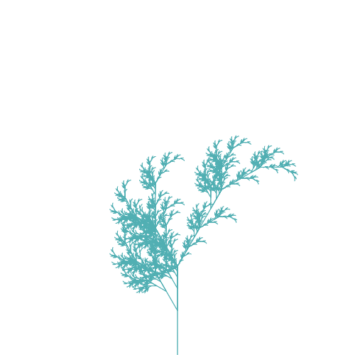

Creative coding is fun if you know a thing or two about programming. And if, like me, you are an utter noob when it comes to brushes and pencils, then it is even more enticing as a means to express yourself and create something just for the sake of it. It doesn’t have to be functional, but you do get to hone your hacking skills and set challenges for yourself along the way.
A fellow data scientist who is into “Art & AI” recently pointed me to the field of generative art . I have always been facinated by emergence and even more so when I came across the picture above. It is featured in this blog on how to draw a pencil-sketch-like forest with Processing. One thing led to another: I had a go at Processing in Python mode , dabbled with matplotlib for animations and read Schiffman’s the Nature of Code .
“Would it be possible to create a Python project that can generate those pencil-like drawings with random forests, with different types of trees?” , I thought (pun intended). Of course, someone already thought of that and it even has a name: algorithmic botany . Przemyslaw Prusinkiewicz and Aristid Lindenmayer wrote the seminal book on the subject in 1990, The Algorithmic Beauty of Plants . Lindenmayer invented L-systems already back in 1968. Today, household computers have enough resources to handle large-ish parallel writing systems and you could start modelling the growth of any plant using a framework like L-Py .
Although a lot has been written on the subject and there are quite a few open source libraries, they weren’t quite what I have in mind. Instead, the idea of creating generative art in Python emerged using the following components:
A lightweight implementation of L-systems that also supports stochastic and parametric production rules;
Integration with p5js via pyp5js as a web-native graphing engine.
The possibilities are endless and I can foresee spending way too much time on this. In this blog post, I will lay out the ideas behind this approach.
Playing with L-systems in Python
There are different kinds of L-systems, with increasing complexity. We will start with the simplest: Lindenmayer’s original L-system for modelling the growth of algae (We will jump right in, please read the article on Wikipedia if you need more context).
D0L: deterministic context-free L-system
# define L-system = 'A' = {'A' : 'AB' ,'B' : 'A' }# initialize = [AXIOM]= 7 def generate_d0l(axiom, productions, iterations):def rewrite_l(word):'' .join([RULES.get(c) or c for c in word]))return productions[- 1 ]if iterations == 0 :return axiomelse :return rewrite_l(generate_d0l(axiom, productions, iterations - 1 ))# main print ('' .join([f" { i} : { p} \n " for i,p in enumerate (productions)]))
0: A
1: AB
2: ABA
3: ABAAB
4: ABAABABA
5: ABAABABAABAAB
6: ABAABABAABAABABAABABA
7: ABAABABAABAABABAABABAABAABABAABAAB
I actually found the recursive Python implementation on this introductory website on recursion . While I still struggle to apply recursion, I find it satisfying to solve coding problems this way. And even with just these twenty lines of code, we have already stumbled on the Fibonacci numbers ! Have a look at the length of each successive sequence:
print ([len (word) for word in productions])
[1, 2, 3, 5, 8, 13, 21, 34]
Awesome as the nature of code may be, we are still a long way off from actually generating a tree. For that, we need branching rules. To do so, basic L-systems also allow constants, which are left untouched by the production rules. It is common to add constants + and - to denote rotations when branching, and [,] for handling the locations of the branching points. For a fractal plant, the code is as follows:
= "X" = {"X" : "F+[[X]-X]-F[-FX]+X" ,"F" : "FF" }= [AXIOM]print ('' .join([f" { i} : { p} \n " for i,p in enumerate (productions)]))
0: X
1: F+[[X]-X]-F[-FX]+X
2: FF+[[F+[[X]-X]-F[-FX]+X]-F+[[X]-X]-F[-FX]+X]-FF[-FFF+[[X]-X]-F[-FX]+X]+F+[[X]-X]-F[-FX]+X
3: FFFF+[[FF+[[F+[[X]-X]-F[-FX]+X]-F+[[X]-X]-F[-FX]+X]-FF[-FFF+[[X]-X]-F[-FX]+X]+F+[[X]-X]-F[-FX]+X]-FF+[[F+[[X]-X]-F[-FX]+X]-F+[[X]-X]-F[-FX]+X]-FF[-FFF+[[X]-X]-F[-FX]+X]+F+[[X]-X]-F[-FX]+X]-FFFF[-FFFFFF+[[F+[[X]-X]-F[-FX]+X]-F+[[X]-X]-F[-FX]+X]-FF[-FFF+[[X]-X]-F[-FX]+X]+F+[[X]-X]-F[-FX]+X]+FF+[[F+[[X]-X]-F[-FX]+X]-F+[[X]-X]-F[-FX]+X]-FF[-FFF+[[X]-X]-F[-FX]+X]+F+[[X]-X]-F[-FX]+X
4: FFFFFFFF+[[FFFF+[[FF+[[F+[[X]-X]-F[-FX]+X]-F+[[X]-X]-F[-FX]+X]-FF[-FFF+[[X]-X]-F[-FX]+X]+F+[[X]-X]-F[-FX]+X]-FF+[[F+[[X]-X]-F[-FX]+X]-F+[[X]-X]-F[-FX]+X]-FF[-FFF+[[X]-X]-F[-FX]+X]+F+[[X]-X]-F[-FX]+X]-FFFF[-FFFFFF+[[F+[[X]-X]-F[-FX]+X]-F+[[X]-X]-F[-FX]+X]-FF[-FFF+[[X]-X]-F[-FX]+X]+F+[[X]-X]-F[-FX]+X]+FF+[[F+[[X]-X]-F[-FX]+X]-F+[[X]-X]-F[-FX]+X]-FF[-FFF+[[X]-X]-F[-FX]+X]+F+[[X]-X]-F[-FX]+X]-FFFF+[[FF+[[F+[[X]-X]-F[-FX]+X]-F+[[X]-X]-F[-FX]+X]-FF[-FFF+[[X]-X]-F[-FX]+X]+F+[[X]-X]-F[-FX]+X]-FF+[[F+[[X]-X]-F[-FX]+X]-F+[[X]-X]-F[-FX]+X]-FF[-FFF+[[X]-X]-F[-FX]+X]+F+[[X]-X]-F[-FX]+X]-FFFF[-FFFFFF+[[F+[[X]-X]-F[-FX]+X]-F+[[X]-X]-F[-FX]+X]-FF[-FFF+[[X]-X]-F[-FX]+X]+F+[[X]-X]-F[-FX]+X]+FF+[[F+[[X]-X]-F[-FX]+X]-F+[[X]-X]-F[-FX]+X]-FF[-FFF+[[X]-X]-F[-FX]+X]+F+[[X]-X]-F[-FX]+X]-FFFFFFFF[-FFFFFFFFFFFF+[[FF+[[F+[[X]-X]-F[-FX]+X]-F+[[X]-X]-F[-FX]+X]-FF[-FFF+[[X]-X]-F[-FX]+X]+F+[[X]-X]-F[-FX]+X]-FF+[[F+[[X]-X]-F[-FX]+X]-F+[[X]-X]-F[-FX]+X]-FF[-FFF+[[X]-X]-F[-FX]+X]+F+[[X]-X]-F[-FX]+X]-FFFF[-FFFFFF+[[F+[[X]-X]-F[-FX]+X]-F+[[X]-X]-F[-FX]+X]-FF[-FFF+[[X]-X]-F[-FX]+X]+F+[[X]-X]-F[-FX]+X]+FF+[[F+[[X]-X]-F[-FX]+X]-F+[[X]-X]-F[-FX]+X]-FF[-FFF+[[X]-X]-F[-FX]+X]+F+[[X]-X]-F[-FX]+X]+FFFF+[[FF+[[F+[[X]-X]-F[-FX]+X]-F+[[X]-X]-F[-FX]+X]-FF[-FFF+[[X]-X]-F[-FX]+X]+F+[[X]-X]-F[-FX]+X]-FF+[[F+[[X]-X]-F[-FX]+X]-F+[[X]-X]-F[-FX]+X]-FF[-FFF+[[X]-X]-F[-FX]+X]+F+[[X]-X]-F[-FX]+X]-FFFF[-FFFFFF+[[F+[[X]-X]-F[-FX]+X]-F+[[X]-X]-F[-FX]+X]-FF[-FFF+[[X]-X]-F[-FX]+X]+F+[[X]-X]-F[-FX]+X]+FF+[[F+[[X]-X]-F[-FX]+X]-F+[[X]-X]-F[-FX]+X]-FF[-FFF+[[X]-X]-F[-FX]+X]+F+[[X]-X]-F[-FX]+X
5: FFFFFFFFFFFFFFFF+[[FFFFFFFF+[[FFFF+[[FF+[[F+[[X]-X]-F[-FX]+X]-F+[[X]-X]-F[-FX]+X]-FF[-FFF+[[X]-X]-F[-FX]+X]+F+[[X]-X]-F[-FX]+X]-FF+[[F+[[X]-X]-F[-FX]+X]-F+[[X]-X]-F[-FX]+X]-FF[-FFF+[[X]-X]-F[-FX]+X]+F+[[X]-X]-F[-FX]+X]-FFFF[-FFFFFF+[[F+[[X]-X]-F[-FX]+X]-F+[[X]-X]-F[-FX]+X]-FF[-FFF+[[X]-X]-F[-FX]+X]+F+[[X]-X]-F[-FX]+X]+FF+[[F+[[X]-X]-F[-FX]+X]-F+[[X]-X]-F[-FX]+X]-FF[-FFF+[[X]-X]-F[-FX]+X]+F+[[X]-X]-F[-FX]+X]-FFFF+[[FF+[[F+[[X]-X]-F[-FX]+X]-F+[[X]-X]-F[-FX]+X]-FF[-FFF+[[X]-X]-F[-FX]+X]+F+[[X]-X]-F[-FX]+X]-FF+[[F+[[X]-X]-F[-FX]+X]-F+[[X]-X]-F[-FX]+X]-FF[-FFF+[[X]-X]-F[-FX]+X]+F+[[X]-X]-F[-FX]+X]-FFFF[-FFFFFF+[[F+[[X]-X]-F[-FX]+X]-F+[[X]-X]-F[-FX]+X]-FF[-FFF+[[X]-X]-F[-FX]+X]+F+[[X]-X]-F[-FX]+X]+FF+[[F+[[X]-X]-F[-FX]+X]-F+[[X]-X]-F[-FX]+X]-FF[-FFF+[[X]-X]-F[-FX]+X]+F+[[X]-X]-F[-FX]+X]-FFFFFFFF[-FFFFFFFFFFFF+[[FF+[[F+[[X]-X]-F[-FX]+X]-F+[[X]-X]-F[-FX]+X]-FF[-FFF+[[X]-X]-F[-FX]+X]+F+[[X]-X]-F[-FX]+X]-FF+[[F+[[X]-X]-F[-FX]+X]-F+[[X]-X]-F[-FX]+X]-FF[-FFF+[[X]-X]-F[-FX]+X]+F+[[X]-X]-F[-FX]+X]-FFFF[-FFFFFF+[[F+[[X]-X]-F[-FX]+X]-F+[[X]-X]-F[-FX]+X]-FF[-FFF+[[X]-X]-F[-FX]+X]+F+[[X]-X]-F[-FX]+X]+FF+[[F+[[X]-X]-F[-FX]+X]-F+[[X]-X]-F[-FX]+X]-FF[-FFF+[[X]-X]-F[-FX]+X]+F+[[X]-X]-F[-FX]+X]+FFFF+[[FF+[[F+[[X]-X]-F[-FX]+X]-F+[[X]-X]-F[-FX]+X]-FF[-FFF+[[X]-X]-F[-FX]+X]+F+[[X]-X]-F[-FX]+X]-FF+[[F+[[X]-X]-F[-FX]+X]-F+[[X]-X]-F[-FX]+X]-FF[-FFF+[[X]-X]-F[-FX]+X]+F+[[X]-X]-F[-FX]+X]-FFFF[-FFFFFF+[[F+[[X]-X]-F[-FX]+X]-F+[[X]-X]-F[-FX]+X]-FF[-FFF+[[X]-X]-F[-FX]+X]+F+[[X]-X]-F[-FX]+X]+FF+[[F+[[X]-X]-F[-FX]+X]-F+[[X]-X]-F[-FX]+X]-FF[-FFF+[[X]-X]-F[-FX]+X]+F+[[X]-X]-F[-FX]+X]-FFFFFFFF+[[FFFF+[[FF+[[F+[[X]-X]-F[-FX]+X]-F+[[X]-X]-F[-FX]+X]-FF[-FFF+[[X]-X]-F[-FX]+X]+F+[[X]-X]-F[-FX]+X]-FF+[[F+[[X]-X]-F[-FX]+X]-F+[[X]-X]-F[-FX]+X]-FF[-FFF+[[X]-X]-F[-FX]+X]+F+[[X]-X]-F[-FX]+X]-FFFF[-FFFFFF+[[F+[[X]-X]-F[-FX]+X]-F+[[X]-X]-F[-FX]+X]-FF[-FFF+[[X]-X]-F[-FX]+X]+F+[[X]-X]-F[-FX]+X]+FF+[[F+[[X]-X]-F[-FX]+X]-F+[[X]-X]-F[-FX]+X]-FF[-FFF+[[X]-X]-F[-FX]+X]+F+[[X]-X]-F[-FX]+X]-FFFF+[[FF+[[F+[[X]-X]-F[-FX]+X]-F+[[X]-X]-F[-FX]+X]-FF[-FFF+[[X]-X]-F[-FX]+X]+F+[[X]-X]-F[-FX]+X]-FF+[[F+[[X]-X]-F[-FX]+X]-F+[[X]-X]-F[-FX]+X]-FF[-FFF+[[X]-X]-F[-FX]+X]+F+[[X]-X]-F[-FX]+X]-FFFF[-FFFFFF+[[F+[[X]-X]-F[-FX]+X]-F+[[X]-X]-F[-FX]+X]-FF[-FFF+[[X]-X]-F[-FX]+X]+F+[[X]-X]-F[-FX]+X]+FF+[[F+[[X]-X]-F[-FX]+X]-F+[[X]-X]-F[-FX]+X]-FF[-FFF+[[X]-X]-F[-FX]+X]+F+[[X]-X]-F[-FX]+X]-FFFFFFFF[-FFFFFFFFFFFF+[[FF+[[F+[[X]-X]-F[-FX]+X]-F+[[X]-X]-F[-FX]+X]-FF[-FFF+[[X]-X]-F[-FX]+X]+F+[[X]-X]-F[-FX]+X]-FF+[[F+[[X]-X]-F[-FX]+X]-F+[[X]-X]-F[-FX]+X]-FF[-FFF+[[X]-X]-F[-FX]+X]+F+[[X]-X]-F[-FX]+X]-FFFF[-FFFFFF+[[F+[[X]-X]-F[-FX]+X]-F+[[X]-X]-F[-FX]+X]-FF[-FFF+[[X]-X]-F[-FX]+X]+F+[[X]-X]-F[-FX]+X]+FF+[[F+[[X]-X]-F[-FX]+X]-F+[[X]-X]-F[-FX]+X]-FF[-FFF+[[X]-X]-F[-FX]+X]+F+[[X]-X]-F[-FX]+X]+FFFF+[[FF+[[F+[[X]-X]-F[-FX]+X]-F+[[X]-X]-F[-FX]+X]-FF[-FFF+[[X]-X]-F[-FX]+X]+F+[[X]-X]-F[-FX]+X]-FF+[[F+[[X]-X]-F[-FX]+X]-F+[[X]-X]-F[-FX]+X]-FF[-FFF+[[X]-X]-F[-FX]+X]+F+[[X]-X]-F[-FX]+X]-FFFF[-FFFFFF+[[F+[[X]-X]-F[-FX]+X]-F+[[X]-X]-F[-FX]+X]-FF[-FFF+[[X]-X]-F[-FX]+X]+F+[[X]-X]-F[-FX]+X]+FF+[[F+[[X]-X]-F[-FX]+X]-F+[[X]-X]-F[-FX]+X]-FF[-FFF+[[X]-X]-F[-FX]+X]+F+[[X]-X]-F[-FX]+X]-FFFFFFFFFFFFFFFF[-FFFFFFFFFFFFFFFFFFFFFFFF+[[FFFF+[[FF+[[F+[[X]-X]-F[-FX]+X]-F+[[X]-X]-F[-FX]+X]-FF[-FFF+[[X]-X]-F[-FX]+X]+F+[[X]-X]-F[-FX]+X]-FF+[[F+[[X]-X]-F[-FX]+X]-F+[[X]-X]-F[-FX]+X]-FF[-FFF+[[X]-X]-F[-FX]+X]+F+[[X]-X]-F[-FX]+X]-FFFF[-FFFFFF+[[F+[[X]-X]-F[-FX]+X]-F+[[X]-X]-F[-FX]+X]-FF[-FFF+[[X]-X]-F[-FX]+X]+F+[[X]-X]-F[-FX]+X]+FF+[[F+[[X]-X]-F[-FX]+X]-F+[[X]-X]-F[-FX]+X]-FF[-FFF+[[X]-X]-F[-FX]+X]+F+[[X]-X]-F[-FX]+X]-FFFF+[[FF+[[F+[[X]-X]-F[-FX]+X]-F+[[X]-X]-F[-FX]+X]-FF[-FFF+[[X]-X]-F[-FX]+X]+F+[[X]-X]-F[-FX]+X]-FF+[[F+[[X]-X]-F[-FX]+X]-F+[[X]-X]-F[-FX]+X]-FF[-FFF+[[X]-X]-F[-FX]+X]+F+[[X]-X]-F[-FX]+X]-FFFF[-FFFFFF+[[F+[[X]-X]-F[-FX]+X]-F+[[X]-X]-F[-FX]+X]-FF[-FFF+[[X]-X]-F[-FX]+X]+F+[[X]-X]-F[-FX]+X]+FF+[[F+[[X]-X]-F[-FX]+X]-F+[[X]-X]-F[-FX]+X]-FF[-FFF+[[X]-X]-F[-FX]+X]+F+[[X]-X]-F[-FX]+X]-FFFFFFFF[-FFFFFFFFFFFF+[[FF+[[F+[[X]-X]-F[-FX]+X]-F+[[X]-X]-F[-FX]+X]-FF[-FFF+[[X]-X]-F[-FX]+X]+F+[[X]-X]-F[-FX]+X]-FF+[[F+[[X]-X]-F[-FX]+X]-F+[[X]-X]-F[-FX]+X]-FF[-FFF+[[X]-X]-F[-FX]+X]+F+[[X]-X]-F[-FX]+X]-FFFF[-FFFFFF+[[F+[[X]-X]-F[-FX]+X]-F+[[X]-X]-F[-FX]+X]-FF[-FFF+[[X]-X]-F[-FX]+X]+F+[[X]-X]-F[-FX]+X]+FF+[[F+[[X]-X]-F[-FX]+X]-F+[[X]-X]-F[-FX]+X]-FF[-FFF+[[X]-X]-F[-FX]+X]+F+[[X]-X]-F[-FX]+X]+FFFF+[[FF+[[F+[[X]-X]-F[-FX]+X]-F+[[X]-X]-F[-FX]+X]-FF[-FFF+[[X]-X]-F[-FX]+X]+F+[[X]-X]-F[-FX]+X]-FF+[[F+[[X]-X]-F[-FX]+X]-F+[[X]-X]-F[-FX]+X]-FF[-FFF+[[X]-X]-F[-FX]+X]+F+[[X]-X]-F[-FX]+X]-FFFF[-FFFFFF+[[F+[[X]-X]-F[-FX]+X]-F+[[X]-X]-F[-FX]+X]-FF[-FFF+[[X]-X]-F[-FX]+X]+F+[[X]-X]-F[-FX]+X]+FF+[[F+[[X]-X]-F[-FX]+X]-F+[[X]-X]-F[-FX]+X]-FF[-FFF+[[X]-X]-F[-FX]+X]+F+[[X]-X]-F[-FX]+X]+FFFFFFFF+[[FFFF+[[FF+[[F+[[X]-X]-F[-FX]+X]-F+[[X]-X]-F[-FX]+X]-FF[-FFF+[[X]-X]-F[-FX]+X]+F+[[X]-X]-F[-FX]+X]-FF+[[F+[[X]-X]-F[-FX]+X]-F+[[X]-X]-F[-FX]+X]-FF[-FFF+[[X]-X]-F[-FX]+X]+F+[[X]-X]-F[-FX]+X]-FFFF[-FFFFFF+[[F+[[X]-X]-F[-FX]+X]-F+[[X]-X]-F[-FX]+X]-FF[-FFF+[[X]-X]-F[-FX]+X]+F+[[X]-X]-F[-FX]+X]+FF+[[F+[[X]-X]-F[-FX]+X]-F+[[X]-X]-F[-FX]+X]-FF[-FFF+[[X]-X]-F[-FX]+X]+F+[[X]-X]-F[-FX]+X]-FFFF+[[FF+[[F+[[X]-X]-F[-FX]+X]-F+[[X]-X]-F[-FX]+X]-FF[-FFF+[[X]-X]-F[-FX]+X]+F+[[X]-X]-F[-FX]+X]-FF+[[F+[[X]-X]-F[-FX]+X]-F+[[X]-X]-F[-FX]+X]-FF[-FFF+[[X]-X]-F[-FX]+X]+F+[[X]-X]-F[-FX]+X]-FFFF[-FFFFFF+[[F+[[X]-X]-F[-FX]+X]-F+[[X]-X]-F[-FX]+X]-FF[-FFF+[[X]-X]-F[-FX]+X]+F+[[X]-X]-F[-FX]+X]+FF+[[F+[[X]-X]-F[-FX]+X]-F+[[X]-X]-F[-FX]+X]-FF[-FFF+[[X]-X]-F[-FX]+X]+F+[[X]-X]-F[-FX]+X]-FFFFFFFF[-FFFFFFFFFFFF+[[FF+[[F+[[X]-X]-F[-FX]+X]-F+[[X]-X]-F[-FX]+X]-FF[-FFF+[[X]-X]-F[-FX]+X]+F+[[X]-X]-F[-FX]+X]-FF+[[F+[[X]-X]-F[-FX]+X]-F+[[X]-X]-F[-FX]+X]-FF[-FFF+[[X]-X]-F[-FX]+X]+F+[[X]-X]-F[-FX]+X]-FFFF[-FFFFFF+[[F+[[X]-X]-F[-FX]+X]-F+[[X]-X]-F[-FX]+X]-FF[-FFF+[[X]-X]-F[-FX]+X]+F+[[X]-X]-F[-FX]+X]+FF+[[F+[[X]-X]-F[-FX]+X]-F+[[X]-X]-F[-FX]+X]-FF[-FFF+[[X]-X]-F[-FX]+X]+F+[[X]-X]-F[-FX]+X]+FFFF+[[FF+[[F+[[X]-X]-F[-FX]+X]-F+[[X]-X]-F[-FX]+X]-FF[-FFF+[[X]-X]-F[-FX]+X]+F+[[X]-X]-F[-FX]+X]-FF+[[F+[[X]-X]-F[-FX]+X]-F+[[X]-X]-F[-FX]+X]-FF[-FFF+[[X]-X]-F[-FX]+X]+F+[[X]-X]-F[-FX]+X]-FFFF[-FFFFFF+[[F+[[X]-X]-F[-FX]+X]-F+[[X]-X]-F[-FX]+X]-FF[-FFF+[[X]-X]-F[-FX]+X]+F+[[X]-X]-F[-FX]+X]+FF+[[F+[[X]-X]-F[-FX]+X]-F+[[X]-X]-F[-FX]+X]-FF[-FFF+[[X]-X]-F[-FX]+X]+F+[[X]-X]-F[-FX]+X
6: FFFFFFFFFFFFFFFFFFFFFFFFFFFFFFFF+[[FFFFFFFFFFFFFFFF+[[FFFFFFFF+[[FFFF+[[FF+[[F+[[X]-X]-F[-FX]+X]-F+[[X]-X]-F[-FX]+X]-FF[-FFF+[[X]-X]-F[-FX]+X]+F+[[X]-X]-F[-FX]+X]-FF+[[F+[[X]-X]-F[-FX]+X]-F+[[X]-X]-F[-FX]+X]-FF[-FFF+[[X]-X]-F[-FX]+X]+F+[[X]-X]-F[-FX]+X]-FFFF[-FFFFFF+[[F+[[X]-X]-F[-FX]+X]-F+[[X]-X]-F[-FX]+X]-FF[-FFF+[[X]-X]-F[-FX]+X]+F+[[X]-X]-F[-FX]+X]+FF+[[F+[[X]-X]-F[-FX]+X]-F+[[X]-X]-F[-FX]+X]-FF[-FFF+[[X]-X]-F[-FX]+X]+F+[[X]-X]-F[-FX]+X]-FFFF+[[FF+[[F+[[X]-X]-F[-FX]+X]-F+[[X]-X]-F[-FX]+X]-FF[-FFF+[[X]-X]-F[-FX]+X]+F+[[X]-X]-F[-FX]+X]-FF+[[F+[[X]-X]-F[-FX]+X]-F+[[X]-X]-F[-FX]+X]-FF[-FFF+[[X]-X]-F[-FX]+X]+F+[[X]-X]-F[-FX]+X]-FFFF[-FFFFFF+[[F+[[X]-X]-F[-FX]+X]-F+[[X]-X]-F[-FX]+X]-FF[-FFF+[[X]-X]-F[-FX]+X]+F+[[X]-X]-F[-FX]+X]+FF+[[F+[[X]-X]-F[-FX]+X]-F+[[X]-X]-F[-FX]+X]-FF[-FFF+[[X]-X]-F[-FX]+X]+F+[[X]-X]-F[-FX]+X]-FFFFFFFF[-FFFFFFFFFFFF+[[FF+[[F+[[X]-X]-F[-FX]+X]-F+[[X]-X]-F[-FX]+X]-FF[-FFF+[[X]-X]-F[-FX]+X]+F+[[X]-X]-F[-FX]+X]-FF+[[F+[[X]-X]-F[-FX]+X]-F+[[X]-X]-F[-FX]+X]-FF[-FFF+[[X]-X]-F[-FX]+X]+F+[[X]-X]-F[-FX]+X]-FFFF[-FFFFFF+[[F+[[X]-X]-F[-FX]+X]-F+[[X]-X]-F[-FX]+X]-FF[-FFF+[[X]-X]-F[-FX]+X]+F+[[X]-X]-F[-FX]+X]+FF+[[F+[[X]-X]-F[-FX]+X]-F+[[X]-X]-F[-FX]+X]-FF[-FFF+[[X]-X]-F[-FX]+X]+F+[[X]-X]-F[-FX]+X]+FFFF+[[FF+[[F+[[X]-X]-F[-FX]+X]-F+[[X]-X]-F[-FX]+X]-FF[-FFF+[[X]-X]-F[-FX]+X]+F+[[X]-X]-F[-FX]+X]-FF+[[F+[[X]-X]-F[-FX]+X]-F+[[X]-X]-F[-FX]+X]-FF[-FFF+[[X]-X]-F[-FX]+X]+F+[[X]-X]-F[-FX]+X]-FFFF[-FFFFFF+[[F+[[X]-X]-F[-FX]+X]-F+[[X]-X]-F[-FX]+X]-FF[-FFF+[[X]-X]-F[-FX]+X]+F+[[X]-X]-F[-FX]+X]+FF+[[F+[[X]-X]-F[-FX]+X]-F+[[X]-X]-F[-FX]+X]-FF[-FFF+[[X]-X]-F[-FX]+X]+F+[[X]-X]-F[-FX]+X]-FFFFFFFF+[[FFFF+[[FF+[[F+[[X]-X]-F[-FX]+X]-F+[[X]-X]-F[-FX]+X]-FF[-FFF+[[X]-X]-F[-FX]+X]+F+[[X]-X]-F[-FX]+X]-FF+[[F+[[X]-X]-F[-FX]+X]-F+[[X]-X]-F[-FX]+X]-FF[-FFF+[[X]-X]-F[-FX]+X]+F+[[X]-X]-F[-FX]+X]-FFFF[-FFFFFF+[[F+[[X]-X]-F[-FX]+X]-F+[[X]-X]-F[-FX]+X]-FF[-FFF+[[X]-X]-F[-FX]+X]+F+[[X]-X]-F[-FX]+X]+FF+[[F+[[X]-X]-F[-FX]+X]-F+[[X]-X]-F[-FX]+X]-FF[-FFF+[[X]-X]-F[-FX]+X]+F+[[X]-X]-F[-FX]+X]-FFFF+[[FF+[[F+[[X]-X]-F[-FX]+X]-F+[[X]-X]-F[-FX]+X]-FF[-FFF+[[X]-X]-F[-FX]+X]+F+[[X]-X]-F[-FX]+X]-FF+[[F+[[X]-X]-F[-FX]+X]-F+[[X]-X]-F[-FX]+X]-FF[-FFF+[[X]-X]-F[-FX]+X]+F+[[X]-X]-F[-FX]+X]-FFFF[-FFFFFF+[[F+[[X]-X]-F[-FX]+X]-F+[[X]-X]-F[-FX]+X]-FF[-FFF+[[X]-X]-F[-FX]+X]+F+[[X]-X]-F[-FX]+X]+FF+[[F+[[X]-X]-F[-FX]+X]-F+[[X]-X]-F[-FX]+X]-FF[-FFF+[[X]-X]-F[-FX]+X]+F+[[X]-X]-F[-FX]+X]-FFFFFFFF[-FFFFFFFFFFFF+[[FF+[[F+[[X]-X]-F[-FX]+X]-F+[[X]-X]-F[-FX]+X]-FF[-FFF+[[X]-X]-F[-FX]+X]+F+[[X]-X]-F[-FX]+X]-FF+[[F+[[X]-X]-F[-FX]+X]-F+[[X]-X]-F[-FX]+X]-FF[-FFF+[[X]-X]-F[-FX]+X]+F+[[X]-X]-F[-FX]+X]-FFFF[-FFFFFF+[[F+[[X]-X]-F[-FX]+X]-F+[[X]-X]-F[-FX]+X]-FF[-FFF+[[X]-X]-F[-FX]+X]+F+[[X]-X]-F[-FX]+X]+FF+[[F+[[X]-X]-F[-FX]+X]-F+[[X]-X]-F[-FX]+X]-FF[-FFF+[[X]-X]-F[-FX]+X]+F+[[X]-X]-F[-FX]+X]+FFFF+[[FF+[[F+[[X]-X]-F[-FX]+X]-F+[[X]-X]-F[-FX]+X]-FF[-FFF+[[X]-X]-F[-FX]+X]+F+[[X]-X]-F[-FX]+X]-FF+[[F+[[X]-X]-F[-FX]+X]-F+[[X]-X]-F[-FX]+X]-FF[-FFF+[[X]-X]-F[-FX]+X]+F+[[X]-X]-F[-FX]+X]-FFFF[-FFFFFF+[[F+[[X]-X]-F[-FX]+X]-F+[[X]-X]-F[-FX]+X]-FF[-FFF+[[X]-X]-F[-FX]+X]+F+[[X]-X]-F[-FX]+X]+FF+[[F+[[X]-X]-F[-FX]+X]-F+[[X]-X]-F[-FX]+X]-FF[-FFF+[[X]-X]-F[-FX]+X]+F+[[X]-X]-F[-FX]+X]-FFFFFFFFFFFFFFFF[-FFFFFFFFFFFFFFFFFFFFFFFF+[[FFFF+[[FF+[[F+[[X]-X]-F[-FX]+X]-F+[[X]-X]-F[-FX]+X]-FF[-FFF+[[X]-X]-F[-FX]+X]+F+[[X]-X]-F[-FX]+X]-FF+[[F+[[X]-X]-F[-FX]+X]-F+[[X]-X]-F[-FX]+X]-FF[-FFF+[[X]-X]-F[-FX]+X]+F+[[X]-X]-F[-FX]+X]-FFFF[-FFFFFF+[[F+[[X]-X]-F[-FX]+X]-F+[[X]-X]-F[-FX]+X]-FF[-FFF+[[X]-X]-F[-FX]+X]+F+[[X]-X]-F[-FX]+X]+FF+[[F+[[X]-X]-F[-FX]+X]-F+[[X]-X]-F[-FX]+X]-FF[-FFF+[[X]-X]-F[-FX]+X]+F+[[X]-X]-F[-FX]+X]-FFFF+[[FF+[[F+[[X]-X]-F[-FX]+X]-F+[[X]-X]-F[-FX]+X]-FF[-FFF+[[X]-X]-F[-FX]+X]+F+[[X]-X]-F[-FX]+X]-FF+[[F+[[X]-X]-F[-FX]+X]-F+[[X]-X]-F[-FX]+X]-FF[-FFF+[[X]-X]-F[-FX]+X]+F+[[X]-X]-F[-FX]+X]-FFFF[-FFFFFF+[[F+[[X]-X]-F[-FX]+X]-F+[[X]-X]-F[-FX]+X]-FF[-FFF+[[X]-X]-F[-FX]+X]+F+[[X]-X]-F[-FX]+X]+FF+[[F+[[X]-X]-F[-FX]+X]-F+[[X]-X]-F[-FX]+X]-FF[-FFF+[[X]-X]-F[-FX]+X]+F+[[X]-X]-F[-FX]+X]-FFFFFFFF[-FFFFFFFFFFFF+[[FF+[[F+[[X]-X]-F[-FX]+X]-F+[[X]-X]-F[-FX]+X]-FF[-FFF+[[X]-X]-F[-FX]+X]+F+[[X]-X]-F[-FX]+X]-FF+[[F+[[X]-X]-F[-FX]+X]-F+[[X]-X]-F[-FX]+X]-FF[-FFF+[[X]-X]-F[-FX]+X]+F+[[X]-X]-F[-FX]+X]-FFFF[-FFFFFF+[[F+[[X]-X]-F[-FX]+X]-F+[[X]-X]-F[-FX]+X]-FF[-FFF+[[X]-X]-F[-FX]+X]+F+[[X]-X]-F[-FX]+X]+FF+[[F+[[X]-X]-F[-FX]+X]-F+[[X]-X]-F[-FX]+X]-FF[-FFF+[[X]-X]-F[-FX]+X]+F+[[X]-X]-F[-FX]+X]+FFFF+[[FF+[[F+[[X]-X]-F[-FX]+X]-F+[[X]-X]-F[-FX]+X]-FF[-FFF+[[X]-X]-F[-FX]+X]+F+[[X]-X]-F[-FX]+X]-FF+[[F+[[X]-X]-F[-FX]+X]-F+[[X]-X]-F[-FX]+X]-FF[-FFF+[[X]-X]-F[-FX]+X]+F+[[X]-X]-F[-FX]+X]-FFFF[-FFFFFF+[[F+[[X]-X]-F[-FX]+X]-F+[[X]-X]-F[-FX]+X]-FF[-FFF+[[X]-X]-F[-FX]+X]+F+[[X]-X]-F[-FX]+X]+FF+[[F+[[X]-X]-F[-FX]+X]-F+[[X]-X]-F[-FX]+X]-FF[-FFF+[[X]-X]-F[-FX]+X]+F+[[X]-X]-F[-FX]+X]+FFFFFFFF+[[FFFF+[[FF+[[F+[[X]-X]-F[-FX]+X]-F+[[X]-X]-F[-FX]+X]-FF[-FFF+[[X]-X]-F[-FX]+X]+F+[[X]-X]-F[-FX]+X]-FF+[[F+[[X]-X]-F[-FX]+X]-F+[[X]-X]-F[-FX]+X]-FF[-FFF+[[X]-X]-F[-FX]+X]+F+[[X]-X]-F[-FX]+X]-FFFF[-FFFFFF+[[F+[[X]-X]-F[-FX]+X]-F+[[X]-X]-F[-FX]+X]-FF[-FFF+[[X]-X]-F[-FX]+X]+F+[[X]-X]-F[-FX]+X]+FF+[[F+[[X]-X]-F[-FX]+X]-F+[[X]-X]-F[-FX]+X]-FF[-FFF+[[X]-X]-F[-FX]+X]+F+[[X]-X]-F[-FX]+X]-FFFF+[[FF+[[F+[[X]-X]-F[-FX]+X]-F+[[X]-X]-F[-FX]+X]-FF[-FFF+[[X]-X]-F[-FX]+X]+F+[[X]-X]-F[-FX]+X]-FF+[[F+[[X]-X]-F[-FX]+X]-F+[[X]-X]-F[-FX]+X]-FF[-FFF+[[X]-X]-F[-FX]+X]+F+[[X]-X]-F[-FX]+X]-FFFF[-FFFFFF+[[F+[[X]-X]-F[-FX]+X]-F+[[X]-X]-F[-FX]+X]-FF[-FFF+[[X]-X]-F[-FX]+X]+F+[[X]-X]-F[-FX]+X]+FF+[[F+[[X]-X]-F[-FX]+X]-F+[[X]-X]-F[-FX]+X]-FF[-FFF+[[X]-X]-F[-FX]+X]+F+[[X]-X]-F[-FX]+X]-FFFFFFFF[-FFFFFFFFFFFF+[[FF+[[F+[[X]-X]-F[-FX]+X]-F+[[X]-X]-F[-FX]+X]-FF[-FFF+[[X]-X]-F[-FX]+X]+F+[[X]-X]-F[-FX]+X]-FF+[[F+[[X]-X]-F[-FX]+X]-F+[[X]-X]-F[-FX]+X]-FF[-FFF+[[X]-X]-F[-FX]+X]+F+[[X]-X]-F[-FX]+X]-FFFF[-FFFFFF+[[F+[[X]-X]-F[-FX]+X]-F+[[X]-X]-F[-FX]+X]-FF[-FFF+[[X]-X]-F[-FX]+X]+F+[[X]-X]-F[-FX]+X]+FF+[[F+[[X]-X]-F[-FX]+X]-F+[[X]-X]-F[-FX]+X]-FF[-FFF+[[X]-X]-F[-FX]+X]+F+[[X]-X]-F[-FX]+X]+FFFF+[[FF+[[F+[[X]-X]-F[-FX]+X]-F+[[X]-X]-F[-FX]+X]-FF[-FFF+[[X]-X]-F[-FX]+X]+F+[[X]-X]-F[-FX]+X]-FF+[[F+[[X]-X]-F[-FX]+X]-F+[[X]-X]-F[-FX]+X]-FF[-FFF+[[X]-X]-F[-FX]+X]+F+[[X]-X]-F[-FX]+X]-FFFF[-FFFFFF+[[F+[[X]-X]-F[-FX]+X]-F+[[X]-X]-F[-FX]+X]-FF[-FFF+[[X]-X]-F[-FX]+X]+F+[[X]-X]-F[-FX]+X]+FF+[[F+[[X]-X]-F[-FX]+X]-F+[[X]-X]-F[-FX]+X]-FF[-FFF+[[X]-X]-F[-FX]+X]+F+[[X]-X]-F[-FX]+X]-FFFFFFFFFFFFFFFF+[[FFFFFFFF+[[FFFF+[[FF+[[F+[[X]-X]-F[-FX]+X]-F+[[X]-X]-F[-FX]+X]-FF[-FFF+[[X]-X]-F[-FX]+X]+F+[[X]-X]-F[-FX]+X]-FF+[[F+[[X]-X]-F[-FX]+X]-F+[[X]-X]-F[-FX]+X]-FF[-FFF+[[X]-X]-F[-FX]+X]+F+[[X]-X]-F[-FX]+X]-FFFF[-FFFFFF+[[F+[[X]-X]-F[-FX]+X]-F+[[X]-X]-F[-FX]+X]-FF[-FFF+[[X]-X]-F[-FX]+X]+F+[[X]-X]-F[-FX]+X]+FF+[[F+[[X]-X]-F[-FX]+X]-F+[[X]-X]-F[-FX]+X]-FF[-FFF+[[X]-X]-F[-FX]+X]+F+[[X]-X]-F[-FX]+X]-FFFF+[[FF+[[F+[[X]-X]-F[-FX]+X]-F+[[X]-X]-F[-FX]+X]-FF[-FFF+[[X]-X]-F[-FX]+X]+F+[[X]-X]-F[-FX]+X]-FF+[[F+[[X]-X]-F[-FX]+X]-F+[[X]-X]-F[-FX]+X]-FF[-FFF+[[X]-X]-F[-FX]+X]+F+[[X]-X]-F[-FX]+X]-FFFF[-FFFFFF+[[F+[[X]-X]-F[-FX]+X]-F+[[X]-X]-F[-FX]+X]-FF[-FFF+[[X]-X]-F[-FX]+X]+F+[[X]-X]-F[-FX]+X]+FF+[[F+[[X]-X]-F[-FX]+X]-F+[[X]-X]-F[-FX]+X]-FF[-FFF+[[X]-X]-F[-FX]+X]+F+[[X]-X]-F[-FX]+X]-FFFFFFFF[-FFFFFFFFFFFF+[[FF+[[F+[[X]-X]-F[-FX]+X]-F+[[X]-X]-F[-FX]+X]-FF[-FFF+[[X]-X]-F[-FX]+X]+F+[[X]-X]-F[-FX]+X]-FF+[[F+[[X]-X]-F[-FX]+X]-F+[[X]-X]-F[-FX]+X]-FF[-FFF+[[X]-X]-F[-FX]+X]+F+[[X]-X]-F[-FX]+X]-FFFF[-FFFFFF+[[F+[[X]-X]-F[-FX]+X]-F+[[X]-X]-F[-FX]+X]-FF[-FFF+[[X]-X]-F[-FX]+X]+F+[[X]-X]-F[-FX]+X]+FF+[[F+[[X]-X]-F[-FX]+X]-F+[[X]-X]-F[-FX]+X]-FF[-FFF+[[X]-X]-F[-FX]+X]+F+[[X]-X]-F[-FX]+X]+FFFF+[[FF+[[F+[[X]-X]-F[-FX]+X]-F+[[X]-X]-F[-FX]+X]-FF[-FFF+[[X]-X]-F[-FX]+X]+F+[[X]-X]-F[-FX]+X]-FF+[[F+[[X]-X]-F[-FX]+X]-F+[[X]-X]-F[-FX]+X]-FF[-FFF+[[X]-X]-F[-FX]+X]+F+[[X]-X]-F[-FX]+X]-FFFF[-FFFFFF+[[F+[[X]-X]-F[-FX]+X]-F+[[X]-X]-F[-FX]+X]-FF[-FFF+[[X]-X]-F[-FX]+X]+F+[[X]-X]-F[-FX]+X]+FF+[[F+[[X]-X]-F[-FX]+X]-F+[[X]-X]-F[-FX]+X]-FF[-FFF+[[X]-X]-F[-FX]+X]+F+[[X]-X]-F[-FX]+X]-FFFFFFFF+[[FFFF+[[FF+[[F+[[X]-X]-F[-FX]+X]-F+[[X]-X]-F[-FX]+X]-FF[-FFF+[[X]-X]-F[-FX]+X]+F+[[X]-X]-F[-FX]+X]-FF+[[F+[[X]-X]-F[-FX]+X]-F+[[X]-X]-F[-FX]+X]-FF[-FFF+[[X]-X]-F[-FX]+X]+F+[[X]-X]-F[-FX]+X]-FFFF[-FFFFFF+[[F+[[X]-X]-F[-FX]+X]-F+[[X]-X]-F[-FX]+X]-FF[-FFF+[[X]-X]-F[-FX]+X]+F+[[X]-X]-F[-FX]+X]+FF+[[F+[[X]-X]-F[-FX]+X]-F+[[X]-X]-F[-FX]+X]-FF[-FFF+[[X]-X]-F[-FX]+X]+F+[[X]-X]-F[-FX]+X]-FFFF+[[FF+[[F+[[X]-X]-F[-FX]+X]-F+[[X]-X]-F[-FX]+X]-FF[-FFF+[[X]-X]-F[-FX]+X]+F+[[X]-X]-F[-FX]+X]-FF+[[F+[[X]-X]-F[-FX]+X]-F+[[X]-X]-F[-FX]+X]-FF[-FFF+[[X]-X]-F[-FX]+X]+F+[[X]-X]-F[-FX]+X]-FFFF[-FFFFFF+[[F+[[X]-X]-F[-FX]+X]-F+[[X]-X]-F[-FX]+X]-FF[-FFF+[[X]-X]-F[-FX]+X]+F+[[X]-X]-F[-FX]+X]+FF+[[F+[[X]-X]-F[-FX]+X]-F+[[X]-X]-F[-FX]+X]-FF[-FFF+[[X]-X]-F[-FX]+X]+F+[[X]-X]-F[-FX]+X]-FFFFFFFF[-FFFFFFFFFFFF+[[FF+[[F+[[X]-X]-F[-FX]+X]-F+[[X]-X]-F[-FX]+X]-FF[-FFF+[[X]-X]-F[-FX]+X]+F+[[X]-X]-F[-FX]+X]-FF+[[F+[[X]-X]-F[-FX]+X]-F+[[X]-X]-F[-FX]+X]-FF[-FFF+[[X]-X]-F[-FX]+X]+F+[[X]-X]-F[-FX]+X]-FFFF[-FFFFFF+[[F+[[X]-X]-F[-FX]+X]-F+[[X]-X]-F[-FX]+X]-FF[-FFF+[[X]-X]-F[-FX]+X]+F+[[X]-X]-F[-FX]+X]+FF+[[F+[[X]-X]-F[-FX]+X]-F+[[X]-X]-F[-FX]+X]-FF[-FFF+[[X]-X]-F[-FX]+X]+F+[[X]-X]-F[-FX]+X]+FFFF+[[FF+[[F+[[X]-X]-F[-FX]+X]-F+[[X]-X]-F[-FX]+X]-FF[-FFF+[[X]-X]-F[-FX]+X]+F+[[X]-X]-F[-FX]+X]-FF+[[F+[[X]-X]-F[-FX]+X]-F+[[X]-X]-F[-FX]+X]-FF[-FFF+[[X]-X]-F[-FX]+X]+F+[[X]-X]-F[-FX]+X]-FFFF[-FFFFFF+[[F+[[X]-X]-F[-FX]+X]-F+[[X]-X]-F[-FX]+X]-FF[-FFF+[[X]-X]-F[-FX]+X]+F+[[X]-X]-F[-FX]+X]+FF+[[F+[[X]-X]-F[-FX]+X]-F+[[X]-X]-F[-FX]+X]-FF[-FFF+[[X]-X]-F[-FX]+X]+F+[[X]-X]-F[-FX]+X]-FFFFFFFFFFFFFFFF[-FFFFFFFFFFFFFFFFFFFFFFFF+[[FFFF+[[FF+[[F+[[X]-X]-F[-FX]+X]-F+[[X]-X]-F[-FX]+X]-FF[-FFF+[[X]-X]-F[-FX]+X]+F+[[X]-X]-F[-FX]+X]-FF+[[F+[[X]-X]-F[-FX]+X]-F+[[X]-X]-F[-FX]+X]-FF[-FFF+[[X]-X]-F[-FX]+X]+F+[[X]-X]-F[-FX]+X]-FFFF[-FFFFFF+[[F+[[X]-X]-F[-FX]+X]-F+[[X]-X]-F[-FX]+X]-FF[-FFF+[[X]-X]-F[-FX]+X]+F+[[X]-X]-F[-FX]+X]+FF+[[F+[[X]-X]-F[-FX]+X]-F+[[X]-X]-F[-FX]+X]-FF[-FFF+[[X]-X]-F[-FX]+X]+F+[[X]-X]-F[-FX]+X]-FFFF+[[FF+[[F+[[X]-X]-F[-FX]+X]-F+[[X]-X]-F[-FX]+X]-FF[-FFF+[[X]-X]-F[-FX]+X]+F+[[X]-X]-F[-FX]+X]-FF+[[F+[[X]-X]-F[-FX]+X]-F+[[X]-X]-F[-FX]+X]-FF[-FFF+[[X]-X]-F[-FX]+X]+F+[[X]-X]-F[-FX]+X]-FFFF[-FFFFFF+[[F+[[X]-X]-F[-FX]+X]-F+[[X]-X]-F[-FX]+X]-FF[-FFF+[[X]-X]-F[-FX]+X]+F+[[X]-X]-F[-FX]+X]+FF+[[F+[[X]-X]-F[-FX]+X]-F+[[X]-X]-F[-FX]+X]-FF[-FFF+[[X]-X]-F[-FX]+X]+F+[[X]-X]-F[-FX]+X]-FFFFFFFF[-FFFFFFFFFFFF+[[FF+[[F+[[X]-X]-F[-FX]+X]-F+[[X]-X]-F[-FX]+X]-FF[-FFF+[[X]-X]-F[-FX]+X]+F+[[X]-X]-F[-FX]+X]-FF+[[F+[[X]-X]-F[-FX]+X]-F+[[X]-X]-F[-FX]+X]-FF[-FFF+[[X]-X]-F[-FX]+X]+F+[[X]-X]-F[-FX]+X]-FFFF[-FFFFFF+[[F+[[X]-X]-F[-FX]+X]-F+[[X]-X]-F[-FX]+X]-FF[-FFF+[[X]-X]-F[-FX]+X]+F+[[X]-X]-F[-FX]+X]+FF+[[F+[[X]-X]-F[-FX]+X]-F+[[X]-X]-F[-FX]+X]-FF[-FFF+[[X]-X]-F[-FX]+X]+F+[[X]-X]-F[-FX]+X]+FFFF+[[FF+[[F+[[X]-X]-F[-FX]+X]-F+[[X]-X]-F[-FX]+X]-FF[-FFF+[[X]-X]-F[-FX]+X]+F+[[X]-X]-F[-FX]+X]-FF+[[F+[[X]-X]-F[-FX]+X]-F+[[X]-X]-F[-FX]+X]-FF[-FFF+[[X]-X]-F[-FX]+X]+F+[[X]-X]-F[-FX]+X]-FFFF[-FFFFFF+[[F+[[X]-X]-F[-FX]+X]-F+[[X]-X]-F[-FX]+X]-FF[-FFF+[[X]-X]-F[-FX]+X]+F+[[X]-X]-F[-FX]+X]+FF+[[F+[[X]-X]-F[-FX]+X]-F+[[X]-X]-F[-FX]+X]-FF[-FFF+[[X]-X]-F[-FX]+X]+F+[[X]-X]-F[-FX]+X]+FFFFFFFF+[[FFFF+[[FF+[[F+[[X]-X]-F[-FX]+X]-F+[[X]-X]-F[-FX]+X]-FF[-FFF+[[X]-X]-F[-FX]+X]+F+[[X]-X]-F[-FX]+X]-FF+[[F+[[X]-X]-F[-FX]+X]-F+[[X]-X]-F[-FX]+X]-FF[-FFF+[[X]-X]-F[-FX]+X]+F+[[X]-X]-F[-FX]+X]-FFFF[-FFFFFF+[[F+[[X]-X]-F[-FX]+X]-F+[[X]-X]-F[-FX]+X]-FF[-FFF+[[X]-X]-F[-FX]+X]+F+[[X]-X]-F[-FX]+X]+FF+[[F+[[X]-X]-F[-FX]+X]-F+[[X]-X]-F[-FX]+X]-FF[-FFF+[[X]-X]-F[-FX]+X]+F+[[X]-X]-F[-FX]+X]-FFFF+[[FF+[[F+[[X]-X]-F[-FX]+X]-F+[[X]-X]-F[-FX]+X]-FF[-FFF+[[X]-X]-F[-FX]+X]+F+[[X]-X]-F[-FX]+X]-FF+[[F+[[X]-X]-F[-FX]+X]-F+[[X]-X]-F[-FX]+X]-FF[-FFF+[[X]-X]-F[-FX]+X]+F+[[X]-X]-F[-FX]+X]-FFFF[-FFFFFF+[[F+[[X]-X]-F[-FX]+X]-F+[[X]-X]-F[-FX]+X]-FF[-FFF+[[X]-X]-F[-FX]+X]+F+[[X]-X]-F[-FX]+X]+FF+[[F+[[X]-X]-F[-FX]+X]-F+[[X]-X]-F[-FX]+X]-FF[-FFF+[[X]-X]-F[-FX]+X]+F+[[X]-X]-F[-FX]+X]-FFFFFFFF[-FFFFFFFFFFFF+[[FF+[[F+[[X]-X]-F[-FX]+X]-F+[[X]-X]-F[-FX]+X]-FF[-FFF+[[X]-X]-F[-FX]+X]+F+[[X]-X]-F[-FX]+X]-FF+[[F+[[X]-X]-F[-FX]+X]-F+[[X]-X]-F[-FX]+X]-FF[-FFF+[[X]-X]-F[-FX]+X]+F+[[X]-X]-F[-FX]+X]-FFFF[-FFFFFF+[[F+[[X]-X]-F[-FX]+X]-F+[[X]-X]-F[-FX]+X]-FF[-FFF+[[X]-X]-F[-FX]+X]+F+[[X]-X]-F[-FX]+X]+FF+[[F+[[X]-X]-F[-FX]+X]-F+[[X]-X]-F[-FX]+X]-FF[-FFF+[[X]-X]-F[-FX]+X]+F+[[X]-X]-F[-FX]+X]+FFFF+[[FF+[[F+[[X]-X]-F[-FX]+X]-F+[[X]-X]-F[-FX]+X]-FF[-FFF+[[X]-X]-F[-FX]+X]+F+[[X]-X]-F[-FX]+X]-FF+[[F+[[X]-X]-F[-FX]+X]-F+[[X]-X]-F[-FX]+X]-FF[-FFF+[[X]-X]-F[-FX]+X]+F+[[X]-X]-F[-FX]+X]-FFFF[-FFFFFF+[[F+[[X]-X]-F[-FX]+X]-F+[[X]-X]-F[-FX]+X]-FF[-FFF+[[X]-X]-F[-FX]+X]+F+[[X]-X]-F[-FX]+X]+FF+[[F+[[X]-X]-F[-FX]+X]-F+[[X]-X]-F[-FX]+X]-FF[-FFF+[[X]-X]-F[-FX]+X]+F+[[X]-X]-F[-FX]+X]-FFFFFFFFFFFFFFFFFFFFFFFFFFFFFFFF[-FFFFFFFFFFFFFFFFFFFFFFFFFFFFFFFFFFFFFFFFFFFFFFFF+[[FFFFFFFF+[[FFFF+[[FF+[[F+[[X]-X]-F[-FX]+X]-F+[[X]-X]-F[-FX]+X]-FF[-FFF+[[X]-X]-F[-FX]+X]+F+[[X]-X]-F[-FX]+X]-FF+[[F+[[X]-X]-F[-FX]+X]-F+[[X]-X]-F[-FX]+X]-FF[-FFF+[[X]-X]-F[-FX]+X]+F+[[X]-X]-F[-FX]+X]-FFFF[-FFFFFF+[[F+[[X]-X]-F[-FX]+X]-F+[[X]-X]-F[-FX]+X]-FF[-FFF+[[X]-X]-F[-FX]+X]+F+[[X]-X]-F[-FX]+X]+FF+[[F+[[X]-X]-F[-FX]+X]-F+[[X]-X]-F[-FX]+X]-FF[-FFF+[[X]-X]-F[-FX]+X]+F+[[X]-X]-F[-FX]+X]-FFFF+[[FF+[[F+[[X]-X]-F[-FX]+X]-F+[[X]-X]-F[-FX]+X]-FF[-FFF+[[X]-X]-F[-FX]+X]+F+[[X]-X]-F[-FX]+X]-FF+[[F+[[X]-X]-F[-FX]+X]-F+[[X]-X]-F[-FX]+X]-FF[-FFF+[[X]-X]-F[-FX]+X]+F+[[X]-X]-F[-FX]+X]-FFFF[-FFFFFF+[[F+[[X]-X]-F[-FX]+X]-F+[[X]-X]-F[-FX]+X]-FF[-FFF+[[X]-X]-F[-FX]+X]+F+[[X]-X]-F[-FX]+X]+FF+[[F+[[X]-X]-F[-FX]+X]-F+[[X]-X]-F[-FX]+X]-FF[-FFF+[[X]-X]-F[-FX]+X]+F+[[X]-X]-F[-FX]+X]-FFFFFFFF[-FFFFFFFFFFFF+[[FF+[[F+[[X]-X]-F[-FX]+X]-F+[[X]-X]-F[-FX]+X]-FF[-FFF+[[X]-X]-F[-FX]+X]+F+[[X]-X]-F[-FX]+X]-FF+[[F+[[X]-X]-F[-FX]+X]-F+[[X]-X]-F[-FX]+X]-FF[-FFF+[[X]-X]-F[-FX]+X]+F+[[X]-X]-F[-FX]+X]-FFFF[-FFFFFF+[[F+[[X]-X]-F[-FX]+X]-F+[[X]-X]-F[-FX]+X]-FF[-FFF+[[X]-X]-F[-FX]+X]+F+[[X]-X]-F[-FX]+X]+FF+[[F+[[X]-X]-F[-FX]+X]-F+[[X]-X]-F[-FX]+X]-FF[-FFF+[[X]-X]-F[-FX]+X]+F+[[X]-X]-F[-FX]+X]+FFFF+[[FF+[[F+[[X]-X]-F[-FX]+X]-F+[[X]-X]-F[-FX]+X]-FF[-FFF+[[X]-X]-F[-FX]+X]+F+[[X]-X]-F[-FX]+X]-FF+[[F+[[X]-X]-F[-FX]+X]-F+[[X]-X]-F[-FX]+X]-FF[-FFF+[[X]-X]-F[-FX]+X]+F+[[X]-X]-F[-FX]+X]-FFFF[-FFFFFF+[[F+[[X]-X]-F[-FX]+X]-F+[[X]-X]-F[-FX]+X]-FF[-FFF+[[X]-X]-F[-FX]+X]+F+[[X]-X]-F[-FX]+X]+FF+[[F+[[X]-X]-F[-FX]+X]-F+[[X]-X]-F[-FX]+X]-FF[-FFF+[[X]-X]-F[-FX]+X]+F+[[X]-X]-F[-FX]+X]-FFFFFFFF+[[FFFF+[[FF+[[F+[[X]-X]-F[-FX]+X]-F+[[X]-X]-F[-FX]+X]-FF[-FFF+[[X]-X]-F[-FX]+X]+F+[[X]-X]-F[-FX]+X]-FF+[[F+[[X]-X]-F[-FX]+X]-F+[[X]-X]-F[-FX]+X]-FF[-FFF+[[X]-X]-F[-FX]+X]+F+[[X]-X]-F[-FX]+X]-FFFF[-FFFFFF+[[F+[[X]-X]-F[-FX]+X]-F+[[X]-X]-F[-FX]+X]-FF[-FFF+[[X]-X]-F[-FX]+X]+F+[[X]-X]-F[-FX]+X]+FF+[[F+[[X]-X]-F[-FX]+X]-F+[[X]-X]-F[-FX]+X]-FF[-FFF+[[X]-X]-F[-FX]+X]+F+[[X]-X]-F[-FX]+X]-FFFF+[[FF+[[F+[[X]-X]-F[-FX]+X]-F+[[X]-X]-F[-FX]+X]-FF[-FFF+[[X]-X]-F[-FX]+X]+F+[[X]-X]-F[-FX]+X]-FF+[[F+[[X]-X]-F[-FX]+X]-F+[[X]-X]-F[-FX]+X]-FF[-FFF+[[X]-X]-F[-FX]+X]+F+[[X]-X]-F[-FX]+X]-FFFF[-FFFFFF+[[F+[[X]-X]-F[-FX]+X]-F+[[X]-X]-F[-FX]+X]-FF[-FFF+[[X]-X]-F[-FX]+X]+F+[[X]-X]-F[-FX]+X]+FF+[[F+[[X]-X]-F[-FX]+X]-F+[[X]-X]-F[-FX]+X]-FF[-FFF+[[X]-X]-F[-FX]+X]+F+[[X]-X]-F[-FX]+X]-FFFFFFFF[-FFFFFFFFFFFF+[[FF+[[F+[[X]-X]-F[-FX]+X]-F+[[X]-X]-F[-FX]+X]-FF[-FFF+[[X]-X]-F[-FX]+X]+F+[[X]-X]-F[-FX]+X]-FF+[[F+[[X]-X]-F[-FX]+X]-F+[[X]-X]-F[-FX]+X]-FF[-FFF+[[X]-X]-F[-FX]+X]+F+[[X]-X]-F[-FX]+X]-FFFF[-FFFFFF+[[F+[[X]-X]-F[-FX]+X]-F+[[X]-X]-F[-FX]+X]-FF[-FFF+[[X]-X]-F[-FX]+X]+F+[[X]-X]-F[-FX]+X]+FF+[[F+[[X]-X]-F[-FX]+X]-F+[[X]-X]-F[-FX]+X]-FF[-FFF+[[X]-X]-F[-FX]+X]+F+[[X]-X]-F[-FX]+X]+FFFF+[[FF+[[F+[[X]-X]-F[-FX]+X]-F+[[X]-X]-F[-FX]+X]-FF[-FFF+[[X]-X]-F[-FX]+X]+F+[[X]-X]-F[-FX]+X]-FF+[[F+[[X]-X]-F[-FX]+X]-F+[[X]-X]-F[-FX]+X]-FF[-FFF+[[X]-X]-F[-FX]+X]+F+[[X]-X]-F[-FX]+X]-FFFF[-FFFFFF+[[F+[[X]-X]-F[-FX]+X]-F+[[X]-X]-F[-FX]+X]-FF[-FFF+[[X]-X]-F[-FX]+X]+F+[[X]-X]-F[-FX]+X]+FF+[[F+[[X]-X]-F[-FX]+X]-F+[[X]-X]-F[-FX]+X]-FF[-FFF+[[X]-X]-F[-FX]+X]+F+[[X]-X]-F[-FX]+X]-FFFFFFFFFFFFFFFF[-FFFFFFFFFFFFFFFFFFFFFFFF+[[FFFF+[[FF+[[F+[[X]-X]-F[-FX]+X]-F+[[X]-X]-F[-FX]+X]-FF[-FFF+[[X]-X]-F[-FX]+X]+F+[[X]-X]-F[-FX]+X]-FF+[[F+[[X]-X]-F[-FX]+X]-F+[[X]-X]-F[-FX]+X]-FF[-FFF+[[X]-X]-F[-FX]+X]+F+[[X]-X]-F[-FX]+X]-FFFF[-FFFFFF+[[F+[[X]-X]-F[-FX]+X]-F+[[X]-X]-F[-FX]+X]-FF[-FFF+[[X]-X]-F[-FX]+X]+F+[[X]-X]-F[-FX]+X]+FF+[[F+[[X]-X]-F[-FX]+X]-F+[[X]-X]-F[-FX]+X]-FF[-FFF+[[X]-X]-F[-FX]+X]+F+[[X]-X]-F[-FX]+X]-FFFF+[[FF+[[F+[[X]-X]-F[-FX]+X]-F+[[X]-X]-F[-FX]+X]-FF[-FFF+[[X]-X]-F[-FX]+X]+F+[[X]-X]-F[-FX]+X]-FF+[[F+[[X]-X]-F[-FX]+X]-F+[[X]-X]-F[-FX]+X]-FF[-FFF+[[X]-X]-F[-FX]+X]+F+[[X]-X]-F[-FX]+X]-FFFF[-FFFFFF+[[F+[[X]-X]-F[-FX]+X]-F+[[X]-X]-F[-FX]+X]-FF[-FFF+[[X]-X]-F[-FX]+X]+F+[[X]-X]-F[-FX]+X]+FF+[[F+[[X]-X]-F[-FX]+X]-F+[[X]-X]-F[-FX]+X]-FF[-FFF+[[X]-X]-F[-FX]+X]+F+[[X]-X]-F[-FX]+X]-FFFFFFFF[-FFFFFFFFFFFF+[[FF+[[F+[[X]-X]-F[-FX]+X]-F+[[X]-X]-F[-FX]+X]-FF[-FFF+[[X]-X]-F[-FX]+X]+F+[[X]-X]-F[-FX]+X]-FF+[[F+[[X]-X]-F[-FX]+X]-F+[[X]-X]-F[-FX]+X]-FF[-FFF+[[X]-X]-F[-FX]+X]+F+[[X]-X]-F[-FX]+X]-FFFF[-FFFFFF+[[F+[[X]-X]-F[-FX]+X]-F+[[X]-X]-F[-FX]+X]-FF[-FFF+[[X]-X]-F[-FX]+X]+F+[[X]-X]-F[-FX]+X]+FF+[[F+[[X]-X]-F[-FX]+X]-F+[[X]-X]-F[-FX]+X]-FF[-FFF+[[X]-X]-F[-FX]+X]+F+[[X]-X]-F[-FX]+X]+FFFF+[[FF+[[F+[[X]-X]-F[-FX]+X]-F+[[X]-X]-F[-FX]+X]-FF[-FFF+[[X]-X]-F[-FX]+X]+F+[[X]-X]-F[-FX]+X]-FF+[[F+[[X]-X]-F[-FX]+X]-F+[[X]-X]-F[-FX]+X]-FF[-FFF+[[X]-X]-F[-FX]+X]+F+[[X]-X]-F[-FX]+X]-FFFF[-FFFFFF+[[F+[[X]-X]-F[-FX]+X]-F+[[X]-X]-F[-FX]+X]-FF[-FFF+[[X]-X]-F[-FX]+X]+F+[[X]-X]-F[-FX]+X]+FF+[[F+[[X]-X]-F[-FX]+X]-F+[[X]-X]-F[-FX]+X]-FF[-FFF+[[X]-X]-F[-FX]+X]+F+[[X]-X]-F[-FX]+X]+FFFFFFFF+[[FFFF+[[FF+[[F+[[X]-X]-F[-FX]+X]-F+[[X]-X]-F[-FX]+X]-FF[-FFF+[[X]-X]-F[-FX]+X]+F+[[X]-X]-F[-FX]+X]-FF+[[F+[[X]-X]-F[-FX]+X]-F+[[X]-X]-F[-FX]+X]-FF[-FFF+[[X]-X]-F[-FX]+X]+F+[[X]-X]-F[-FX]+X]-FFFF[-FFFFFF+[[F+[[X]-X]-F[-FX]+X]-F+[[X]-X]-F[-FX]+X]-FF[-FFF+[[X]-X]-F[-FX]+X]+F+[[X]-X]-F[-FX]+X]+FF+[[F+[[X]-X]-F[-FX]+X]-F+[[X]-X]-F[-FX]+X]-FF[-FFF+[[X]-X]-F[-FX]+X]+F+[[X]-X]-F[-FX]+X]-FFFF+[[FF+[[F+[[X]-X]-F[-FX]+X]-F+[[X]-X]-F[-FX]+X]-FF[-FFF+[[X]-X]-F[-FX]+X]+F+[[X]-X]-F[-FX]+X]-FF+[[F+[[X]-X]-F[-FX]+X]-F+[[X]-X]-F[-FX]+X]-FF[-FFF+[[X]-X]-F[-FX]+X]+F+[[X]-X]-F[-FX]+X]-FFFF[-FFFFFF+[[F+[[X]-X]-F[-FX]+X]-F+[[X]-X]-F[-FX]+X]-FF[-FFF+[[X]-X]-F[-FX]+X]+F+[[X]-X]-F[-FX]+X]+FF+[[F+[[X]-X]-F[-FX]+X]-F+[[X]-X]-F[-FX]+X]-FF[-FFF+[[X]-X]-F[-FX]+X]+F+[[X]-X]-F[-FX]+X]-FFFFFFFF[-FFFFFFFFFFFF+[[FF+[[F+[[X]-X]-F[-FX]+X]-F+[[X]-X]-F[-FX]+X]-FF[-FFF+[[X]-X]-F[-FX]+X]+F+[[X]-X]-F[-FX]+X]-FF+[[F+[[X]-X]-F[-FX]+X]-F+[[X]-X]-F[-FX]+X]-FF[-FFF+[[X]-X]-F[-FX]+X]+F+[[X]-X]-F[-FX]+X]-FFFF[-FFFFFF+[[F+[[X]-X]-F[-FX]+X]-F+[[X]-X]-F[-FX]+X]-FF[-FFF+[[X]-X]-F[-FX]+X]+F+[[X]-X]-F[-FX]+X]+FF+[[F+[[X]-X]-F[-FX]+X]-F+[[X]-X]-F[-FX]+X]-FF[-FFF+[[X]-X]-F[-FX]+X]+F+[[X]-X]-F[-FX]+X]+FFFF+[[FF+[[F+[[X]-X]-F[-FX]+X]-F+[[X]-X]-F[-FX]+X]-FF[-FFF+[[X]-X]-F[-FX]+X]+F+[[X]-X]-F[-FX]+X]-FF+[[F+[[X]-X]-F[-FX]+X]-F+[[X]-X]-F[-FX]+X]-FF[-FFF+[[X]-X]-F[-FX]+X]+F+[[X]-X]-F[-FX]+X]-FFFF[-FFFFFF+[[F+[[X]-X]-F[-FX]+X]-F+[[X]-X]-F[-FX]+X]-FF[-FFF+[[X]-X]-F[-FX]+X]+F+[[X]-X]-F[-FX]+X]+FF+[[F+[[X]-X]-F[-FX]+X]-F+[[X]-X]-F[-FX]+X]-FF[-FFF+[[X]-X]-F[-FX]+X]+F+[[X]-X]-F[-FX]+X]+FFFFFFFFFFFFFFFF+[[FFFFFFFF+[[FFFF+[[FF+[[F+[[X]-X]-F[-FX]+X]-F+[[X]-X]-F[-FX]+X]-FF[-FFF+[[X]-X]-F[-FX]+X]+F+[[X]-X]-F[-FX]+X]-FF+[[F+[[X]-X]-F[-FX]+X]-F+[[X]-X]-F[-FX]+X]-FF[-FFF+[[X]-X]-F[-FX]+X]+F+[[X]-X]-F[-FX]+X]-FFFF[-FFFFFF+[[F+[[X]-X]-F[-FX]+X]-F+[[X]-X]-F[-FX]+X]-FF[-FFF+[[X]-X]-F[-FX]+X]+F+[[X]-X]-F[-FX]+X]+FF+[[F+[[X]-X]-F[-FX]+X]-F+[[X]-X]-F[-FX]+X]-FF[-FFF+[[X]-X]-F[-FX]+X]+F+[[X]-X]-F[-FX]+X]-FFFF+[[FF+[[F+[[X]-X]-F[-FX]+X]-F+[[X]-X]-F[-FX]+X]-FF[-FFF+[[X]-X]-F[-FX]+X]+F+[[X]-X]-F[-FX]+X]-FF+[[F+[[X]-X]-F[-FX]+X]-F+[[X]-X]-F[-FX]+X]-FF[-FFF+[[X]-X]-F[-FX]+X]+F+[[X]-X]-F[-FX]+X]-FFFF[-FFFFFF+[[F+[[X]-X]-F[-FX]+X]-F+[[X]-X]-F[-FX]+X]-FF[-FFF+[[X]-X]-F[-FX]+X]+F+[[X]-X]-F[-FX]+X]+FF+[[F+[[X]-X]-F[-FX]+X]-F+[[X]-X]-F[-FX]+X]-FF[-FFF+[[X]-X]-F[-FX]+X]+F+[[X]-X]-F[-FX]+X]-FFFFFFFF[-FFFFFFFFFFFF+[[FF+[[F+[[X]-X]-F[-FX]+X]-F+[[X]-X]-F[-FX]+X]-FF[-FFF+[[X]-X]-F[-FX]+X]+F+[[X]-X]-F[-FX]+X]-FF+[[F+[[X]-X]-F[-FX]+X]-F+[[X]-X]-F[-FX]+X]-FF[-FFF+[[X]-X]-F[-FX]+X]+F+[[X]-X]-F[-FX]+X]-FFFF[-FFFFFF+[[F+[[X]-X]-F[-FX]+X]-F+[[X]-X]-F[-FX]+X]-FF[-FFF+[[X]-X]-F[-FX]+X]+F+[[X]-X]-F[-FX]+X]+FF+[[F+[[X]-X]-F[-FX]+X]-F+[[X]-X]-F[-FX]+X]-FF[-FFF+[[X]-X]-F[-FX]+X]+F+[[X]-X]-F[-FX]+X]+FFFF+[[FF+[[F+[[X]-X]-F[-FX]+X]-F+[[X]-X]-F[-FX]+X]-FF[-FFF+[[X]-X]-F[-FX]+X]+F+[[X]-X]-F[-FX]+X]-FF+[[F+[[X]-X]-F[-FX]+X]-F+[[X]-X]-F[-FX]+X]-FF[-FFF+[[X]-X]-F[-FX]+X]+F+[[X]-X]-F[-FX]+X]-FFFF[-FFFFFF+[[F+[[X]-X]-F[-FX]+X]-F+[[X]-X]-F[-FX]+X]-FF[-FFF+[[X]-X]-F[-FX]+X]+F+[[X]-X]-F[-FX]+X]+FF+[[F+[[X]-X]-F[-FX]+X]-F+[[X]-X]-F[-FX]+X]-FF[-FFF+[[X]-X]-F[-FX]+X]+F+[[X]-X]-F[-FX]+X]-FFFFFFFF+[[FFFF+[[FF+[[F+[[X]-X]-F[-FX]+X]-F+[[X]-X]-F[-FX]+X]-FF[-FFF+[[X]-X]-F[-FX]+X]+F+[[X]-X]-F[-FX]+X]-FF+[[F+[[X]-X]-F[-FX]+X]-F+[[X]-X]-F[-FX]+X]-FF[-FFF+[[X]-X]-F[-FX]+X]+F+[[X]-X]-F[-FX]+X]-FFFF[-FFFFFF+[[F+[[X]-X]-F[-FX]+X]-F+[[X]-X]-F[-FX]+X]-FF[-FFF+[[X]-X]-F[-FX]+X]+F+[[X]-X]-F[-FX]+X]+FF+[[F+[[X]-X]-F[-FX]+X]-F+[[X]-X]-F[-FX]+X]-FF[-FFF+[[X]-X]-F[-FX]+X]+F+[[X]-X]-F[-FX]+X]-FFFF+[[FF+[[F+[[X]-X]-F[-FX]+X]-F+[[X]-X]-F[-FX]+X]-FF[-FFF+[[X]-X]-F[-FX]+X]+F+[[X]-X]-F[-FX]+X]-FF+[[F+[[X]-X]-F[-FX]+X]-F+[[X]-X]-F[-FX]+X]-FF[-FFF+[[X]-X]-F[-FX]+X]+F+[[X]-X]-F[-FX]+X]-FFFF[-FFFFFF+[[F+[[X]-X]-F[-FX]+X]-F+[[X]-X]-F[-FX]+X]-FF[-FFF+[[X]-X]-F[-FX]+X]+F+[[X]-X]-F[-FX]+X]+FF+[[F+[[X]-X]-F[-FX]+X]-F+[[X]-X]-F[-FX]+X]-FF[-FFF+[[X]-X]-F[-FX]+X]+F+[[X]-X]-F[-FX]+X]-FFFFFFFF[-FFFFFFFFFFFF+[[FF+[[F+[[X]-X]-F[-FX]+X]-F+[[X]-X]-F[-FX]+X]-FF[-FFF+[[X]-X]-F[-FX]+X]+F+[[X]-X]-F[-FX]+X]-FF+[[F+[[X]-X]-F[-FX]+X]-F+[[X]-X]-F[-FX]+X]-FF[-FFF+[[X]-X]-F[-FX]+X]+F+[[X]-X]-F[-FX]+X]-FFFF[-FFFFFF+[[F+[[X]-X]-F[-FX]+X]-F+[[X]-X]-F[-FX]+X]-FF[-FFF+[[X]-X]-F[-FX]+X]+F+[[X]-X]-F[-FX]+X]+FF+[[F+[[X]-X]-F[-FX]+X]-F+[[X]-X]-F[-FX]+X]-FF[-FFF+[[X]-X]-F[-FX]+X]+F+[[X]-X]-F[-FX]+X]+FFFF+[[FF+[[F+[[X]-X]-F[-FX]+X]-F+[[X]-X]-F[-FX]+X]-FF[-FFF+[[X]-X]-F[-FX]+X]+F+[[X]-X]-F[-FX]+X]-FF+[[F+[[X]-X]-F[-FX]+X]-F+[[X]-X]-F[-FX]+X]-FF[-FFF+[[X]-X]-F[-FX]+X]+F+[[X]-X]-F[-FX]+X]-FFFF[-FFFFFF+[[F+[[X]-X]-F[-FX]+X]-F+[[X]-X]-F[-FX]+X]-FF[-FFF+[[X]-X]-F[-FX]+X]+F+[[X]-X]-F[-FX]+X]+FF+[[F+[[X]-X]-F[-FX]+X]-F+[[X]-X]-F[-FX]+X]-FF[-FFF+[[X]-X]-F[-FX]+X]+F+[[X]-X]-F[-FX]+X]-FFFFFFFFFFFFFFFF[-FFFFFFFFFFFFFFFFFFFFFFFF+[[FFFF+[[FF+[[F+[[X]-X]-F[-FX]+X]-F+[[X]-X]-F[-FX]+X]-FF[-FFF+[[X]-X]-F[-FX]+X]+F+[[X]-X]-F[-FX]+X]-FF+[[F+[[X]-X]-F[-FX]+X]-F+[[X]-X]-F[-FX]+X]-FF[-FFF+[[X]-X]-F[-FX]+X]+F+[[X]-X]-F[-FX]+X]-FFFF[-FFFFFF+[[F+[[X]-X]-F[-FX]+X]-F+[[X]-X]-F[-FX]+X]-FF[-FFF+[[X]-X]-F[-FX]+X]+F+[[X]-X]-F[-FX]+X]+FF+[[F+[[X]-X]-F[-FX]+X]-F+[[X]-X]-F[-FX]+X]-FF[-FFF+[[X]-X]-F[-FX]+X]+F+[[X]-X]-F[-FX]+X]-FFFF+[[FF+[[F+[[X]-X]-F[-FX]+X]-F+[[X]-X]-F[-FX]+X]-FF[-FFF+[[X]-X]-F[-FX]+X]+F+[[X]-X]-F[-FX]+X]-FF+[[F+[[X]-X]-F[-FX]+X]-F+[[X]-X]-F[-FX]+X]-FF[-FFF+[[X]-X]-F[-FX]+X]+F+[[X]-X]-F[-FX]+X]-FFFF[-FFFFFF+[[F+[[X]-X]-F[-FX]+X]-F+[[X]-X]-F[-FX]+X]-FF[-FFF+[[X]-X]-F[-FX]+X]+F+[[X]-X]-F[-FX]+X]+FF+[[F+[[X]-X]-F[-FX]+X]-F+[[X]-X]-F[-FX]+X]-FF[-FFF+[[X]-X]-F[-FX]+X]+F+[[X]-X]-F[-FX]+X]-FFFFFFFF[-FFFFFFFFFFFF+[[FF+[[F+[[X]-X]-F[-FX]+X]-F+[[X]-X]-F[-FX]+X]-FF[-FFF+[[X]-X]-F[-FX]+X]+F+[[X]-X]-F[-FX]+X]-FF+[[F+[[X]-X]-F[-FX]+X]-F+[[X]-X]-F[-FX]+X]-FF[-FFF+[[X]-X]-F[-FX]+X]+F+[[X]-X]-F[-FX]+X]-FFFF[-FFFFFF+[[F+[[X]-X]-F[-FX]+X]-F+[[X]-X]-F[-FX]+X]-FF[-FFF+[[X]-X]-F[-FX]+X]+F+[[X]-X]-F[-FX]+X]+FF+[[F+[[X]-X]-F[-FX]+X]-F+[[X]-X]-F[-FX]+X]-FF[-FFF+[[X]-X]-F[-FX]+X]+F+[[X]-X]-F[-FX]+X]+FFFF+[[FF+[[F+[[X]-X]-F[-FX]+X]-F+[[X]-X]-F[-FX]+X]-FF[-FFF+[[X]-X]-F[-FX]+X]+F+[[X]-X]-F[-FX]+X]-FF+[[F+[[X]-X]-F[-FX]+X]-F+[[X]-X]-F[-FX]+X]-FF[-FFF+[[X]-X]-F[-FX]+X]+F+[[X]-X]-F[-FX]+X]-FFFF[-FFFFFF+[[F+[[X]-X]-F[-FX]+X]-F+[[X]-X]-F[-FX]+X]-FF[-FFF+[[X]-X]-F[-FX]+X]+F+[[X]-X]-F[-FX]+X]+FF+[[F+[[X]-X]-F[-FX]+X]-F+[[X]-X]-F[-FX]+X]-FF[-FFF+[[X]-X]-F[-FX]+X]+F+[[X]-X]-F[-FX]+X]+FFFFFFFF+[[FFFF+[[FF+[[F+[[X]-X]-F[-FX]+X]-F+[[X]-X]-F[-FX]+X]-FF[-FFF+[[X]-X]-F[-FX]+X]+F+[[X]-X]-F[-FX]+X]-FF+[[F+[[X]-X]-F[-FX]+X]-F+[[X]-X]-F[-FX]+X]-FF[-FFF+[[X]-X]-F[-FX]+X]+F+[[X]-X]-F[-FX]+X]-FFFF[-FFFFFF+[[F+[[X]-X]-F[-FX]+X]-F+[[X]-X]-F[-FX]+X]-FF[-FFF+[[X]-X]-F[-FX]+X]+F+[[X]-X]-F[-FX]+X]+FF+[[F+[[X]-X]-F[-FX]+X]-F+[[X]-X]-F[-FX]+X]-FF[-FFF+[[X]-X]-F[-FX]+X]+F+[[X]-X]-F[-FX]+X]-FFFF+[[FF+[[F+[[X]-X]-F[-FX]+X]-F+[[X]-X]-F[-FX]+X]-FF[-FFF+[[X]-X]-F[-FX]+X]+F+[[X]-X]-F[-FX]+X]-FF+[[F+[[X]-X]-F[-FX]+X]-F+[[X]-X]-F[-FX]+X]-FF[-FFF+[[X]-X]-F[-FX]+X]+F+[[X]-X]-F[-FX]+X]-FFFF[-FFFFFF+[[F+[[X]-X]-F[-FX]+X]-F+[[X]-X]-F[-FX]+X]-FF[-FFF+[[X]-X]-F[-FX]+X]+F+[[X]-X]-F[-FX]+X]+FF+[[F+[[X]-X]-F[-FX]+X]-F+[[X]-X]-F[-FX]+X]-FF[-FFF+[[X]-X]-F[-FX]+X]+F+[[X]-X]-F[-FX]+X]-FFFFFFFF[-FFFFFFFFFFFF+[[FF+[[F+[[X]-X]-F[-FX]+X]-F+[[X]-X]-F[-FX]+X]-FF[-FFF+[[X]-X]-F[-FX]+X]+F+[[X]-X]-F[-FX]+X]-FF+[[F+[[X]-X]-F[-FX]+X]-F+[[X]-X]-F[-FX]+X]-FF[-FFF+[[X]-X]-F[-FX]+X]+F+[[X]-X]-F[-FX]+X]-FFFF[-FFFFFF+[[F+[[X]-X]-F[-FX]+X]-F+[[X]-X]-F[-FX]+X]-FF[-FFF+[[X]-X]-F[-FX]+X]+F+[[X]-X]-F[-FX]+X]+FF+[[F+[[X]-X]-F[-FX]+X]-F+[[X]-X]-F[-FX]+X]-FF[-FFF+[[X]-X]-F[-FX]+X]+F+[[X]-X]-F[-FX]+X]+FFFF+[[FF+[[F+[[X]-X]-F[-FX]+X]-F+[[X]-X]-F[-FX]+X]-FF[-FFF+[[X]-X]-F[-FX]+X]+F+[[X]-X]-F[-FX]+X]-FF+[[F+[[X]-X]-F[-FX]+X]-F+[[X]-X]-F[-FX]+X]-FF[-FFF+[[X]-X]-F[-FX]+X]+F+[[X]-X]-F[-FX]+X]-FFFF[-FFFFFF+[[F+[[X]-X]-F[-FX]+X]-F+[[X]-X]-F[-FX]+X]-FF[-FFF+[[X]-X]-F[-FX]+X]+F+[[X]-X]-F[-FX]+X]+FF+[[F+[[X]-X]-F[-FX]+X]-F+[[X]-X]-F[-FX]+X]-FF[-FFF+[[X]-X]-F[-FX]+X]+F+[[X]-X]-F[-FX]+X
7: FFFFFFFFFFFFFFFFFFFFFFFFFFFFFFFFFFFFFFFFFFFFFFFFFFFFFFFFFFFFFFFF+[[FFFFFFFFFFFFFFFFFFFFFFFFFFFFFFFF+[[FFFFFFFFFFFFFFFF+[[FFFFFFFF+[[FFFF+[[FF+[[F+[[X]-X]-F[-FX]+X]-F+[[X]-X]-F[-FX]+X]-FF[-FFF+[[X]-X]-F[-FX]+X]+F+[[X]-X]-F[-FX]+X]-FF+[[F+[[X]-X]-F[-FX]+X]-F+[[X]-X]-F[-FX]+X]-FF[-FFF+[[X]-X]-F[-FX]+X]+F+[[X]-X]-F[-FX]+X]-FFFF[-FFFFFF+[[F+[[X]-X]-F[-FX]+X]-F+[[X]-X]-F[-FX]+X]-FF[-FFF+[[X]-X]-F[-FX]+X]+F+[[X]-X]-F[-FX]+X]+FF+[[F+[[X]-X]-F[-FX]+X]-F+[[X]-X]-F[-FX]+X]-FF[-FFF+[[X]-X]-F[-FX]+X]+F+[[X]-X]-F[-FX]+X]-FFFF+[[FF+[[F+[[X]-X]-F[-FX]+X]-F+[[X]-X]-F[-FX]+X]-FF[-FFF+[[X]-X]-F[-FX]+X]+F+[[X]-X]-F[-FX]+X]-FF+[[F+[[X]-X]-F[-FX]+X]-F+[[X]-X]-F[-FX]+X]-FF[-FFF+[[X]-X]-F[-FX]+X]+F+[[X]-X]-F[-FX]+X]-FFFF[-FFFFFF+[[F+[[X]-X]-F[-FX]+X]-F+[[X]-X]-F[-FX]+X]-FF[-FFF+[[X]-X]-F[-FX]+X]+F+[[X]-X]-F[-FX]+X]+FF+[[F+[[X]-X]-F[-FX]+X]-F+[[X]-X]-F[-FX]+X]-FF[-FFF+[[X]-X]-F[-FX]+X]+F+[[X]-X]-F[-FX]+X]-FFFFFFFF[-FFFFFFFFFFFF+[[FF+[[F+[[X]-X]-F[-FX]+X]-F+[[X]-X]-F[-FX]+X]-FF[-FFF+[[X]-X]-F[-FX]+X]+F+[[X]-X]-F[-FX]+X]-FF+[[F+[[X]-X]-F[-FX]+X]-F+[[X]-X]-F[-FX]+X]-FF[-FFF+[[X]-X]-F[-FX]+X]+F+[[X]-X]-F[-FX]+X]-FFFF[-FFFFFF+[[F+[[X]-X]-F[-FX]+X]-F+[[X]-X]-F[-FX]+X]-FF[-FFF+[[X]-X]-F[-FX]+X]+F+[[X]-X]-F[-FX]+X]+FF+[[F+[[X]-X]-F[-FX]+X]-F+[[X]-X]-F[-FX]+X]-FF[-FFF+[[X]-X]-F[-FX]+X]+F+[[X]-X]-F[-FX]+X]+FFFF+[[FF+[[F+[[X]-X]-F[-FX]+X]-F+[[X]-X]-F[-FX]+X]-FF[-FFF+[[X]-X]-F[-FX]+X]+F+[[X]-X]-F[-FX]+X]-FF+[[F+[[X]-X]-F[-FX]+X]-F+[[X]-X]-F[-FX]+X]-FF[-FFF+[[X]-X]-F[-FX]+X]+F+[[X]-X]-F[-FX]+X]-FFFF[-FFFFFF+[[F+[[X]-X]-F[-FX]+X]-F+[[X]-X]-F[-FX]+X]-FF[-FFF+[[X]-X]-F[-FX]+X]+F+[[X]-X]-F[-FX]+X]+FF+[[F+[[X]-X]-F[-FX]+X]-F+[[X]-X]-F[-FX]+X]-FF[-FFF+[[X]-X]-F[-FX]+X]+F+[[X]-X]-F[-FX]+X]-FFFFFFFF+[[FFFF+[[FF+[[F+[[X]-X]-F[-FX]+X]-F+[[X]-X]-F[-FX]+X]-FF[-FFF+[[X]-X]-F[-FX]+X]+F+[[X]-X]-F[-FX]+X]-FF+[[F+[[X]-X]-F[-FX]+X]-F+[[X]-X]-F[-FX]+X]-FF[-FFF+[[X]-X]-F[-FX]+X]+F+[[X]-X]-F[-FX]+X]-FFFF[-FFFFFF+[[F+[[X]-X]-F[-FX]+X]-F+[[X]-X]-F[-FX]+X]-FF[-FFF+[[X]-X]-F[-FX]+X]+F+[[X]-X]-F[-FX]+X]+FF+[[F+[[X]-X]-F[-FX]+X]-F+[[X]-X]-F[-FX]+X]-FF[-FFF+[[X]-X]-F[-FX]+X]+F+[[X]-X]-F[-FX]+X]-FFFF+[[FF+[[F+[[X]-X]-F[-FX]+X]-F+[[X]-X]-F[-FX]+X]-FF[-FFF+[[X]-X]-F[-FX]+X]+F+[[X]-X]-F[-FX]+X]-FF+[[F+[[X]-X]-F[-FX]+X]-F+[[X]-X]-F[-FX]+X]-FF[-FFF+[[X]-X]-F[-FX]+X]+F+[[X]-X]-F[-FX]+X]-FFFF[-FFFFFF+[[F+[[X]-X]-F[-FX]+X]-F+[[X]-X]-F[-FX]+X]-FF[-FFF+[[X]-X]-F[-FX]+X]+F+[[X]-X]-F[-FX]+X]+FF+[[F+[[X]-X]-F[-FX]+X]-F+[[X]-X]-F[-FX]+X]-FF[-FFF+[[X]-X]-F[-FX]+X]+F+[[X]-X]-F[-FX]+X]-FFFFFFFF[-FFFFFFFFFFFF+[[FF+[[F+[[X]-X]-F[-FX]+X]-F+[[X]-X]-F[-FX]+X]-FF[-FFF+[[X]-X]-F[-FX]+X]+F+[[X]-X]-F[-FX]+X]-FF+[[F+[[X]-X]-F[-FX]+X]-F+[[X]-X]-F[-FX]+X]-FF[-FFF+[[X]-X]-F[-FX]+X]+F+[[X]-X]-F[-FX]+X]-FFFF[-FFFFFF+[[F+[[X]-X]-F[-FX]+X]-F+[[X]-X]-F[-FX]+X]-FF[-FFF+[[X]-X]-F[-FX]+X]+F+[[X]-X]-F[-FX]+X]+FF+[[F+[[X]-X]-F[-FX]+X]-F+[[X]-X]-F[-FX]+X]-FF[-FFF+[[X]-X]-F[-FX]+X]+F+[[X]-X]-F[-FX]+X]+FFFF+[[FF+[[F+[[X]-X]-F[-FX]+X]-F+[[X]-X]-F[-FX]+X]-FF[-FFF+[[X]-X]-F[-FX]+X]+F+[[X]-X]-F[-FX]+X]-FF+[[F+[[X]-X]-F[-FX]+X]-F+[[X]-X]-F[-FX]+X]-FF[-FFF+[[X]-X]-F[-FX]+X]+F+[[X]-X]-F[-FX]+X]-FFFF[-FFFFFF+[[F+[[X]-X]-F[-FX]+X]-F+[[X]-X]-F[-FX]+X]-FF[-FFF+[[X]-X]-F[-FX]+X]+F+[[X]-X]-F[-FX]+X]+FF+[[F+[[X]-X]-F[-FX]+X]-F+[[X]-X]-F[-FX]+X]-FF[-FFF+[[X]-X]-F[-FX]+X]+F+[[X]-X]-F[-FX]+X]-FFFFFFFFFFFFFFFF[-FFFFFFFFFFFFFFFFFFFFFFFF+[[FFFF+[[FF+[[F+[[X]-X]-F[-FX]+X]-F+[[X]-X]-F[-FX]+X]-FF[-FFF+[[X]-X]-F[-FX]+X]+F+[[X]-X]-F[-FX]+X]-FF+[[F+[[X]-X]-F[-FX]+X]-F+[[X]-X]-F[-FX]+X]-FF[-FFF+[[X]-X]-F[-FX]+X]+F+[[X]-X]-F[-FX]+X]-FFFF[-FFFFFF+[[F+[[X]-X]-F[-FX]+X]-F+[[X]-X]-F[-FX]+X]-FF[-FFF+[[X]-X]-F[-FX]+X]+F+[[X]-X]-F[-FX]+X]+FF+[[F+[[X]-X]-F[-FX]+X]-F+[[X]-X]-F[-FX]+X]-FF[-FFF+[[X]-X]-F[-FX]+X]+F+[[X]-X]-F[-FX]+X]-FFFF+[[FF+[[F+[[X]-X]-F[-FX]+X]-F+[[X]-X]-F[-FX]+X]-FF[-FFF+[[X]-X]-F[-FX]+X]+F+[[X]-X]-F[-FX]+X]-FF+[[F+[[X]-X]-F[-FX]+X]-F+[[X]-X]-F[-FX]+X]-FF[-FFF+[[X]-X]-F[-FX]+X]+F+[[X]-X]-F[-FX]+X]-FFFF[-FFFFFF+[[F+[[X]-X]-F[-FX]+X]-F+[[X]-X]-F[-FX]+X]-FF[-FFF+[[X]-X]-F[-FX]+X]+F+[[X]-X]-F[-FX]+X]+FF+[[F+[[X]-X]-F[-FX]+X]-F+[[X]-X]-F[-FX]+X]-FF[-FFF+[[X]-X]-F[-FX]+X]+F+[[X]-X]-F[-FX]+X]-FFFFFFFF[-FFFFFFFFFFFF+[[FF+[[F+[[X]-X]-F[-FX]+X]-F+[[X]-X]-F[-FX]+X]-FF[-FFF+[[X]-X]-F[-FX]+X]+F+[[X]-X]-F[-FX]+X]-FF+[[F+[[X]-X]-F[-FX]+X]-F+[[X]-X]-F[-FX]+X]-FF[-FFF+[[X]-X]-F[-FX]+X]+F+[[X]-X]-F[-FX]+X]-FFFF[-FFFFFF+[[F+[[X]-X]-F[-FX]+X]-F+[[X]-X]-F[-FX]+X]-FF[-FFF+[[X]-X]-F[-FX]+X]+F+[[X]-X]-F[-FX]+X]+FF+[[F+[[X]-X]-F[-FX]+X]-F+[[X]-X]-F[-FX]+X]-FF[-FFF+[[X]-X]-F[-FX]+X]+F+[[X]-X]-F[-FX]+X]+FFFF+[[FF+[[F+[[X]-X]-F[-FX]+X]-F+[[X]-X]-F[-FX]+X]-FF[-FFF+[[X]-X]-F[-FX]+X]+F+[[X]-X]-F[-FX]+X]-FF+[[F+[[X]-X]-F[-FX]+X]-F+[[X]-X]-F[-FX]+X]-FF[-FFF+[[X]-X]-F[-FX]+X]+F+[[X]-X]-F[-FX]+X]-FFFF[-FFFFFF+[[F+[[X]-X]-F[-FX]+X]-F+[[X]-X]-F[-FX]+X]-FF[-FFF+[[X]-X]-F[-FX]+X]+F+[[X]-X]-F[-FX]+X]+FF+[[F+[[X]-X]-F[-FX]+X]-F+[[X]-X]-F[-FX]+X]-FF[-FFF+[[X]-X]-F[-FX]+X]+F+[[X]-X]-F[-FX]+X]+FFFFFFFF+[[FFFF+[[FF+[[F+[[X]-X]-F[-FX]+X]-F+[[X]-X]-F[-FX]+X]-FF[-FFF+[[X]-X]-F[-FX]+X]+F+[[X]-X]-F[-FX]+X]-FF+[[F+[[X]-X]-F[-FX]+X]-F+[[X]-X]-F[-FX]+X]-FF[-FFF+[[X]-X]-F[-FX]+X]+F+[[X]-X]-F[-FX]+X]-FFFF[-FFFFFF+[[F+[[X]-X]-F[-FX]+X]-F+[[X]-X]-F[-FX]+X]-FF[-FFF+[[X]-X]-F[-FX]+X]+F+[[X]-X]-F[-FX]+X]+FF+[[F+[[X]-X]-F[-FX]+X]-F+[[X]-X]-F[-FX]+X]-FF[-FFF+[[X]-X]-F[-FX]+X]+F+[[X]-X]-F[-FX]+X]-FFFF+[[FF+[[F+[[X]-X]-F[-FX]+X]-F+[[X]-X]-F[-FX]+X]-FF[-FFF+[[X]-X]-F[-FX]+X]+F+[[X]-X]-F[-FX]+X]-FF+[[F+[[X]-X]-F[-FX]+X]-F+[[X]-X]-F[-FX]+X]-FF[-FFF+[[X]-X]-F[-FX]+X]+F+[[X]-X]-F[-FX]+X]-FFFF[-FFFFFF+[[F+[[X]-X]-F[-FX]+X]-F+[[X]-X]-F[-FX]+X]-FF[-FFF+[[X]-X]-F[-FX]+X]+F+[[X]-X]-F[-FX]+X]+FF+[[F+[[X]-X]-F[-FX]+X]-F+[[X]-X]-F[-FX]+X]-FF[-FFF+[[X]-X]-F[-FX]+X]+F+[[X]-X]-F[-FX]+X]-FFFFFFFF[-FFFFFFFFFFFF+[[FF+[[F+[[X]-X]-F[-FX]+X]-F+[[X]-X]-F[-FX]+X]-FF[-FFF+[[X]-X]-F[-FX]+X]+F+[[X]-X]-F[-FX]+X]-FF+[[F+[[X]-X]-F[-FX]+X]-F+[[X]-X]-F[-FX]+X]-FF[-FFF+[[X]-X]-F[-FX]+X]+F+[[X]-X]-F[-FX]+X]-FFFF[-FFFFFF+[[F+[[X]-X]-F[-FX]+X]-F+[[X]-X]-F[-FX]+X]-FF[-FFF+[[X]-X]-F[-FX]+X]+F+[[X]-X]-F[-FX]+X]+FF+[[F+[[X]-X]-F[-FX]+X]-F+[[X]-X]-F[-FX]+X]-FF[-FFF+[[X]-X]-F[-FX]+X]+F+[[X]-X]-F[-FX]+X]+FFFF+[[FF+[[F+[[X]-X]-F[-FX]+X]-F+[[X]-X]-F[-FX]+X]-FF[-FFF+[[X]-X]-F[-FX]+X]+F+[[X]-X]-F[-FX]+X]-FF+[[F+[[X]-X]-F[-FX]+X]-F+[[X]-X]-F[-FX]+X]-FF[-FFF+[[X]-X]-F[-FX]+X]+F+[[X]-X]-F[-FX]+X]-FFFF[-FFFFFF+[[F+[[X]-X]-F[-FX]+X]-F+[[X]-X]-F[-FX]+X]-FF[-FFF+[[X]-X]-F[-FX]+X]+F+[[X]-X]-F[-FX]+X]+FF+[[F+[[X]-X]-F[-FX]+X]-F+[[X]-X]-F[-FX]+X]-FF[-FFF+[[X]-X]-F[-FX]+X]+F+[[X]-X]-F[-FX]+X]-FFFFFFFFFFFFFFFF+[[FFFFFFFF+[[FFFF+[[FF+[[F+[[X]-X]-F[-FX]+X]-F+[[X]-X]-F[-FX]+X]-FF[-FFF+[[X]-X]-F[-FX]+X]+F+[[X]-X]-F[-FX]+X]-FF+[[F+[[X]-X]-F[-FX]+X]-F+[[X]-X]-F[-FX]+X]-FF[-FFF+[[X]-X]-F[-FX]+X]+F+[[X]-X]-F[-FX]+X]-FFFF[-FFFFFF+[[F+[[X]-X]-F[-FX]+X]-F+[[X]-X]-F[-FX]+X]-FF[-FFF+[[X]-X]-F[-FX]+X]+F+[[X]-X]-F[-FX]+X]+FF+[[F+[[X]-X]-F[-FX]+X]-F+[[X]-X]-F[-FX]+X]-FF[-FFF+[[X]-X]-F[-FX]+X]+F+[[X]-X]-F[-FX]+X]-FFFF+[[FF+[[F+[[X]-X]-F[-FX]+X]-F+[[X]-X]-F[-FX]+X]-FF[-FFF+[[X]-X]-F[-FX]+X]+F+[[X]-X]-F[-FX]+X]-FF+[[F+[[X]-X]-F[-FX]+X]-F+[[X]-X]-F[-FX]+X]-FF[-FFF+[[X]-X]-F[-FX]+X]+F+[[X]-X]-F[-FX]+X]-FFFF[-FFFFFF+[[F+[[X]-X]-F[-FX]+X]-F+[[X]-X]-F[-FX]+X]-FF[-FFF+[[X]-X]-F[-FX]+X]+F+[[X]-X]-F[-FX]+X]+FF+[[F+[[X]-X]-F[-FX]+X]-F+[[X]-X]-F[-FX]+X]-FF[-FFF+[[X]-X]-F[-FX]+X]+F+[[X]-X]-F[-FX]+X]-FFFFFFFF[-FFFFFFFFFFFF+[[FF+[[F+[[X]-X]-F[-FX]+X]-F+[[X]-X]-F[-FX]+X]-FF[-FFF+[[X]-X]-F[-FX]+X]+F+[[X]-X]-F[-FX]+X]-FF+[[F+[[X]-X]-F[-FX]+X]-F+[[X]-X]-F[-FX]+X]-FF[-FFF+[[X]-X]-F[-FX]+X]+F+[[X]-X]-F[-FX]+X]-FFFF[-FFFFFF+[[F+[[X]-X]-F[-FX]+X]-F+[[X]-X]-F[-FX]+X]-FF[-FFF+[[X]-X]-F[-FX]+X]+F+[[X]-X]-F[-FX]+X]+FF+[[F+[[X]-X]-F[-FX]+X]-F+[[X]-X]-F[-FX]+X]-FF[-FFF+[[X]-X]-F[-FX]+X]+F+[[X]-X]-F[-FX]+X]+FFFF+[[FF+[[F+[[X]-X]-F[-FX]+X]-F+[[X]-X]-F[-FX]+X]-FF[-FFF+[[X]-X]-F[-FX]+X]+F+[[X]-X]-F[-FX]+X]-FF+[[F+[[X]-X]-F[-FX]+X]-F+[[X]-X]-F[-FX]+X]-FF[-FFF+[[X]-X]-F[-FX]+X]+F+[[X]-X]-F[-FX]+X]-FFFF[-FFFFFF+[[F+[[X]-X]-F[-FX]+X]-F+[[X]-X]-F[-FX]+X]-FF[-FFF+[[X]-X]-F[-FX]+X]+F+[[X]-X]-F[-FX]+X]+FF+[[F+[[X]-X]-F[-FX]+X]-F+[[X]-X]-F[-FX]+X]-FF[-FFF+[[X]-X]-F[-FX]+X]+F+[[X]-X]-F[-FX]+X]-FFFFFFFF+[[FFFF+[[FF+[[F+[[X]-X]-F[-FX]+X]-F+[[X]-X]-F[-FX]+X]-FF[-FFF+[[X]-X]-F[-FX]+X]+F+[[X]-X]-F[-FX]+X]-FF+[[F+[[X]-X]-F[-FX]+X]-F+[[X]-X]-F[-FX]+X]-FF[-FFF+[[X]-X]-F[-FX]+X]+F+[[X]-X]-F[-FX]+X]-FFFF[-FFFFFF+[[F+[[X]-X]-F[-FX]+X]-F+[[X]-X]-F[-FX]+X]-FF[-FFF+[[X]-X]-F[-FX]+X]+F+[[X]-X]-F[-FX]+X]+FF+[[F+[[X]-X]-F[-FX]+X]-F+[[X]-X]-F[-FX]+X]-FF[-FFF+[[X]-X]-F[-FX]+X]+F+[[X]-X]-F[-FX]+X]-FFFF+[[FF+[[F+[[X]-X]-F[-FX]+X]-F+[[X]-X]-F[-FX]+X]-FF[-FFF+[[X]-X]-F[-FX]+X]+F+[[X]-X]-F[-FX]+X]-FF+[[F+[[X]-X]-F[-FX]+X]-F+[[X]-X]-F[-FX]+X]-FF[-FFF+[[X]-X]-F[-FX]+X]+F+[[X]-X]-F[-FX]+X]-FFFF[-FFFFFF+[[F+[[X]-X]-F[-FX]+X]-F+[[X]-X]-F[-FX]+X]-FF[-FFF+[[X]-X]-F[-FX]+X]+F+[[X]-X]-F[-FX]+X]+FF+[[F+[[X]-X]-F[-FX]+X]-F+[[X]-X]-F[-FX]+X]-FF[-FFF+[[X]-X]-F[-FX]+X]+F+[[X]-X]-F[-FX]+X]-FFFFFFFF[-FFFFFFFFFFFF+[[FF+[[F+[[X]-X]-F[-FX]+X]-F+[[X]-X]-F[-FX]+X]-FF[-FFF+[[X]-X]-F[-FX]+X]+F+[[X]-X]-F[-FX]+X]-FF+[[F+[[X]-X]-F[-FX]+X]-F+[[X]-X]-F[-FX]+X]-FF[-FFF+[[X]-X]-F[-FX]+X]+F+[[X]-X]-F[-FX]+X]-FFFF[-FFFFFF+[[F+[[X]-X]-F[-FX]+X]-F+[[X]-X]-F[-FX]+X]-FF[-FFF+[[X]-X]-F[-FX]+X]+F+[[X]-X]-F[-FX]+X]+FF+[[F+[[X]-X]-F[-FX]+X]-F+[[X]-X]-F[-FX]+X]-FF[-FFF+[[X]-X]-F[-FX]+X]+F+[[X]-X]-F[-FX]+X]+FFFF+[[FF+[[F+[[X]-X]-F[-FX]+X]-F+[[X]-X]-F[-FX]+X]-FF[-FFF+[[X]-X]-F[-FX]+X]+F+[[X]-X]-F[-FX]+X]-FF+[[F+[[X]-X]-F[-FX]+X]-F+[[X]-X]-F[-FX]+X]-FF[-FFF+[[X]-X]-F[-FX]+X]+F+[[X]-X]-F[-FX]+X]-FFFF[-FFFFFF+[[F+[[X]-X]-F[-FX]+X]-F+[[X]-X]-F[-FX]+X]-FF[-FFF+[[X]-X]-F[-FX]+X]+F+[[X]-X]-F[-FX]+X]+FF+[[F+[[X]-X]-F[-FX]+X]-F+[[X]-X]-F[-FX]+X]-FF[-FFF+[[X]-X]-F[-FX]+X]+F+[[X]-X]-F[-FX]+X]-FFFFFFFFFFFFFFFF[-FFFFFFFFFFFFFFFFFFFFFFFF+[[FFFF+[[FF+[[F+[[X]-X]-F[-FX]+X]-F+[[X]-X]-F[-FX]+X]-FF[-FFF+[[X]-X]-F[-FX]+X]+F+[[X]-X]-F[-FX]+X]-FF+[[F+[[X]-X]-F[-FX]+X]-F+[[X]-X]-F[-FX]+X]-FF[-FFF+[[X]-X]-F[-FX]+X]+F+[[X]-X]-F[-FX]+X]-FFFF[-FFFFFF+[[F+[[X]-X]-F[-FX]+X]-F+[[X]-X]-F[-FX]+X]-FF[-FFF+[[X]-X]-F[-FX]+X]+F+[[X]-X]-F[-FX]+X]+FF+[[F+[[X]-X]-F[-FX]+X]-F+[[X]-X]-F[-FX]+X]-FF[-FFF+[[X]-X]-F[-FX]+X]+F+[[X]-X]-F[-FX]+X]-FFFF+[[FF+[[F+[[X]-X]-F[-FX]+X]-F+[[X]-X]-F[-FX]+X]-FF[-FFF+[[X]-X]-F[-FX]+X]+F+[[X]-X]-F[-FX]+X]-FF+[[F+[[X]-X]-F[-FX]+X]-F+[[X]-X]-F[-FX]+X]-FF[-FFF+[[X]-X]-F[-FX]+X]+F+[[X]-X]-F[-FX]+X]-FFFF[-FFFFFF+[[F+[[X]-X]-F[-FX]+X]-F+[[X]-X]-F[-FX]+X]-FF[-FFF+[[X]-X]-F[-FX]+X]+F+[[X]-X]-F[-FX]+X]+FF+[[F+[[X]-X]-F[-FX]+X]-F+[[X]-X]-F[-FX]+X]-FF[-FFF+[[X]-X]-F[-FX]+X]+F+[[X]-X]-F[-FX]+X]-FFFFFFFF[-FFFFFFFFFFFF+[[FF+[[F+[[X]-X]-F[-FX]+X]-F+[[X]-X]-F[-FX]+X]-FF[-FFF+[[X]-X]-F[-FX]+X]+F+[[X]-X]-F[-FX]+X]-FF+[[F+[[X]-X]-F[-FX]+X]-F+[[X]-X]-F[-FX]+X]-FF[-FFF+[[X]-X]-F[-FX]+X]+F+[[X]-X]-F[-FX]+X]-FFFF[-FFFFFF+[[F+[[X]-X]-F[-FX]+X]-F+[[X]-X]-F[-FX]+X]-FF[-FFF+[[X]-X]-F[-FX]+X]+F+[[X]-X]-F[-FX]+X]+FF+[[F+[[X]-X]-F[-FX]+X]-F+[[X]-X]-F[-FX]+X]-FF[-FFF+[[X]-X]-F[-FX]+X]+F+[[X]-X]-F[-FX]+X]+FFFF+[[FF+[[F+[[X]-X]-F[-FX]+X]-F+[[X]-X]-F[-FX]+X]-FF[-FFF+[[X]-X]-F[-FX]+X]+F+[[X]-X]-F[-FX]+X]-FF+[[F+[[X]-X]-F[-FX]+X]-F+[[X]-X]-F[-FX]+X]-FF[-FFF+[[X]-X]-F[-FX]+X]+F+[[X]-X]-F[-FX]+X]-FFFF[-FFFFFF+[[F+[[X]-X]-F[-FX]+X]-F+[[X]-X]-F[-FX]+X]-FF[-FFF+[[X]-X]-F[-FX]+X]+F+[[X]-X]-F[-FX]+X]+FF+[[F+[[X]-X]-F[-FX]+X]-F+[[X]-X]-F[-FX]+X]-FF[-FFF+[[X]-X]-F[-FX]+X]+F+[[X]-X]-F[-FX]+X]+FFFFFFFF+[[FFFF+[[FF+[[F+[[X]-X]-F[-FX]+X]-F+[[X]-X]-F[-FX]+X]-FF[-FFF+[[X]-X]-F[-FX]+X]+F+[[X]-X]-F[-FX]+X]-FF+[[F+[[X]-X]-F[-FX]+X]-F+[[X]-X]-F[-FX]+X]-FF[-FFF+[[X]-X]-F[-FX]+X]+F+[[X]-X]-F[-FX]+X]-FFFF[-FFFFFF+[[F+[[X]-X]-F[-FX]+X]-F+[[X]-X]-F[-FX]+X]-FF[-FFF+[[X]-X]-F[-FX]+X]+F+[[X]-X]-F[-FX]+X]+FF+[[F+[[X]-X]-F[-FX]+X]-F+[[X]-X]-F[-FX]+X]-FF[-FFF+[[X]-X]-F[-FX]+X]+F+[[X]-X]-F[-FX]+X]-FFFF+[[FF+[[F+[[X]-X]-F[-FX]+X]-F+[[X]-X]-F[-FX]+X]-FF[-FFF+[[X]-X]-F[-FX]+X]+F+[[X]-X]-F[-FX]+X]-FF+[[F+[[X]-X]-F[-FX]+X]-F+[[X]-X]-F[-FX]+X]-FF[-FFF+[[X]-X]-F[-FX]+X]+F+[[X]-X]-F[-FX]+X]-FFFF[-FFFFFF+[[F+[[X]-X]-F[-FX]+X]-F+[[X]-X]-F[-FX]+X]-FF[-FFF+[[X]-X]-F[-FX]+X]+F+[[X]-X]-F[-FX]+X]+FF+[[F+[[X]-X]-F[-FX]+X]-F+[[X]-X]-F[-FX]+X]-FF[-FFF+[[X]-X]-F[-FX]+X]+F+[[X]-X]-F[-FX]+X]-FFFFFFFF[-FFFFFFFFFFFF+[[FF+[[F+[[X]-X]-F[-FX]+X]-F+[[X]-X]-F[-FX]+X]-FF[-FFF+[[X]-X]-F[-FX]+X]+F+[[X]-X]-F[-FX]+X]-FF+[[F+[[X]-X]-F[-FX]+X]-F+[[X]-X]-F[-FX]+X]-FF[-FFF+[[X]-X]-F[-FX]+X]+F+[[X]-X]-F[-FX]+X]-FFFF[-FFFFFF+[[F+[[X]-X]-F[-FX]+X]-F+[[X]-X]-F[-FX]+X]-FF[-FFF+[[X]-X]-F[-FX]+X]+F+[[X]-X]-F[-FX]+X]+FF+[[F+[[X]-X]-F[-FX]+X]-F+[[X]-X]-F[-FX]+X]-FF[-FFF+[[X]-X]-F[-FX]+X]+F+[[X]-X]-F[-FX]+X]+FFFF+[[FF+[[F+[[X]-X]-F[-FX]+X]-F+[[X]-X]-F[-FX]+X]-FF[-FFF+[[X]-X]-F[-FX]+X]+F+[[X]-X]-F[-FX]+X]-FF+[[F+[[X]-X]-F[-FX]+X]-F+[[X]-X]-F[-FX]+X]-FF[-FFF+[[X]-X]-F[-FX]+X]+F+[[X]-X]-F[-FX]+X]-FFFF[-FFFFFF+[[F+[[X]-X]-F[-FX]+X]-F+[[X]-X]-F[-FX]+X]-FF[-FFF+[[X]-X]-F[-FX]+X]+F+[[X]-X]-F[-FX]+X]+FF+[[F+[[X]-X]-F[-FX]+X]-F+[[X]-X]-F[-FX]+X]-FF[-FFF+[[X]-X]-F[-FX]+X]+F+[[X]-X]-F[-FX]+X]-FFFFFFFFFFFFFFFFFFFFFFFFFFFFFFFF[-FFFFFFFFFFFFFFFFFFFFFFFFFFFFFFFFFFFFFFFFFFFFFFFF+[[FFFFFFFF+[[FFFF+[[FF+[[F+[[X]-X]-F[-FX]+X]-F+[[X]-X]-F[-FX]+X]-FF[-FFF+[[X]-X]-F[-FX]+X]+F+[[X]-X]-F[-FX]+X]-FF+[[F+[[X]-X]-F[-FX]+X]-F+[[X]-X]-F[-FX]+X]-FF[-FFF+[[X]-X]-F[-FX]+X]+F+[[X]-X]-F[-FX]+X]-FFFF[-FFFFFF+[[F+[[X]-X]-F[-FX]+X]-F+[[X]-X]-F[-FX]+X]-FF[-FFF+[[X]-X]-F[-FX]+X]+F+[[X]-X]-F[-FX]+X]+FF+[[F+[[X]-X]-F[-FX]+X]-F+[[X]-X]-F[-FX]+X]-FF[-FFF+[[X]-X]-F[-FX]+X]+F+[[X]-X]-F[-FX]+X]-FFFF+[[FF+[[F+[[X]-X]-F[-FX]+X]-F+[[X]-X]-F[-FX]+X]-FF[-FFF+[[X]-X]-F[-FX]+X]+F+[[X]-X]-F[-FX]+X]-FF+[[F+[[X]-X]-F[-FX]+X]-F+[[X]-X]-F[-FX]+X]-FF[-FFF+[[X]-X]-F[-FX]+X]+F+[[X]-X]-F[-FX]+X]-FFFF[-FFFFFF+[[F+[[X]-X]-F[-FX]+X]-F+[[X]-X]-F[-FX]+X]-FF[-FFF+[[X]-X]-F[-FX]+X]+F+[[X]-X]-F[-FX]+X]+FF+[[F+[[X]-X]-F[-FX]+X]-F+[[X]-X]-F[-FX]+X]-FF[-FFF+[[X]-X]-F[-FX]+X]+F+[[X]-X]-F[-FX]+X]-FFFFFFFF[-FFFFFFFFFFFF+[[FF+[[F+[[X]-X]-F[-FX]+X]-F+[[X]-X]-F[-FX]+X]-FF[-FFF+[[X]-X]-F[-FX]+X]+F+[[X]-X]-F[-FX]+X]-FF+[[F+[[X]-X]-F[-FX]+X]-F+[[X]-X]-F[-FX]+X]-FF[-FFF+[[X]-X]-F[-FX]+X]+F+[[X]-X]-F[-FX]+X]-FFFF[-FFFFFF+[[F+[[X]-X]-F[-FX]+X]-F+[[X]-X]-F[-FX]+X]-FF[-FFF+[[X]-X]-F[-FX]+X]+F+[[X]-X]-F[-FX]+X]+FF+[[F+[[X]-X]-F[-FX]+X]-F+[[X]-X]-F[-FX]+X]-FF[-FFF+[[X]-X]-F[-FX]+X]+F+[[X]-X]-F[-FX]+X]+FFFF+[[FF+[[F+[[X]-X]-F[-FX]+X]-F+[[X]-X]-F[-FX]+X]-FF[-FFF+[[X]-X]-F[-FX]+X]+F+[[X]-X]-F[-FX]+X]-FF+[[F+[[X]-X]-F[-FX]+X]-F+[[X]-X]-F[-FX]+X]-FF[-FFF+[[X]-X]-F[-FX]+X]+F+[[X]-X]-F[-FX]+X]-FFFF[-FFFFFF+[[F+[[X]-X]-F[-FX]+X]-F+[[X]-X]-F[-FX]+X]-FF[-FFF+[[X]-X]-F[-FX]+X]+F+[[X]-X]-F[-FX]+X]+FF+[[F+[[X]-X]-F[-FX]+X]-F+[[X]-X]-F[-FX]+X]-FF[-FFF+[[X]-X]-F[-FX]+X]+F+[[X]-X]-F[-FX]+X]-FFFFFFFF+[[FFFF+[[FF+[[F+[[X]-X]-F[-FX]+X]-F+[[X]-X]-F[-FX]+X]-FF[-FFF+[[X]-X]-F[-FX]+X]+F+[[X]-X]-F[-FX]+X]-FF+[[F+[[X]-X]-F[-FX]+X]-F+[[X]-X]-F[-FX]+X]-FF[-FFF+[[X]-X]-F[-FX]+X]+F+[[X]-X]-F[-FX]+X]-FFFF[-FFFFFF+[[F+[[X]-X]-F[-FX]+X]-F+[[X]-X]-F[-FX]+X]-FF[-FFF+[[X]-X]-F[-FX]+X]+F+[[X]-X]-F[-FX]+X]+FF+[[F+[[X]-X]-F[-FX]+X]-F+[[X]-X]-F[-FX]+X]-FF[-FFF+[[X]-X]-F[-FX]+X]+F+[[X]-X]-F[-FX]+X]-FFFF+[[FF+[[F+[[X]-X]-F[-FX]+X]-F+[[X]-X]-F[-FX]+X]-FF[-FFF+[[X]-X]-F[-FX]+X]+F+[[X]-X]-F[-FX]+X]-FF+[[F+[[X]-X]-F[-FX]+X]-F+[[X]-X]-F[-FX]+X]-FF[-FFF+[[X]-X]-F[-FX]+X]+F+[[X]-X]-F[-FX]+X]-FFFF[-FFFFFF+[[F+[[X]-X]-F[-FX]+X]-F+[[X]-X]-F[-FX]+X]-FF[-FFF+[[X]-X]-F[-FX]+X]+F+[[X]-X]-F[-FX]+X]+FF+[[F+[[X]-X]-F[-FX]+X]-F+[[X]-X]-F[-FX]+X]-FF[-FFF+[[X]-X]-F[-FX]+X]+F+[[X]-X]-F[-FX]+X]-FFFFFFFF[-FFFFFFFFFFFF+[[FF+[[F+[[X]-X]-F[-FX]+X]-F+[[X]-X]-F[-FX]+X]-FF[-FFF+[[X]-X]-F[-FX]+X]+F+[[X]-X]-F[-FX]+X]-FF+[[F+[[X]-X]-F[-FX]+X]-F+[[X]-X]-F[-FX]+X]-FF[-FFF+[[X]-X]-F[-FX]+X]+F+[[X]-X]-F[-FX]+X]-FFFF[-FFFFFF+[[F+[[X]-X]-F[-FX]+X]-F+[[X]-X]-F[-FX]+X]-FF[-FFF+[[X]-X]-F[-FX]+X]+F+[[X]-X]-F[-FX]+X]+FF+[[F+[[X]-X]-F[-FX]+X]-F+[[X]-X]-F[-FX]+X]-FF[-FFF+[[X]-X]-F[-FX]+X]+F+[[X]-X]-F[-FX]+X]+FFFF+[[FF+[[F+[[X]-X]-F[-FX]+X]-F+[[X]-X]-F[-FX]+X]-FF[-FFF+[[X]-X]-F[-FX]+X]+F+[[X]-X]-F[-FX]+X]-FF+[[F+[[X]-X]-F[-FX]+X]-F+[[X]-X]-F[-FX]+X]-FF[-FFF+[[X]-X]-F[-FX]+X]+F+[[X]-X]-F[-FX]+X]-FFFF[-FFFFFF+[[F+[[X]-X]-F[-FX]+X]-F+[[X]-X]-F[-FX]+X]-FF[-FFF+[[X]-X]-F[-FX]+X]+F+[[X]-X]-F[-FX]+X]+FF+[[F+[[X]-X]-F[-FX]+X]-F+[[X]-X]-F[-FX]+X]-FF[-FFF+[[X]-X]-F[-FX]+X]+F+[[X]-X]-F[-FX]+X]-FFFFFFFFFFFFFFFF[-FFFFFFFFFFFFFFFFFFFFFFFF+[[FFFF+[[FF+[[F+[[X]-X]-F[-FX]+X]-F+[[X]-X]-F[-FX]+X]-FF[-FFF+[[X]-X]-F[-FX]+X]+F+[[X]-X]-F[-FX]+X]-FF+[[F+[[X]-X]-F[-FX]+X]-F+[[X]-X]-F[-FX]+X]-FF[-FFF+[[X]-X]-F[-FX]+X]+F+[[X]-X]-F[-FX]+X]-FFFF[-FFFFFF+[[F+[[X]-X]-F[-FX]+X]-F+[[X]-X]-F[-FX]+X]-FF[-FFF+[[X]-X]-F[-FX]+X]+F+[[X]-X]-F[-FX]+X]+FF+[[F+[[X]-X]-F[-FX]+X]-F+[[X]-X]-F[-FX]+X]-FF[-FFF+[[X]-X]-F[-FX]+X]+F+[[X]-X]-F[-FX]+X]-FFFF+[[FF+[[F+[[X]-X]-F[-FX]+X]-F+[[X]-X]-F[-FX]+X]-FF[-FFF+[[X]-X]-F[-FX]+X]+F+[[X]-X]-F[-FX]+X]-FF+[[F+[[X]-X]-F[-FX]+X]-F+[[X]-X]-F[-FX]+X]-FF[-FFF+[[X]-X]-F[-FX]+X]+F+[[X]-X]-F[-FX]+X]-FFFF[-FFFFFF+[[F+[[X]-X]-F[-FX]+X]-F+[[X]-X]-F[-FX]+X]-FF[-FFF+[[X]-X]-F[-FX]+X]+F+[[X]-X]-F[-FX]+X]+FF+[[F+[[X]-X]-F[-FX]+X]-F+[[X]-X]-F[-FX]+X]-FF[-FFF+[[X]-X]-F[-FX]+X]+F+[[X]-X]-F[-FX]+X]-FFFFFFFF[-FFFFFFFFFFFF+[[FF+[[F+[[X]-X]-F[-FX]+X]-F+[[X]-X]-F[-FX]+X]-FF[-FFF+[[X]-X]-F[-FX]+X]+F+[[X]-X]-F[-FX]+X]-FF+[[F+[[X]-X]-F[-FX]+X]-F+[[X]-X]-F[-FX]+X]-FF[-FFF+[[X]-X]-F[-FX]+X]+F+[[X]-X]-F[-FX]+X]-FFFF[-FFFFFF+[[F+[[X]-X]-F[-FX]+X]-F+[[X]-X]-F[-FX]+X]-FF[-FFF+[[X]-X]-F[-FX]+X]+F+[[X]-X]-F[-FX]+X]+FF+[[F+[[X]-X]-F[-FX]+X]-F+[[X]-X]-F[-FX]+X]-FF[-FFF+[[X]-X]-F[-FX]+X]+F+[[X]-X]-F[-FX]+X]+FFFF+[[FF+[[F+[[X]-X]-F[-FX]+X]-F+[[X]-X]-F[-FX]+X]-FF[-FFF+[[X]-X]-F[-FX]+X]+F+[[X]-X]-F[-FX]+X]-FF+[[F+[[X]-X]-F[-FX]+X]-F+[[X]-X]-F[-FX]+X]-FF[-FFF+[[X]-X]-F[-FX]+X]+F+[[X]-X]-F[-FX]+X]-FFFF[-FFFFFF+[[F+[[X]-X]-F[-FX]+X]-F+[[X]-X]-F[-FX]+X]-FF[-FFF+[[X]-X]-F[-FX]+X]+F+[[X]-X]-F[-FX]+X]+FF+[[F+[[X]-X]-F[-FX]+X]-F+[[X]-X]-F[-FX]+X]-FF[-FFF+[[X]-X]-F[-FX]+X]+F+[[X]-X]-F[-FX]+X]+FFFFFFFF+[[FFFF+[[FF+[[F+[[X]-X]-F[-FX]+X]-F+[[X]-X]-F[-FX]+X]-FF[-FFF+[[X]-X]-F[-FX]+X]+F+[[X]-X]-F[-FX]+X]-FF+[[F+[[X]-X]-F[-FX]+X]-F+[[X]-X]-F[-FX]+X]-FF[-FFF+[[X]-X]-F[-FX]+X]+F+[[X]-X]-F[-FX]+X]-FFFF[-FFFFFF+[[F+[[X]-X]-F[-FX]+X]-F+[[X]-X]-F[-FX]+X]-FF[-FFF+[[X]-X]-F[-FX]+X]+F+[[X]-X]-F[-FX]+X]+FF+[[F+[[X]-X]-F[-FX]+X]-F+[[X]-X]-F[-FX]+X]-FF[-FFF+[[X]-X]-F[-FX]+X]+F+[[X]-X]-F[-FX]+X]-FFFF+[[FF+[[F+[[X]-X]-F[-FX]+X]-F+[[X]-X]-F[-FX]+X]-FF[-FFF+[[X]-X]-F[-FX]+X]+F+[[X]-X]-F[-FX]+X]-FF+[[F+[[X]-X]-F[-FX]+X]-F+[[X]-X]-F[-FX]+X]-FF[-FFF+[[X]-X]-F[-FX]+X]+F+[[X]-X]-F[-FX]+X]-FFFF[-FFFFFF+[[F+[[X]-X]-F[-FX]+X]-F+[[X]-X]-F[-FX]+X]-FF[-FFF+[[X]-X]-F[-FX]+X]+F+[[X]-X]-F[-FX]+X]+FF+[[F+[[X]-X]-F[-FX]+X]-F+[[X]-X]-F[-FX]+X]-FF[-FFF+[[X]-X]-F[-FX]+X]+F+[[X]-X]-F[-FX]+X]-FFFFFFFF[-FFFFFFFFFFFF+[[FF+[[F+[[X]-X]-F[-FX]+X]-F+[[X]-X]-F[-FX]+X]-FF[-FFF+[[X]-X]-F[-FX]+X]+F+[[X]-X]-F[-FX]+X]-FF+[[F+[[X]-X]-F[-FX]+X]-F+[[X]-X]-F[-FX]+X]-FF[-FFF+[[X]-X]-F[-FX]+X]+F+[[X]-X]-F[-FX]+X]-FFFF[-FFFFFF+[[F+[[X]-X]-F[-FX]+X]-F+[[X]-X]-F[-FX]+X]-FF[-FFF+[[X]-X]-F[-FX]+X]+F+[[X]-X]-F[-FX]+X]+FF+[[F+[[X]-X]-F[-FX]+X]-F+[[X]-X]-F[-FX]+X]-FF[-FFF+[[X]-X]-F[-FX]+X]+F+[[X]-X]-F[-FX]+X]+FFFF+[[FF+[[F+[[X]-X]-F[-FX]+X]-F+[[X]-X]-F[-FX]+X]-FF[-FFF+[[X]-X]-F[-FX]+X]+F+[[X]-X]-F[-FX]+X]-FF+[[F+[[X]-X]-F[-FX]+X]-F+[[X]-X]-F[-FX]+X]-FF[-FFF+[[X]-X]-F[-FX]+X]+F+[[X]-X]-F[-FX]+X]-FFFF[-FFFFFF+[[F+[[X]-X]-F[-FX]+X]-F+[[X]-X]-F[-FX]+X]-FF[-FFF+[[X]-X]-F[-FX]+X]+F+[[X]-X]-F[-FX]+X]+FF+[[F+[[X]-X]-F[-FX]+X]-F+[[X]-X]-F[-FX]+X]-FF[-FFF+[[X]-X]-F[-FX]+X]+F+[[X]-X]-F[-FX]+X]+FFFFFFFFFFFFFFFF+[[FFFFFFFF+[[FFFF+[[FF+[[F+[[X]-X]-F[-FX]+X]-F+[[X]-X]-F[-FX]+X]-FF[-FFF+[[X]-X]-F[-FX]+X]+F+[[X]-X]-F[-FX]+X]-FF+[[F+[[X]-X]-F[-FX]+X]-F+[[X]-X]-F[-FX]+X]-FF[-FFF+[[X]-X]-F[-FX]+X]+F+[[X]-X]-F[-FX]+X]-FFFF[-FFFFFF+[[F+[[X]-X]-F[-FX]+X]-F+[[X]-X]-F[-FX]+X]-FF[-FFF+[[X]-X]-F[-FX]+X]+F+[[X]-X]-F[-FX]+X]+FF+[[F+[[X]-X]-F[-FX]+X]-F+[[X]-X]-F[-FX]+X]-FF[-FFF+[[X]-X]-F[-FX]+X]+F+[[X]-X]-F[-FX]+X]-FFFF+[[FF+[[F+[[X]-X]-F[-FX]+X]-F+[[X]-X]-F[-FX]+X]-FF[-FFF+[[X]-X]-F[-FX]+X]+F+[[X]-X]-F[-FX]+X]-FF+[[F+[[X]-X]-F[-FX]+X]-F+[[X]-X]-F[-FX]+X]-FF[-FFF+[[X]-X]-F[-FX]+X]+F+[[X]-X]-F[-FX]+X]-FFFF[-FFFFFF+[[F+[[X]-X]-F[-FX]+X]-F+[[X]-X]-F[-FX]+X]-FF[-FFF+[[X]-X]-F[-FX]+X]+F+[[X]-X]-F[-FX]+X]+FF+[[F+[[X]-X]-F[-FX]+X]-F+[[X]-X]-F[-FX]+X]-FF[-FFF+[[X]-X]-F[-FX]+X]+F+[[X]-X]-F[-FX]+X]-FFFFFFFF[-FFFFFFFFFFFF+[[FF+[[F+[[X]-X]-F[-FX]+X]-F+[[X]-X]-F[-FX]+X]-FF[-FFF+[[X]-X]-F[-FX]+X]+F+[[X]-X]-F[-FX]+X]-FF+[[F+[[X]-X]-F[-FX]+X]-F+[[X]-X]-F[-FX]+X]-FF[-FFF+[[X]-X]-F[-FX]+X]+F+[[X]-X]-F[-FX]+X]-FFFF[-FFFFFF+[[F+[[X]-X]-F[-FX]+X]-F+[[X]-X]-F[-FX]+X]-FF[-FFF+[[X]-X]-F[-FX]+X]+F+[[X]-X]-F[-FX]+X]+FF+[[F+[[X]-X]-F[-FX]+X]-F+[[X]-X]-F[-FX]+X]-FF[-FFF+[[X]-X]-F[-FX]+X]+F+[[X]-X]-F[-FX]+X]+FFFF+[[FF+[[F+[[X]-X]-F[-FX]+X]-F+[[X]-X]-F[-FX]+X]-FF[-FFF+[[X]-X]-F[-FX]+X]+F+[[X]-X]-F[-FX]+X]-FF+[[F+[[X]-X]-F[-FX]+X]-F+[[X]-X]-F[-FX]+X]-FF[-FFF+[[X]-X]-F[-FX]+X]+F+[[X]-X]-F[-FX]+X]-FFFF[-FFFFFF+[[F+[[X]-X]-F[-FX]+X]-F+[[X]-X]-F[-FX]+X]-FF[-FFF+[[X]-X]-F[-FX]+X]+F+[[X]-X]-F[-FX]+X]+FF+[[F+[[X]-X]-F[-FX]+X]-F+[[X]-X]-F[-FX]+X]-FF[-FFF+[[X]-X]-F[-FX]+X]+F+[[X]-X]-F[-FX]+X]-FFFFFFFF+[[FFFF+[[FF+[[F+[[X]-X]-F[-FX]+X]-F+[[X]-X]-F[-FX]+X]-FF[-FFF+[[X]-X]-F[-FX]+X]+F+[[X]-X]-F[-FX]+X]-FF+[[F+[[X]-X]-F[-FX]+X]-F+[[X]-X]-F[-FX]+X]-FF[-FFF+[[X]-X]-F[-FX]+X]+F+[[X]-X]-F[-FX]+X]-FFFF[-FFFFFF+[[F+[[X]-X]-F[-FX]+X]-F+[[X]-X]-F[-FX]+X]-FF[-FFF+[[X]-X]-F[-FX]+X]+F+[[X]-X]-F[-FX]+X]+FF+[[F+[[X]-X]-F[-FX]+X]-F+[[X]-X]-F[-FX]+X]-FF[-FFF+[[X]-X]-F[-FX]+X]+F+[[X]-X]-F[-FX]+X]-FFFF+[[FF+[[F+[[X]-X]-F[-FX]+X]-F+[[X]-X]-F[-FX]+X]-FF[-FFF+[[X]-X]-F[-FX]+X]+F+[[X]-X]-F[-FX]+X]-FF+[[F+[[X]-X]-F[-FX]+X]-F+[[X]-X]-F[-FX]+X]-FF[-FFF+[[X]-X]-F[-FX]+X]+F+[[X]-X]-F[-FX]+X]-FFFF[-FFFFFF+[[F+[[X]-X]-F[-FX]+X]-F+[[X]-X]-F[-FX]+X]-FF[-FFF+[[X]-X]-F[-FX]+X]+F+[[X]-X]-F[-FX]+X]+FF+[[F+[[X]-X]-F[-FX]+X]-F+[[X]-X]-F[-FX]+X]-FF[-FFF+[[X]-X]-F[-FX]+X]+F+[[X]-X]-F[-FX]+X]-FFFFFFFF[-FFFFFFFFFFFF+[[FF+[[F+[[X]-X]-F[-FX]+X]-F+[[X]-X]-F[-FX]+X]-FF[-FFF+[[X]-X]-F[-FX]+X]+F+[[X]-X]-F[-FX]+X]-FF+[[F+[[X]-X]-F[-FX]+X]-F+[[X]-X]-F[-FX]+X]-FF[-FFF+[[X]-X]-F[-FX]+X]+F+[[X]-X]-F[-FX]+X]-FFFF[-FFFFFF+[[F+[[X]-X]-F[-FX]+X]-F+[[X]-X]-F[-FX]+X]-FF[-FFF+[[X]-X]-F[-FX]+X]+F+[[X]-X]-F[-FX]+X]+FF+[[F+[[X]-X]-F[-FX]+X]-F+[[X]-X]-F[-FX]+X]-FF[-FFF+[[X]-X]-F[-FX]+X]+F+[[X]-X]-F[-FX]+X]+FFFF+[[FF+[[F+[[X]-X]-F[-FX]+X]-F+[[X]-X]-F[-FX]+X]-FF[-FFF+[[X]-X]-F[-FX]+X]+F+[[X]-X]-F[-FX]+X]-FF+[[F+[[X]-X]-F[-FX]+X]-F+[[X]-X]-F[-FX]+X]-FF[-FFF+[[X]-X]-F[-FX]+X]+F+[[X]-X]-F[-FX]+X]-FFFF[-FFFFFF+[[F+[[X]-X]-F[-FX]+X]-F+[[X]-X]-F[-FX]+X]-FF[-FFF+[[X]-X]-F[-FX]+X]+F+[[X]-X]-F[-FX]+X]+FF+[[F+[[X]-X]-F[-FX]+X]-F+[[X]-X]-F[-FX]+X]-FF[-FFF+[[X]-X]-F[-FX]+X]+F+[[X]-X]-F[-FX]+X]-FFFFFFFFFFFFFFFF[-FFFFFFFFFFFFFFFFFFFFFFFF+[[FFFF+[[FF+[[F+[[X]-X]-F[-FX]+X]-F+[[X]-X]-F[-FX]+X]-FF[-FFF+[[X]-X]-F[-FX]+X]+F+[[X]-X]-F[-FX]+X]-FF+[[F+[[X]-X]-F[-FX]+X]-F+[[X]-X]-F[-FX]+X]-FF[-FFF+[[X]-X]-F[-FX]+X]+F+[[X]-X]-F[-FX]+X]-FFFF[-FFFFFF+[[F+[[X]-X]-F[-FX]+X]-F+[[X]-X]-F[-FX]+X]-FF[-FFF+[[X]-X]-F[-FX]+X]+F+[[X]-X]-F[-FX]+X]+FF+[[F+[[X]-X]-F[-FX]+X]-F+[[X]-X]-F[-FX]+X]-FF[-FFF+[[X]-X]-F[-FX]+X]+F+[[X]-X]-F[-FX]+X]-FFFF+[[FF+[[F+[[X]-X]-F[-FX]+X]-F+[[X]-X]-F[-FX]+X]-FF[-FFF+[[X]-X]-F[-FX]+X]+F+[[X]-X]-F[-FX]+X]-FF+[[F+[[X]-X]-F[-FX]+X]-F+[[X]-X]-F[-FX]+X]-FF[-FFF+[[X]-X]-F[-FX]+X]+F+[[X]-X]-F[-FX]+X]-FFFF[-FFFFFF+[[F+[[X]-X]-F[-FX]+X]-F+[[X]-X]-F[-FX]+X]-FF[-FFF+[[X]-X]-F[-FX]+X]+F+[[X]-X]-F[-FX]+X]+FF+[[F+[[X]-X]-F[-FX]+X]-F+[[X]-X]-F[-FX]+X]-FF[-FFF+[[X]-X]-F[-FX]+X]+F+[[X]-X]-F[-FX]+X]-FFFFFFFF[-FFFFFFFFFFFF+[[FF+[[F+[[X]-X]-F[-FX]+X]-F+[[X]-X]-F[-FX]+X]-FF[-FFF+[[X]-X]-F[-FX]+X]+F+[[X]-X]-F[-FX]+X]-FF+[[F+[[X]-X]-F[-FX]+X]-F+[[X]-X]-F[-FX]+X]-FF[-FFF+[[X]-X]-F[-FX]+X]+F+[[X]-X]-F[-FX]+X]-FFFF[-FFFFFF+[[F+[[X]-X]-F[-FX]+X]-F+[[X]-X]-F[-FX]+X]-FF[-FFF+[[X]-X]-F[-FX]+X]+F+[[X]-X]-F[-FX]+X]+FF+[[F+[[X]-X]-F[-FX]+X]-F+[[X]-X]-F[-FX]+X]-FF[-FFF+[[X]-X]-F[-FX]+X]+F+[[X]-X]-F[-FX]+X]+FFFF+[[FF+[[F+[[X]-X]-F[-FX]+X]-F+[[X]-X]-F[-FX]+X]-FF[-FFF+[[X]-X]-F[-FX]+X]+F+[[X]-X]-F[-FX]+X]-FF+[[F+[[X]-X]-F[-FX]+X]-F+[[X]-X]-F[-FX]+X]-FF[-FFF+[[X]-X]-F[-FX]+X]+F+[[X]-X]-F[-FX]+X]-FFFF[-FFFFFF+[[F+[[X]-X]-F[-FX]+X]-F+[[X]-X]-F[-FX]+X]-FF[-FFF+[[X]-X]-F[-FX]+X]+F+[[X]-X]-F[-FX]+X]+FF+[[F+[[X]-X]-F[-FX]+X]-F+[[X]-X]-F[-FX]+X]-FF[-FFF+[[X]-X]-F[-FX]+X]+F+[[X]-X]-F[-FX]+X]+FFFFFFFF+[[FFFF+[[FF+[[F+[[X]-X]-F[-FX]+X]-F+[[X]-X]-F[-FX]+X]-FF[-FFF+[[X]-X]-F[-FX]+X]+F+[[X]-X]-F[-FX]+X]-FF+[[F+[[X]-X]-F[-FX]+X]-F+[[X]-X]-F[-FX]+X]-FF[-FFF+[[X]-X]-F[-FX]+X]+F+[[X]-X]-F[-FX]+X]-FFFF[-FFFFFF+[[F+[[X]-X]-F[-FX]+X]-F+[[X]-X]-F[-FX]+X]-FF[-FFF+[[X]-X]-F[-FX]+X]+F+[[X]-X]-F[-FX]+X]+FF+[[F+[[X]-X]-F[-FX]+X]-F+[[X]-X]-F[-FX]+X]-FF[-FFF+[[X]-X]-F[-FX]+X]+F+[[X]-X]-F[-FX]+X]-FFFF+[[FF+[[F+[[X]-X]-F[-FX]+X]-F+[[X]-X]-F[-FX]+X]-FF[-FFF+[[X]-X]-F[-FX]+X]+F+[[X]-X]-F[-FX]+X]-FF+[[F+[[X]-X]-F[-FX]+X]-F+[[X]-X]-F[-FX]+X]-FF[-FFF+[[X]-X]-F[-FX]+X]+F+[[X]-X]-F[-FX]+X]-FFFF[-FFFFFF+[[F+[[X]-X]-F[-FX]+X]-F+[[X]-X]-F[-FX]+X]-FF[-FFF+[[X]-X]-F[-FX]+X]+F+[[X]-X]-F[-FX]+X]+FF+[[F+[[X]-X]-F[-FX]+X]-F+[[X]-X]-F[-FX]+X]-FF[-FFF+[[X]-X]-F[-FX]+X]+F+[[X]-X]-F[-FX]+X]-FFFFFFFF[-FFFFFFFFFFFF+[[FF+[[F+[[X]-X]-F[-FX]+X]-F+[[X]-X]-F[-FX]+X]-FF[-FFF+[[X]-X]-F[-FX]+X]+F+[[X]-X]-F[-FX]+X]-FF+[[F+[[X]-X]-F[-FX]+X]-F+[[X]-X]-F[-FX]+X]-FF[-FFF+[[X]-X]-F[-FX]+X]+F+[[X]-X]-F[-FX]+X]-FFFF[-FFFFFF+[[F+[[X]-X]-F[-FX]+X]-F+[[X]-X]-F[-FX]+X]-FF[-FFF+[[X]-X]-F[-FX]+X]+F+[[X]-X]-F[-FX]+X]+FF+[[F+[[X]-X]-F[-FX]+X]-F+[[X]-X]-F[-FX]+X]-FF[-FFF+[[X]-X]-F[-FX]+X]+F+[[X]-X]-F[-FX]+X]+FFFF+[[FF+[[F+[[X]-X]-F[-FX]+X]-F+[[X]-X]-F[-FX]+X]-FF[-FFF+[[X]-X]-F[-FX]+X]+F+[[X]-X]-F[-FX]+X]-FF+[[F+[[X]-X]-F[-FX]+X]-F+[[X]-X]-F[-FX]+X]-FF[-FFF+[[X]-X]-F[-FX]+X]+F+[[X]-X]-F[-FX]+X]-FFFF[-FFFFFF+[[F+[[X]-X]-F[-FX]+X]-F+[[X]-X]-F[-FX]+X]-FF[-FFF+[[X]-X]-F[-FX]+X]+F+[[X]-X]-F[-FX]+X]+FF+[[F+[[X]-X]-F[-FX]+X]-F+[[X]-X]-F[-FX]+X]-FF[-FFF+[[X]-X]-F[-FX]+X]+F+[[X]-X]-F[-FX]+X]-FFFFFFFFFFFFFFFFFFFFFFFFFFFFFFFF+[[FFFFFFFFFFFFFFFF+[[FFFFFFFF+[[FFFF+[[FF+[[F+[[X]-X]-F[-FX]+X]-F+[[X]-X]-F[-FX]+X]-FF[-FFF+[[X]-X]-F[-FX]+X]+F+[[X]-X]-F[-FX]+X]-FF+[[F+[[X]-X]-F[-FX]+X]-F+[[X]-X]-F[-FX]+X]-FF[-FFF+[[X]-X]-F[-FX]+X]+F+[[X]-X]-F[-FX]+X]-FFFF[-FFFFFF+[[F+[[X]-X]-F[-FX]+X]-F+[[X]-X]-F[-FX]+X]-FF[-FFF+[[X]-X]-F[-FX]+X]+F+[[X]-X]-F[-FX]+X]+FF+[[F+[[X]-X]-F[-FX]+X]-F+[[X]-X]-F[-FX]+X]-FF[-FFF+[[X]-X]-F[-FX]+X]+F+[[X]-X]-F[-FX]+X]-FFFF+[[FF+[[F+[[X]-X]-F[-FX]+X]-F+[[X]-X]-F[-FX]+X]-FF[-FFF+[[X]-X]-F[-FX]+X]+F+[[X]-X]-F[-FX]+X]-FF+[[F+[[X]-X]-F[-FX]+X]-F+[[X]-X]-F[-FX]+X]-FF[-FFF+[[X]-X]-F[-FX]+X]+F+[[X]-X]-F[-FX]+X]-FFFF[-FFFFFF+[[F+[[X]-X]-F[-FX]+X]-F+[[X]-X]-F[-FX]+X]-FF[-FFF+[[X]-X]-F[-FX]+X]+F+[[X]-X]-F[-FX]+X]+FF+[[F+[[X]-X]-F[-FX]+X]-F+[[X]-X]-F[-FX]+X]-FF[-FFF+[[X]-X]-F[-FX]+X]+F+[[X]-X]-F[-FX]+X]-FFFFFFFF[-FFFFFFFFFFFF+[[FF+[[F+[[X]-X]-F[-FX]+X]-F+[[X]-X]-F[-FX]+X]-FF[-FFF+[[X]-X]-F[-FX]+X]+F+[[X]-X]-F[-FX]+X]-FF+[[F+[[X]-X]-F[-FX]+X]-F+[[X]-X]-F[-FX]+X]-FF[-FFF+[[X]-X]-F[-FX]+X]+F+[[X]-X]-F[-FX]+X]-FFFF[-FFFFFF+[[F+[[X]-X]-F[-FX]+X]-F+[[X]-X]-F[-FX]+X]-FF[-FFF+[[X]-X]-F[-FX]+X]+F+[[X]-X]-F[-FX]+X]+FF+[[F+[[X]-X]-F[-FX]+X]-F+[[X]-X]-F[-FX]+X]-FF[-FFF+[[X]-X]-F[-FX]+X]+F+[[X]-X]-F[-FX]+X]+FFFF+[[FF+[[F+[[X]-X]-F[-FX]+X]-F+[[X]-X]-F[-FX]+X]-FF[-FFF+[[X]-X]-F[-FX]+X]+F+[[X]-X]-F[-FX]+X]-FF+[[F+[[X]-X]-F[-FX]+X]-F+[[X]-X]-F[-FX]+X]-FF[-FFF+[[X]-X]-F[-FX]+X]+F+[[X]-X]-F[-FX]+X]-FFFF[-FFFFFF+[[F+[[X]-X]-F[-FX]+X]-F+[[X]-X]-F[-FX]+X]-FF[-FFF+[[X]-X]-F[-FX]+X]+F+[[X]-X]-F[-FX]+X]+FF+[[F+[[X]-X]-F[-FX]+X]-F+[[X]-X]-F[-FX]+X]-FF[-FFF+[[X]-X]-F[-FX]+X]+F+[[X]-X]-F[-FX]+X]-FFFFFFFF+[[FFFF+[[FF+[[F+[[X]-X]-F[-FX]+X]-F+[[X]-X]-F[-FX]+X]-FF[-FFF+[[X]-X]-F[-FX]+X]+F+[[X]-X]-F[-FX]+X]-FF+[[F+[[X]-X]-F[-FX]+X]-F+[[X]-X]-F[-FX]+X]-FF[-FFF+[[X]-X]-F[-FX]+X]+F+[[X]-X]-F[-FX]+X]-FFFF[-FFFFFF+[[F+[[X]-X]-F[-FX]+X]-F+[[X]-X]-F[-FX]+X]-FF[-FFF+[[X]-X]-F[-FX]+X]+F+[[X]-X]-F[-FX]+X]+FF+[[F+[[X]-X]-F[-FX]+X]-F+[[X]-X]-F[-FX]+X]-FF[-FFF+[[X]-X]-F[-FX]+X]+F+[[X]-X]-F[-FX]+X]-FFFF+[[FF+[[F+[[X]-X]-F[-FX]+X]-F+[[X]-X]-F[-FX]+X]-FF[-FFF+[[X]-X]-F[-FX]+X]+F+[[X]-X]-F[-FX]+X]-FF+[[F+[[X]-X]-F[-FX]+X]-F+[[X]-X]-F[-FX]+X]-FF[-FFF+[[X]-X]-F[-FX]+X]+F+[[X]-X]-F[-FX]+X]-FFFF[-FFFFFF+[[F+[[X]-X]-F[-FX]+X]-F+[[X]-X]-F[-FX]+X]-FF[-FFF+[[X]-X]-F[-FX]+X]+F+[[X]-X]-F[-FX]+X]+FF+[[F+[[X]-X]-F[-FX]+X]-F+[[X]-X]-F[-FX]+X]-FF[-FFF+[[X]-X]-F[-FX]+X]+F+[[X]-X]-F[-FX]+X]-FFFFFFFF[-FFFFFFFFFFFF+[[FF+[[F+[[X]-X]-F[-FX]+X]-F+[[X]-X]-F[-FX]+X]-FF[-FFF+[[X]-X]-F[-FX]+X]+F+[[X]-X]-F[-FX]+X]-FF+[[F+[[X]-X]-F[-FX]+X]-F+[[X]-X]-F[-FX]+X]-FF[-FFF+[[X]-X]-F[-FX]+X]+F+[[X]-X]-F[-FX]+X]-FFFF[-FFFFFF+[[F+[[X]-X]-F[-FX]+X]-F+[[X]-X]-F[-FX]+X]-FF[-FFF+[[X]-X]-F[-FX]+X]+F+[[X]-X]-F[-FX]+X]+FF+[[F+[[X]-X]-F[-FX]+X]-F+[[X]-X]-F[-FX]+X]-FF[-FFF+[[X]-X]-F[-FX]+X]+F+[[X]-X]-F[-FX]+X]+FFFF+[[FF+[[F+[[X]-X]-F[-FX]+X]-F+[[X]-X]-F[-FX]+X]-FF[-FFF+[[X]-X]-F[-FX]+X]+F+[[X]-X]-F[-FX]+X]-FF+[[F+[[X]-X]-F[-FX]+X]-F+[[X]-X]-F[-FX]+X]-FF[-FFF+[[X]-X]-F[-FX]+X]+F+[[X]-X]-F[-FX]+X]-FFFF[-FFFFFF+[[F+[[X]-X]-F[-FX]+X]-F+[[X]-X]-F[-FX]+X]-FF[-FFF+[[X]-X]-F[-FX]+X]+F+[[X]-X]-F[-FX]+X]+FF+[[F+[[X]-X]-F[-FX]+X]-F+[[X]-X]-F[-FX]+X]-FF[-FFF+[[X]-X]-F[-FX]+X]+F+[[X]-X]-F[-FX]+X]-FFFFFFFFFFFFFFFF[-FFFFFFFFFFFFFFFFFFFFFFFF+[[FFFF+[[FF+[[F+[[X]-X]-F[-FX]+X]-F+[[X]-X]-F[-FX]+X]-FF[-FFF+[[X]-X]-F[-FX]+X]+F+[[X]-X]-F[-FX]+X]-FF+[[F+[[X]-X]-F[-FX]+X]-F+[[X]-X]-F[-FX]+X]-FF[-FFF+[[X]-X]-F[-FX]+X]+F+[[X]-X]-F[-FX]+X]-FFFF[-FFFFFF+[[F+[[X]-X]-F[-FX]+X]-F+[[X]-X]-F[-FX]+X]-FF[-FFF+[[X]-X]-F[-FX]+X]+F+[[X]-X]-F[-FX]+X]+FF+[[F+[[X]-X]-F[-FX]+X]-F+[[X]-X]-F[-FX]+X]-FF[-FFF+[[X]-X]-F[-FX]+X]+F+[[X]-X]-F[-FX]+X]-FFFF+[[FF+[[F+[[X]-X]-F[-FX]+X]-F+[[X]-X]-F[-FX]+X]-FF[-FFF+[[X]-X]-F[-FX]+X]+F+[[X]-X]-F[-FX]+X]-FF+[[F+[[X]-X]-F[-FX]+X]-F+[[X]-X]-F[-FX]+X]-FF[-FFF+[[X]-X]-F[-FX]+X]+F+[[X]-X]-F[-FX]+X]-FFFF[-FFFFFF+[[F+[[X]-X]-F[-FX]+X]-F+[[X]-X]-F[-FX]+X]-FF[-FFF+[[X]-X]-F[-FX]+X]+F+[[X]-X]-F[-FX]+X]+FF+[[F+[[X]-X]-F[-FX]+X]-F+[[X]-X]-F[-FX]+X]-FF[-FFF+[[X]-X]-F[-FX]+X]+F+[[X]-X]-F[-FX]+X]-FFFFFFFF[-FFFFFFFFFFFF+[[FF+[[F+[[X]-X]-F[-FX]+X]-F+[[X]-X]-F[-FX]+X]-FF[-FFF+[[X]-X]-F[-FX]+X]+F+[[X]-X]-F[-FX]+X]-FF+[[F+[[X]-X]-F[-FX]+X]-F+[[X]-X]-F[-FX]+X]-FF[-FFF+[[X]-X]-F[-FX]+X]+F+[[X]-X]-F[-FX]+X]-FFFF[-FFFFFF+[[F+[[X]-X]-F[-FX]+X]-F+[[X]-X]-F[-FX]+X]-FF[-FFF+[[X]-X]-F[-FX]+X]+F+[[X]-X]-F[-FX]+X]+FF+[[F+[[X]-X]-F[-FX]+X]-F+[[X]-X]-F[-FX]+X]-FF[-FFF+[[X]-X]-F[-FX]+X]+F+[[X]-X]-F[-FX]+X]+FFFF+[[FF+[[F+[[X]-X]-F[-FX]+X]-F+[[X]-X]-F[-FX]+X]-FF[-FFF+[[X]-X]-F[-FX]+X]+F+[[X]-X]-F[-FX]+X]-FF+[[F+[[X]-X]-F[-FX]+X]-F+[[X]-X]-F[-FX]+X]-FF[-FFF+[[X]-X]-F[-FX]+X]+F+[[X]-X]-F[-FX]+X]-FFFF[-FFFFFF+[[F+[[X]-X]-F[-FX]+X]-F+[[X]-X]-F[-FX]+X]-FF[-FFF+[[X]-X]-F[-FX]+X]+F+[[X]-X]-F[-FX]+X]+FF+[[F+[[X]-X]-F[-FX]+X]-F+[[X]-X]-F[-FX]+X]-FF[-FFF+[[X]-X]-F[-FX]+X]+F+[[X]-X]-F[-FX]+X]+FFFFFFFF+[[FFFF+[[FF+[[F+[[X]-X]-F[-FX]+X]-F+[[X]-X]-F[-FX]+X]-FF[-FFF+[[X]-X]-F[-FX]+X]+F+[[X]-X]-F[-FX]+X]-FF+[[F+[[X]-X]-F[-FX]+X]-F+[[X]-X]-F[-FX]+X]-FF[-FFF+[[X]-X]-F[-FX]+X]+F+[[X]-X]-F[-FX]+X]-FFFF[-FFFFFF+[[F+[[X]-X]-F[-FX]+X]-F+[[X]-X]-F[-FX]+X]-FF[-FFF+[[X]-X]-F[-FX]+X]+F+[[X]-X]-F[-FX]+X]+FF+[[F+[[X]-X]-F[-FX]+X]-F+[[X]-X]-F[-FX]+X]-FF[-FFF+[[X]-X]-F[-FX]+X]+F+[[X]-X]-F[-FX]+X]-FFFF+[[FF+[[F+[[X]-X]-F[-FX]+X]-F+[[X]-X]-F[-FX]+X]-FF[-FFF+[[X]-X]-F[-FX]+X]+F+[[X]-X]-F[-FX]+X]-FF+[[F+[[X]-X]-F[-FX]+X]-F+[[X]-X]-F[-FX]+X]-FF[-FFF+[[X]-X]-F[-FX]+X]+F+[[X]-X]-F[-FX]+X]-FFFF[-FFFFFF+[[F+[[X]-X]-F[-FX]+X]-F+[[X]-X]-F[-FX]+X]-FF[-FFF+[[X]-X]-F[-FX]+X]+F+[[X]-X]-F[-FX]+X]+FF+[[F+[[X]-X]-F[-FX]+X]-F+[[X]-X]-F[-FX]+X]-FF[-FFF+[[X]-X]-F[-FX]+X]+F+[[X]-X]-F[-FX]+X]-FFFFFFFF[-FFFFFFFFFFFF+[[FF+[[F+[[X]-X]-F[-FX]+X]-F+[[X]-X]-F[-FX]+X]-FF[-FFF+[[X]-X]-F[-FX]+X]+F+[[X]-X]-F[-FX]+X]-FF+[[F+[[X]-X]-F[-FX]+X]-F+[[X]-X]-F[-FX]+X]-FF[-FFF+[[X]-X]-F[-FX]+X]+F+[[X]-X]-F[-FX]+X]-FFFF[-FFFFFF+[[F+[[X]-X]-F[-FX]+X]-F+[[X]-X]-F[-FX]+X]-FF[-FFF+[[X]-X]-F[-FX]+X]+F+[[X]-X]-F[-FX]+X]+FF+[[F+[[X]-X]-F[-FX]+X]-F+[[X]-X]-F[-FX]+X]-FF[-FFF+[[X]-X]-F[-FX]+X]+F+[[X]-X]-F[-FX]+X]+FFFF+[[FF+[[F+[[X]-X]-F[-FX]+X]-F+[[X]-X]-F[-FX]+X]-FF[-FFF+[[X]-X]-F[-FX]+X]+F+[[X]-X]-F[-FX]+X]-FF+[[F+[[X]-X]-F[-FX]+X]-F+[[X]-X]-F[-FX]+X]-FF[-FFF+[[X]-X]-F[-FX]+X]+F+[[X]-X]-F[-FX]+X]-FFFF[-FFFFFF+[[F+[[X]-X]-F[-FX]+X]-F+[[X]-X]-F[-FX]+X]-FF[-FFF+[[X]-X]-F[-FX]+X]+F+[[X]-X]-F[-FX]+X]+FF+[[F+[[X]-X]-F[-FX]+X]-F+[[X]-X]-F[-FX]+X]-FF[-FFF+[[X]-X]-F[-FX]+X]+F+[[X]-X]-F[-FX]+X]-FFFFFFFFFFFFFFFF+[[FFFFFFFF+[[FFFF+[[FF+[[F+[[X]-X]-F[-FX]+X]-F+[[X]-X]-F[-FX]+X]-FF[-FFF+[[X]-X]-F[-FX]+X]+F+[[X]-X]-F[-FX]+X]-FF+[[F+[[X]-X]-F[-FX]+X]-F+[[X]-X]-F[-FX]+X]-FF[-FFF+[[X]-X]-F[-FX]+X]+F+[[X]-X]-F[-FX]+X]-FFFF[-FFFFFF+[[F+[[X]-X]-F[-FX]+X]-F+[[X]-X]-F[-FX]+X]-FF[-FFF+[[X]-X]-F[-FX]+X]+F+[[X]-X]-F[-FX]+X]+FF+[[F+[[X]-X]-F[-FX]+X]-F+[[X]-X]-F[-FX]+X]-FF[-FFF+[[X]-X]-F[-FX]+X]+F+[[X]-X]-F[-FX]+X]-FFFF+[[FF+[[F+[[X]-X]-F[-FX]+X]-F+[[X]-X]-F[-FX]+X]-FF[-FFF+[[X]-X]-F[-FX]+X]+F+[[X]-X]-F[-FX]+X]-FF+[[F+[[X]-X]-F[-FX]+X]-F+[[X]-X]-F[-FX]+X]-FF[-FFF+[[X]-X]-F[-FX]+X]+F+[[X]-X]-F[-FX]+X]-FFFF[-FFFFFF+[[F+[[X]-X]-F[-FX]+X]-F+[[X]-X]-F[-FX]+X]-FF[-FFF+[[X]-X]-F[-FX]+X]+F+[[X]-X]-F[-FX]+X]+FF+[[F+[[X]-X]-F[-FX]+X]-F+[[X]-X]-F[-FX]+X]-FF[-FFF+[[X]-X]-F[-FX]+X]+F+[[X]-X]-F[-FX]+X]-FFFFFFFF[-FFFFFFFFFFFF+[[FF+[[F+[[X]-X]-F[-FX]+X]-F+[[X]-X]-F[-FX]+X]-FF[-FFF+[[X]-X]-F[-FX]+X]+F+[[X]-X]-F[-FX]+X]-FF+[[F+[[X]-X]-F[-FX]+X]-F+[[X]-X]-F[-FX]+X]-FF[-FFF+[[X]-X]-F[-FX]+X]+F+[[X]-X]-F[-FX]+X]-FFFF[-FFFFFF+[[F+[[X]-X]-F[-FX]+X]-F+[[X]-X]-F[-FX]+X]-FF[-FFF+[[X]-X]-F[-FX]+X]+F+[[X]-X]-F[-FX]+X]+FF+[[F+[[X]-X]-F[-FX]+X]-F+[[X]-X]-F[-FX]+X]-FF[-FFF+[[X]-X]-F[-FX]+X]+F+[[X]-X]-F[-FX]+X]+FFFF+[[FF+[[F+[[X]-X]-F[-FX]+X]-F+[[X]-X]-F[-FX]+X]-FF[-FFF+[[X]-X]-F[-FX]+X]+F+[[X]-X]-F[-FX]+X]-FF+[[F+[[X]-X]-F[-FX]+X]-F+[[X]-X]-F[-FX]+X]-FF[-FFF+[[X]-X]-F[-FX]+X]+F+[[X]-X]-F[-FX]+X]-FFFF[-FFFFFF+[[F+[[X]-X]-F[-FX]+X]-F+[[X]-X]-F[-FX]+X]-FF[-FFF+[[X]-X]-F[-FX]+X]+F+[[X]-X]-F[-FX]+X]+FF+[[F+[[X]-X]-F[-FX]+X]-F+[[X]-X]-F[-FX]+X]-FF[-FFF+[[X]-X]-F[-FX]+X]+F+[[X]-X]-F[-FX]+X]-FFFFFFFF+[[FFFF+[[FF+[[F+[[X]-X]-F[-FX]+X]-F+[[X]-X]-F[-FX]+X]-FF[-FFF+[[X]-X]-F[-FX]+X]+F+[[X]-X]-F[-FX]+X]-FF+[[F+[[X]-X]-F[-FX]+X]-F+[[X]-X]-F[-FX]+X]-FF[-FFF+[[X]-X]-F[-FX]+X]+F+[[X]-X]-F[-FX]+X]-FFFF[-FFFFFF+[[F+[[X]-X]-F[-FX]+X]-F+[[X]-X]-F[-FX]+X]-FF[-FFF+[[X]-X]-F[-FX]+X]+F+[[X]-X]-F[-FX]+X]+FF+[[F+[[X]-X]-F[-FX]+X]-F+[[X]-X]-F[-FX]+X]-FF[-FFF+[[X]-X]-F[-FX]+X]+F+[[X]-X]-F[-FX]+X]-FFFF+[[FF+[[F+[[X]-X]-F[-FX]+X]-F+[[X]-X]-F[-FX]+X]-FF[-FFF+[[X]-X]-F[-FX]+X]+F+[[X]-X]-F[-FX]+X]-FF+[[F+[[X]-X]-F[-FX]+X]-F+[[X]-X]-F[-FX]+X]-FF[-FFF+[[X]-X]-F[-FX]+X]+F+[[X]-X]-F[-FX]+X]-FFFF[-FFFFFF+[[F+[[X]-X]-F[-FX]+X]-F+[[X]-X]-F[-FX]+X]-FF[-FFF+[[X]-X]-F[-FX]+X]+F+[[X]-X]-F[-FX]+X]+FF+[[F+[[X]-X]-F[-FX]+X]-F+[[X]-X]-F[-FX]+X]-FF[-FFF+[[X]-X]-F[-FX]+X]+F+[[X]-X]-F[-FX]+X]-FFFFFFFF[-FFFFFFFFFFFF+[[FF+[[F+[[X]-X]-F[-FX]+X]-F+[[X]-X]-F[-FX]+X]-FF[-FFF+[[X]-X]-F[-FX]+X]+F+[[X]-X]-F[-FX]+X]-FF+[[F+[[X]-X]-F[-FX]+X]-F+[[X]-X]-F[-FX]+X]-FF[-FFF+[[X]-X]-F[-FX]+X]+F+[[X]-X]-F[-FX]+X]-FFFF[-FFFFFF+[[F+[[X]-X]-F[-FX]+X]-F+[[X]-X]-F[-FX]+X]-FF[-FFF+[[X]-X]-F[-FX]+X]+F+[[X]-X]-F[-FX]+X]+FF+[[F+[[X]-X]-F[-FX]+X]-F+[[X]-X]-F[-FX]+X]-FF[-FFF+[[X]-X]-F[-FX]+X]+F+[[X]-X]-F[-FX]+X]+FFFF+[[FF+[[F+[[X]-X]-F[-FX]+X]-F+[[X]-X]-F[-FX]+X]-FF[-FFF+[[X]-X]-F[-FX]+X]+F+[[X]-X]-F[-FX]+X]-FF+[[F+[[X]-X]-F[-FX]+X]-F+[[X]-X]-F[-FX]+X]-FF[-FFF+[[X]-X]-F[-FX]+X]+F+[[X]-X]-F[-FX]+X]-FFFF[-FFFFFF+[[F+[[X]-X]-F[-FX]+X]-F+[[X]-X]-F[-FX]+X]-FF[-FFF+[[X]-X]-F[-FX]+X]+F+[[X]-X]-F[-FX]+X]+FF+[[F+[[X]-X]-F[-FX]+X]-F+[[X]-X]-F[-FX]+X]-FF[-FFF+[[X]-X]-F[-FX]+X]+F+[[X]-X]-F[-FX]+X]-FFFFFFFFFFFFFFFF[-FFFFFFFFFFFFFFFFFFFFFFFF+[[FFFF+[[FF+[[F+[[X]-X]-F[-FX]+X]-F+[[X]-X]-F[-FX]+X]-FF[-FFF+[[X]-X]-F[-FX]+X]+F+[[X]-X]-F[-FX]+X]-FF+[[F+[[X]-X]-F[-FX]+X]-F+[[X]-X]-F[-FX]+X]-FF[-FFF+[[X]-X]-F[-FX]+X]+F+[[X]-X]-F[-FX]+X]-FFFF[-FFFFFF+[[F+[[X]-X]-F[-FX]+X]-F+[[X]-X]-F[-FX]+X]-FF[-FFF+[[X]-X]-F[-FX]+X]+F+[[X]-X]-F[-FX]+X]+FF+[[F+[[X]-X]-F[-FX]+X]-F+[[X]-X]-F[-FX]+X]-FF[-FFF+[[X]-X]-F[-FX]+X]+F+[[X]-X]-F[-FX]+X]-FFFF+[[FF+[[F+[[X]-X]-F[-FX]+X]-F+[[X]-X]-F[-FX]+X]-FF[-FFF+[[X]-X]-F[-FX]+X]+F+[[X]-X]-F[-FX]+X]-FF+[[F+[[X]-X]-F[-FX]+X]-F+[[X]-X]-F[-FX]+X]-FF[-FFF+[[X]-X]-F[-FX]+X]+F+[[X]-X]-F[-FX]+X]-FFFF[-FFFFFF+[[F+[[X]-X]-F[-FX]+X]-F+[[X]-X]-F[-FX]+X]-FF[-FFF+[[X]-X]-F[-FX]+X]+F+[[X]-X]-F[-FX]+X]+FF+[[F+[[X]-X]-F[-FX]+X]-F+[[X]-X]-F[-FX]+X]-FF[-FFF+[[X]-X]-F[-FX]+X]+F+[[X]-X]-F[-FX]+X]-FFFFFFFF[-FFFFFFFFFFFF+[[FF+[[F+[[X]-X]-F[-FX]+X]-F+[[X]-X]-F[-FX]+X]-FF[-FFF+[[X]-X]-F[-FX]+X]+F+[[X]-X]-F[-FX]+X]-FF+[[F+[[X]-X]-F[-FX]+X]-F+[[X]-X]-F[-FX]+X]-FF[-FFF+[[X]-X]-F[-FX]+X]+F+[[X]-X]-F[-FX]+X]-FFFF[-FFFFFF+[[F+[[X]-X]-F[-FX]+X]-F+[[X]-X]-F[-FX]+X]-FF[-FFF+[[X]-X]-F[-FX]+X]+F+[[X]-X]-F[-FX]+X]+FF+[[F+[[X]-X]-F[-FX]+X]-F+[[X]-X]-F[-FX]+X]-FF[-FFF+[[X]-X]-F[-FX]+X]+F+[[X]-X]-F[-FX]+X]+FFFF+[[FF+[[F+[[X]-X]-F[-FX]+X]-F+[[X]-X]-F[-FX]+X]-FF[-FFF+[[X]-X]-F[-FX]+X]+F+[[X]-X]-F[-FX]+X]-FF+[[F+[[X]-X]-F[-FX]+X]-F+[[X]-X]-F[-FX]+X]-FF[-FFF+[[X]-X]-F[-FX]+X]+F+[[X]-X]-F[-FX]+X]-FFFF[-FFFFFF+[[F+[[X]-X]-F[-FX]+X]-F+[[X]-X]-F[-FX]+X]-FF[-FFF+[[X]-X]-F[-FX]+X]+F+[[X]-X]-F[-FX]+X]+FF+[[F+[[X]-X]-F[-FX]+X]-F+[[X]-X]-F[-FX]+X]-FF[-FFF+[[X]-X]-F[-FX]+X]+F+[[X]-X]-F[-FX]+X]+FFFFFFFF+[[FFFF+[[FF+[[F+[[X]-X]-F[-FX]+X]-F+[[X]-X]-F[-FX]+X]-FF[-FFF+[[X]-X]-F[-FX]+X]+F+[[X]-X]-F[-FX]+X]-FF+[[F+[[X]-X]-F[-FX]+X]-F+[[X]-X]-F[-FX]+X]-FF[-FFF+[[X]-X]-F[-FX]+X]+F+[[X]-X]-F[-FX]+X]-FFFF[-FFFFFF+[[F+[[X]-X]-F[-FX]+X]-F+[[X]-X]-F[-FX]+X]-FF[-FFF+[[X]-X]-F[-FX]+X]+F+[[X]-X]-F[-FX]+X]+FF+[[F+[[X]-X]-F[-FX]+X]-F+[[X]-X]-F[-FX]+X]-FF[-FFF+[[X]-X]-F[-FX]+X]+F+[[X]-X]-F[-FX]+X]-FFFF+[[FF+[[F+[[X]-X]-F[-FX]+X]-F+[[X]-X]-F[-FX]+X]-FF[-FFF+[[X]-X]-F[-FX]+X]+F+[[X]-X]-F[-FX]+X]-FF+[[F+[[X]-X]-F[-FX]+X]-F+[[X]-X]-F[-FX]+X]-FF[-FFF+[[X]-X]-F[-FX]+X]+F+[[X]-X]-F[-FX]+X]-FFFF[-FFFFFF+[[F+[[X]-X]-F[-FX]+X]-F+[[X]-X]-F[-FX]+X]-FF[-FFF+[[X]-X]-F[-FX]+X]+F+[[X]-X]-F[-FX]+X]+FF+[[F+[[X]-X]-F[-FX]+X]-F+[[X]-X]-F[-FX]+X]-FF[-FFF+[[X]-X]-F[-FX]+X]+F+[[X]-X]-F[-FX]+X]-FFFFFFFF[-FFFFFFFFFFFF+[[FF+[[F+[[X]-X]-F[-FX]+X]-F+[[X]-X]-F[-FX]+X]-FF[-FFF+[[X]-X]-F[-FX]+X]+F+[[X]-X]-F[-FX]+X]-FF+[[F+[[X]-X]-F[-FX]+X]-F+[[X]-X]-F[-FX]+X]-FF[-FFF+[[X]-X]-F[-FX]+X]+F+[[X]-X]-F[-FX]+X]-FFFF[-FFFFFF+[[F+[[X]-X]-F[-FX]+X]-F+[[X]-X]-F[-FX]+X]-FF[-FFF+[[X]-X]-F[-FX]+X]+F+[[X]-X]-F[-FX]+X]+FF+[[F+[[X]-X]-F[-FX]+X]-F+[[X]-X]-F[-FX]+X]-FF[-FFF+[[X]-X]-F[-FX]+X]+F+[[X]-X]-F[-FX]+X]+FFFF+[[FF+[[F+[[X]-X]-F[-FX]+X]-F+[[X]-X]-F[-FX]+X]-FF[-FFF+[[X]-X]-F[-FX]+X]+F+[[X]-X]-F[-FX]+X]-FF+[[F+[[X]-X]-F[-FX]+X]-F+[[X]-X]-F[-FX]+X]-FF[-FFF+[[X]-X]-F[-FX]+X]+F+[[X]-X]-F[-FX]+X]-FFFF[-FFFFFF+[[F+[[X]-X]-F[-FX]+X]-F+[[X]-X]-F[-FX]+X]-FF[-FFF+[[X]-X]-F[-FX]+X]+F+[[X]-X]-F[-FX]+X]+FF+[[F+[[X]-X]-F[-FX]+X]-F+[[X]-X]-F[-FX]+X]-FF[-FFF+[[X]-X]-F[-FX]+X]+F+[[X]-X]-F[-FX]+X]-FFFFFFFFFFFFFFFFFFFFFFFFFFFFFFFF[-FFFFFFFFFFFFFFFFFFFFFFFFFFFFFFFFFFFFFFFFFFFFFFFF+[[FFFFFFFF+[[FFFF+[[FF+[[F+[[X]-X]-F[-FX]+X]-F+[[X]-X]-F[-FX]+X]-FF[-FFF+[[X]-X]-F[-FX]+X]+F+[[X]-X]-F[-FX]+X]-FF+[[F+[[X]-X]-F[-FX]+X]-F+[[X]-X]-F[-FX]+X]-FF[-FFF+[[X]-X]-F[-FX]+X]+F+[[X]-X]-F[-FX]+X]-FFFF[-FFFFFF+[[F+[[X]-X]-F[-FX]+X]-F+[[X]-X]-F[-FX]+X]-FF[-FFF+[[X]-X]-F[-FX]+X]+F+[[X]-X]-F[-FX]+X]+FF+[[F+[[X]-X]-F[-FX]+X]-F+[[X]-X]-F[-FX]+X]-FF[-FFF+[[X]-X]-F[-FX]+X]+F+[[X]-X]-F[-FX]+X]-FFFF+[[FF+[[F+[[X]-X]-F[-FX]+X]-F+[[X]-X]-F[-FX]+X]-FF[-FFF+[[X]-X]-F[-FX]+X]+F+[[X]-X]-F[-FX]+X]-FF+[[F+[[X]-X]-F[-FX]+X]-F+[[X]-X]-F[-FX]+X]-FF[-FFF+[[X]-X]-F[-FX]+X]+F+[[X]-X]-F[-FX]+X]-FFFF[-FFFFFF+[[F+[[X]-X]-F[-FX]+X]-F+[[X]-X]-F[-FX]+X]-FF[-FFF+[[X]-X]-F[-FX]+X]+F+[[X]-X]-F[-FX]+X]+FF+[[F+[[X]-X]-F[-FX]+X]-F+[[X]-X]-F[-FX]+X]-FF[-FFF+[[X]-X]-F[-FX]+X]+F+[[X]-X]-F[-FX]+X]-FFFFFFFF[-FFFFFFFFFFFF+[[FF+[[F+[[X]-X]-F[-FX]+X]-F+[[X]-X]-F[-FX]+X]-FF[-FFF+[[X]-X]-F[-FX]+X]+F+[[X]-X]-F[-FX]+X]-FF+[[F+[[X]-X]-F[-FX]+X]-F+[[X]-X]-F[-FX]+X]-FF[-FFF+[[X]-X]-F[-FX]+X]+F+[[X]-X]-F[-FX]+X]-FFFF[-FFFFFF+[[F+[[X]-X]-F[-FX]+X]-F+[[X]-X]-F[-FX]+X]-FF[-FFF+[[X]-X]-F[-FX]+X]+F+[[X]-X]-F[-FX]+X]+FF+[[F+[[X]-X]-F[-FX]+X]-F+[[X]-X]-F[-FX]+X]-FF[-FFF+[[X]-X]-F[-FX]+X]+F+[[X]-X]-F[-FX]+X]+FFFF+[[FF+[[F+[[X]-X]-F[-FX]+X]-F+[[X]-X]-F[-FX]+X]-FF[-FFF+[[X]-X]-F[-FX]+X]+F+[[X]-X]-F[-FX]+X]-FF+[[F+[[X]-X]-F[-FX]+X]-F+[[X]-X]-F[-FX]+X]-FF[-FFF+[[X]-X]-F[-FX]+X]+F+[[X]-X]-F[-FX]+X]-FFFF[-FFFFFF+[[F+[[X]-X]-F[-FX]+X]-F+[[X]-X]-F[-FX]+X]-FF[-FFF+[[X]-X]-F[-FX]+X]+F+[[X]-X]-F[-FX]+X]+FF+[[F+[[X]-X]-F[-FX]+X]-F+[[X]-X]-F[-FX]+X]-FF[-FFF+[[X]-X]-F[-FX]+X]+F+[[X]-X]-F[-FX]+X]-FFFFFFFF+[[FFFF+[[FF+[[F+[[X]-X]-F[-FX]+X]-F+[[X]-X]-F[-FX]+X]-FF[-FFF+[[X]-X]-F[-FX]+X]+F+[[X]-X]-F[-FX]+X]-FF+[[F+[[X]-X]-F[-FX]+X]-F+[[X]-X]-F[-FX]+X]-FF[-FFF+[[X]-X]-F[-FX]+X]+F+[[X]-X]-F[-FX]+X]-FFFF[-FFFFFF+[[F+[[X]-X]-F[-FX]+X]-F+[[X]-X]-F[-FX]+X]-FF[-FFF+[[X]-X]-F[-FX]+X]+F+[[X]-X]-F[-FX]+X]+FF+[[F+[[X]-X]-F[-FX]+X]-F+[[X]-X]-F[-FX]+X]-FF[-FFF+[[X]-X]-F[-FX]+X]+F+[[X]-X]-F[-FX]+X]-FFFF+[[FF+[[F+[[X]-X]-F[-FX]+X]-F+[[X]-X]-F[-FX]+X]-FF[-FFF+[[X]-X]-F[-FX]+X]+F+[[X]-X]-F[-FX]+X]-FF+[[F+[[X]-X]-F[-FX]+X]-F+[[X]-X]-F[-FX]+X]-FF[-FFF+[[X]-X]-F[-FX]+X]+F+[[X]-X]-F[-FX]+X]-FFFF[-FFFFFF+[[F+[[X]-X]-F[-FX]+X]-F+[[X]-X]-F[-FX]+X]-FF[-FFF+[[X]-X]-F[-FX]+X]+F+[[X]-X]-F[-FX]+X]+FF+[[F+[[X]-X]-F[-FX]+X]-F+[[X]-X]-F[-FX]+X]-FF[-FFF+[[X]-X]-F[-FX]+X]+F+[[X]-X]-F[-FX]+X]-FFFFFFFF[-FFFFFFFFFFFF+[[FF+[[F+[[X]-X]-F[-FX]+X]-F+[[X]-X]-F[-FX]+X]-FF[-FFF+[[X]-X]-F[-FX]+X]+F+[[X]-X]-F[-FX]+X]-FF+[[F+[[X]-X]-F[-FX]+X]-F+[[X]-X]-F[-FX]+X]-FF[-FFF+[[X]-X]-F[-FX]+X]+F+[[X]-X]-F[-FX]+X]-FFFF[-FFFFFF+[[F+[[X]-X]-F[-FX]+X]-F+[[X]-X]-F[-FX]+X]-FF[-FFF+[[X]-X]-F[-FX]+X]+F+[[X]-X]-F[-FX]+X]+FF+[[F+[[X]-X]-F[-FX]+X]-F+[[X]-X]-F[-FX]+X]-FF[-FFF+[[X]-X]-F[-FX]+X]+F+[[X]-X]-F[-FX]+X]+FFFF+[[FF+[[F+[[X]-X]-F[-FX]+X]-F+[[X]-X]-F[-FX]+X]-FF[-FFF+[[X]-X]-F[-FX]+X]+F+[[X]-X]-F[-FX]+X]-FF+[[F+[[X]-X]-F[-FX]+X]-F+[[X]-X]-F[-FX]+X]-FF[-FFF+[[X]-X]-F[-FX]+X]+F+[[X]-X]-F[-FX]+X]-FFFF[-FFFFFF+[[F+[[X]-X]-F[-FX]+X]-F+[[X]-X]-F[-FX]+X]-FF[-FFF+[[X]-X]-F[-FX]+X]+F+[[X]-X]-F[-FX]+X]+FF+[[F+[[X]-X]-F[-FX]+X]-F+[[X]-X]-F[-FX]+X]-FF[-FFF+[[X]-X]-F[-FX]+X]+F+[[X]-X]-F[-FX]+X]-FFFFFFFFFFFFFFFF[-FFFFFFFFFFFFFFFFFFFFFFFF+[[FFFF+[[FF+[[F+[[X]-X]-F[-FX]+X]-F+[[X]-X]-F[-FX]+X]-FF[-FFF+[[X]-X]-F[-FX]+X]+F+[[X]-X]-F[-FX]+X]-FF+[[F+[[X]-X]-F[-FX]+X]-F+[[X]-X]-F[-FX]+X]-FF[-FFF+[[X]-X]-F[-FX]+X]+F+[[X]-X]-F[-FX]+X]-FFFF[-FFFFFF+[[F+[[X]-X]-F[-FX]+X]-F+[[X]-X]-F[-FX]+X]-FF[-FFF+[[X]-X]-F[-FX]+X]+F+[[X]-X]-F[-FX]+X]+FF+[[F+[[X]-X]-F[-FX]+X]-F+[[X]-X]-F[-FX]+X]-FF[-FFF+[[X]-X]-F[-FX]+X]+F+[[X]-X]-F[-FX]+X]-FFFF+[[FF+[[F+[[X]-X]-F[-FX]+X]-F+[[X]-X]-F[-FX]+X]-FF[-FFF+[[X]-X]-F[-FX]+X]+F+[[X]-X]-F[-FX]+X]-FF+[[F+[[X]-X]-F[-FX]+X]-F+[[X]-X]-F[-FX]+X]-FF[-FFF+[[X]-X]-F[-FX]+X]+F+[[X]-X]-F[-FX]+X]-FFFF[-FFFFFF+[[F+[[X]-X]-F[-FX]+X]-F+[[X]-X]-F[-FX]+X]-FF[-FFF+[[X]-X]-F[-FX]+X]+F+[[X]-X]-F[-FX]+X]+FF+[[F+[[X]-X]-F[-FX]+X]-F+[[X]-X]-F[-FX]+X]-FF[-FFF+[[X]-X]-F[-FX]+X]+F+[[X]-X]-F[-FX]+X]-FFFFFFFF[-FFFFFFFFFFFF+[[FF+[[F+[[X]-X]-F[-FX]+X]-F+[[X]-X]-F[-FX]+X]-FF[-FFF+[[X]-X]-F[-FX]+X]+F+[[X]-X]-F[-FX]+X]-FF+[[F+[[X]-X]-F[-FX]+X]-F+[[X]-X]-F[-FX]+X]-FF[-FFF+[[X]-X]-F[-FX]+X]+F+[[X]-X]-F[-FX]+X]-FFFF[-FFFFFF+[[F+[[X]-X]-F[-FX]+X]-F+[[X]-X]-F[-FX]+X]-FF[-FFF+[[X]-X]-F[-FX]+X]+F+[[X]-X]-F[-FX]+X]+FF+[[F+[[X]-X]-F[-FX]+X]-F+[[X]-X]-F[-FX]+X]-FF[-FFF+[[X]-X]-F[-FX]+X]+F+[[X]-X]-F[-FX]+X]+FFFF+[[FF+[[F+[[X]-X]-F[-FX]+X]-F+[[X]-X]-F[-FX]+X]-FF[-FFF+[[X]-X]-F[-FX]+X]+F+[[X]-X]-F[-FX]+X]-FF+[[F+[[X]-X]-F[-FX]+X]-F+[[X]-X]-F[-FX]+X]-FF[-FFF+[[X]-X]-F[-FX]+X]+F+[[X]-X]-F[-FX]+X]-FFFF[-FFFFFF+[[F+[[X]-X]-F[-FX]+X]-F+[[X]-X]-F[-FX]+X]-FF[-FFF+[[X]-X]-F[-FX]+X]+F+[[X]-X]-F[-FX]+X]+FF+[[F+[[X]-X]-F[-FX]+X]-F+[[X]-X]-F[-FX]+X]-FF[-FFF+[[X]-X]-F[-FX]+X]+F+[[X]-X]-F[-FX]+X]+FFFFFFFF+[[FFFF+[[FF+[[F+[[X]-X]-F[-FX]+X]-F+[[X]-X]-F[-FX]+X]-FF[-FFF+[[X]-X]-F[-FX]+X]+F+[[X]-X]-F[-FX]+X]-FF+[[F+[[X]-X]-F[-FX]+X]-F+[[X]-X]-F[-FX]+X]-FF[-FFF+[[X]-X]-F[-FX]+X]+F+[[X]-X]-F[-FX]+X]-FFFF[-FFFFFF+[[F+[[X]-X]-F[-FX]+X]-F+[[X]-X]-F[-FX]+X]-FF[-FFF+[[X]-X]-F[-FX]+X]+F+[[X]-X]-F[-FX]+X]+FF+[[F+[[X]-X]-F[-FX]+X]-F+[[X]-X]-F[-FX]+X]-FF[-FFF+[[X]-X]-F[-FX]+X]+F+[[X]-X]-F[-FX]+X]-FFFF+[[FF+[[F+[[X]-X]-F[-FX]+X]-F+[[X]-X]-F[-FX]+X]-FF[-FFF+[[X]-X]-F[-FX]+X]+F+[[X]-X]-F[-FX]+X]-FF+[[F+[[X]-X]-F[-FX]+X]-F+[[X]-X]-F[-FX]+X]-FF[-FFF+[[X]-X]-F[-FX]+X]+F+[[X]-X]-F[-FX]+X]-FFFF[-FFFFFF+[[F+[[X]-X]-F[-FX]+X]-F+[[X]-X]-F[-FX]+X]-FF[-FFF+[[X]-X]-F[-FX]+X]+F+[[X]-X]-F[-FX]+X]+FF+[[F+[[X]-X]-F[-FX]+X]-F+[[X]-X]-F[-FX]+X]-FF[-FFF+[[X]-X]-F[-FX]+X]+F+[[X]-X]-F[-FX]+X]-FFFFFFFF[-FFFFFFFFFFFF+[[FF+[[F+[[X]-X]-F[-FX]+X]-F+[[X]-X]-F[-FX]+X]-FF[-FFF+[[X]-X]-F[-FX]+X]+F+[[X]-X]-F[-FX]+X]-FF+[[F+[[X]-X]-F[-FX]+X]-F+[[X]-X]-F[-FX]+X]-FF[-FFF+[[X]-X]-F[-FX]+X]+F+[[X]-X]-F[-FX]+X]-FFFF[-FFFFFF+[[F+[[X]-X]-F[-FX]+X]-F+[[X]-X]-F[-FX]+X]-FF[-FFF+[[X]-X]-F[-FX]+X]+F+[[X]-X]-F[-FX]+X]+FF+[[F+[[X]-X]-F[-FX]+X]-F+[[X]-X]-F[-FX]+X]-FF[-FFF+[[X]-X]-F[-FX]+X]+F+[[X]-X]-F[-FX]+X]+FFFF+[[FF+[[F+[[X]-X]-F[-FX]+X]-F+[[X]-X]-F[-FX]+X]-FF[-FFF+[[X]-X]-F[-FX]+X]+F+[[X]-X]-F[-FX]+X]-FF+[[F+[[X]-X]-F[-FX]+X]-F+[[X]-X]-F[-FX]+X]-FF[-FFF+[[X]-X]-F[-FX]+X]+F+[[X]-X]-F[-FX]+X]-FFFF[-FFFFFF+[[F+[[X]-X]-F[-FX]+X]-F+[[X]-X]-F[-FX]+X]-FF[-FFF+[[X]-X]-F[-FX]+X]+F+[[X]-X]-F[-FX]+X]+FF+[[F+[[X]-X]-F[-FX]+X]-F+[[X]-X]-F[-FX]+X]-FF[-FFF+[[X]-X]-F[-FX]+X]+F+[[X]-X]-F[-FX]+X]+FFFFFFFFFFFFFFFF+[[FFFFFFFF+[[FFFF+[[FF+[[F+[[X]-X]-F[-FX]+X]-F+[[X]-X]-F[-FX]+X]-FF[-FFF+[[X]-X]-F[-FX]+X]+F+[[X]-X]-F[-FX]+X]-FF+[[F+[[X]-X]-F[-FX]+X]-F+[[X]-X]-F[-FX]+X]-FF[-FFF+[[X]-X]-F[-FX]+X]+F+[[X]-X]-F[-FX]+X]-FFFF[-FFFFFF+[[F+[[X]-X]-F[-FX]+X]-F+[[X]-X]-F[-FX]+X]-FF[-FFF+[[X]-X]-F[-FX]+X]+F+[[X]-X]-F[-FX]+X]+FF+[[F+[[X]-X]-F[-FX]+X]-F+[[X]-X]-F[-FX]+X]-FF[-FFF+[[X]-X]-F[-FX]+X]+F+[[X]-X]-F[-FX]+X]-FFFF+[[FF+[[F+[[X]-X]-F[-FX]+X]-F+[[X]-X]-F[-FX]+X]-FF[-FFF+[[X]-X]-F[-FX]+X]+F+[[X]-X]-F[-FX]+X]-FF+[[F+[[X]-X]-F[-FX]+X]-F+[[X]-X]-F[-FX]+X]-FF[-FFF+[[X]-X]-F[-FX]+X]+F+[[X]-X]-F[-FX]+X]-FFFF[-FFFFFF+[[F+[[X]-X]-F[-FX]+X]-F+[[X]-X]-F[-FX]+X]-FF[-FFF+[[X]-X]-F[-FX]+X]+F+[[X]-X]-F[-FX]+X]+FF+[[F+[[X]-X]-F[-FX]+X]-F+[[X]-X]-F[-FX]+X]-FF[-FFF+[[X]-X]-F[-FX]+X]+F+[[X]-X]-F[-FX]+X]-FFFFFFFF[-FFFFFFFFFFFF+[[FF+[[F+[[X]-X]-F[-FX]+X]-F+[[X]-X]-F[-FX]+X]-FF[-FFF+[[X]-X]-F[-FX]+X]+F+[[X]-X]-F[-FX]+X]-FF+[[F+[[X]-X]-F[-FX]+X]-F+[[X]-X]-F[-FX]+X]-FF[-FFF+[[X]-X]-F[-FX]+X]+F+[[X]-X]-F[-FX]+X]-FFFF[-FFFFFF+[[F+[[X]-X]-F[-FX]+X]-F+[[X]-X]-F[-FX]+X]-FF[-FFF+[[X]-X]-F[-FX]+X]+F+[[X]-X]-F[-FX]+X]+FF+[[F+[[X]-X]-F[-FX]+X]-F+[[X]-X]-F[-FX]+X]-FF[-FFF+[[X]-X]-F[-FX]+X]+F+[[X]-X]-F[-FX]+X]+FFFF+[[FF+[[F+[[X]-X]-F[-FX]+X]-F+[[X]-X]-F[-FX]+X]-FF[-FFF+[[X]-X]-F[-FX]+X]+F+[[X]-X]-F[-FX]+X]-FF+[[F+[[X]-X]-F[-FX]+X]-F+[[X]-X]-F[-FX]+X]-FF[-FFF+[[X]-X]-F[-FX]+X]+F+[[X]-X]-F[-FX]+X]-FFFF[-FFFFFF+[[F+[[X]-X]-F[-FX]+X]-F+[[X]-X]-F[-FX]+X]-FF[-FFF+[[X]-X]-F[-FX]+X]+F+[[X]-X]-F[-FX]+X]+FF+[[F+[[X]-X]-F[-FX]+X]-F+[[X]-X]-F[-FX]+X]-FF[-FFF+[[X]-X]-F[-FX]+X]+F+[[X]-X]-F[-FX]+X]-FFFFFFFF+[[FFFF+[[FF+[[F+[[X]-X]-F[-FX]+X]-F+[[X]-X]-F[-FX]+X]-FF[-FFF+[[X]-X]-F[-FX]+X]+F+[[X]-X]-F[-FX]+X]-FF+[[F+[[X]-X]-F[-FX]+X]-F+[[X]-X]-F[-FX]+X]-FF[-FFF+[[X]-X]-F[-FX]+X]+F+[[X]-X]-F[-FX]+X]-FFFF[-FFFFFF+[[F+[[X]-X]-F[-FX]+X]-F+[[X]-X]-F[-FX]+X]-FF[-FFF+[[X]-X]-F[-FX]+X]+F+[[X]-X]-F[-FX]+X]+FF+[[F+[[X]-X]-F[-FX]+X]-F+[[X]-X]-F[-FX]+X]-FF[-FFF+[[X]-X]-F[-FX]+X]+F+[[X]-X]-F[-FX]+X]-FFFF+[[FF+[[F+[[X]-X]-F[-FX]+X]-F+[[X]-X]-F[-FX]+X]-FF[-FFF+[[X]-X]-F[-FX]+X]+F+[[X]-X]-F[-FX]+X]-FF+[[F+[[X]-X]-F[-FX]+X]-F+[[X]-X]-F[-FX]+X]-FF[-FFF+[[X]-X]-F[-FX]+X]+F+[[X]-X]-F[-FX]+X]-FFFF[-FFFFFF+[[F+[[X]-X]-F[-FX]+X]-F+[[X]-X]-F[-FX]+X]-FF[-FFF+[[X]-X]-F[-FX]+X]+F+[[X]-X]-F[-FX]+X]+FF+[[F+[[X]-X]-F[-FX]+X]-F+[[X]-X]-F[-FX]+X]-FF[-FFF+[[X]-X]-F[-FX]+X]+F+[[X]-X]-F[-FX]+X]-FFFFFFFF[-FFFFFFFFFFFF+[[FF+[[F+[[X]-X]-F[-FX]+X]-F+[[X]-X]-F[-FX]+X]-FF[-FFF+[[X]-X]-F[-FX]+X]+F+[[X]-X]-F[-FX]+X]-FF+[[F+[[X]-X]-F[-FX]+X]-F+[[X]-X]-F[-FX]+X]-FF[-FFF+[[X]-X]-F[-FX]+X]+F+[[X]-X]-F[-FX]+X]-FFFF[-FFFFFF+[[F+[[X]-X]-F[-FX]+X]-F+[[X]-X]-F[-FX]+X]-FF[-FFF+[[X]-X]-F[-FX]+X]+F+[[X]-X]-F[-FX]+X]+FF+[[F+[[X]-X]-F[-FX]+X]-F+[[X]-X]-F[-FX]+X]-FF[-FFF+[[X]-X]-F[-FX]+X]+F+[[X]-X]-F[-FX]+X]+FFFF+[[FF+[[F+[[X]-X]-F[-FX]+X]-F+[[X]-X]-F[-FX]+X]-FF[-FFF+[[X]-X]-F[-FX]+X]+F+[[X]-X]-F[-FX]+X]-FF+[[F+[[X]-X]-F[-FX]+X]-F+[[X]-X]-F[-FX]+X]-FF[-FFF+[[X]-X]-F[-FX]+X]+F+[[X]-X]-F[-FX]+X]-FFFF[-FFFFFF+[[F+[[X]-X]-F[-FX]+X]-F+[[X]-X]-F[-FX]+X]-FF[-FFF+[[X]-X]-F[-FX]+X]+F+[[X]-X]-F[-FX]+X]+FF+[[F+[[X]-X]-F[-FX]+X]-F+[[X]-X]-F[-FX]+X]-FF[-FFF+[[X]-X]-F[-FX]+X]+F+[[X]-X]-F[-FX]+X]-FFFFFFFFFFFFFFFF[-FFFFFFFFFFFFFFFFFFFFFFFF+[[FFFF+[[FF+[[F+[[X]-X]-F[-FX]+X]-F+[[X]-X]-F[-FX]+X]-FF[-FFF+[[X]-X]-F[-FX]+X]+F+[[X]-X]-F[-FX]+X]-FF+[[F+[[X]-X]-F[-FX]+X]-F+[[X]-X]-F[-FX]+X]-FF[-FFF+[[X]-X]-F[-FX]+X]+F+[[X]-X]-F[-FX]+X]-FFFF[-FFFFFF+[[F+[[X]-X]-F[-FX]+X]-F+[[X]-X]-F[-FX]+X]-FF[-FFF+[[X]-X]-F[-FX]+X]+F+[[X]-X]-F[-FX]+X]+FF+[[F+[[X]-X]-F[-FX]+X]-F+[[X]-X]-F[-FX]+X]-FF[-FFF+[[X]-X]-F[-FX]+X]+F+[[X]-X]-F[-FX]+X]-FFFF+[[FF+[[F+[[X]-X]-F[-FX]+X]-F+[[X]-X]-F[-FX]+X]-FF[-FFF+[[X]-X]-F[-FX]+X]+F+[[X]-X]-F[-FX]+X]-FF+[[F+[[X]-X]-F[-FX]+X]-F+[[X]-X]-F[-FX]+X]-FF[-FFF+[[X]-X]-F[-FX]+X]+F+[[X]-X]-F[-FX]+X]-FFFF[-FFFFFF+[[F+[[X]-X]-F[-FX]+X]-F+[[X]-X]-F[-FX]+X]-FF[-FFF+[[X]-X]-F[-FX]+X]+F+[[X]-X]-F[-FX]+X]+FF+[[F+[[X]-X]-F[-FX]+X]-F+[[X]-X]-F[-FX]+X]-FF[-FFF+[[X]-X]-F[-FX]+X]+F+[[X]-X]-F[-FX]+X]-FFFFFFFF[-FFFFFFFFFFFF+[[FF+[[F+[[X]-X]-F[-FX]+X]-F+[[X]-X]-F[-FX]+X]-FF[-FFF+[[X]-X]-F[-FX]+X]+F+[[X]-X]-F[-FX]+X]-FF+[[F+[[X]-X]-F[-FX]+X]-F+[[X]-X]-F[-FX]+X]-FF[-FFF+[[X]-X]-F[-FX]+X]+F+[[X]-X]-F[-FX]+X]-FFFF[-FFFFFF+[[F+[[X]-X]-F[-FX]+X]-F+[[X]-X]-F[-FX]+X]-FF[-FFF+[[X]-X]-F[-FX]+X]+F+[[X]-X]-F[-FX]+X]+FF+[[F+[[X]-X]-F[-FX]+X]-F+[[X]-X]-F[-FX]+X]-FF[-FFF+[[X]-X]-F[-FX]+X]+F+[[X]-X]-F[-FX]+X]+FFFF+[[FF+[[F+[[X]-X]-F[-FX]+X]-F+[[X]-X]-F[-FX]+X]-FF[-FFF+[[X]-X]-F[-FX]+X]+F+[[X]-X]-F[-FX]+X]-FF+[[F+[[X]-X]-F[-FX]+X]-F+[[X]-X]-F[-FX]+X]-FF[-FFF+[[X]-X]-F[-FX]+X]+F+[[X]-X]-F[-FX]+X]-FFFF[-FFFFFF+[[F+[[X]-X]-F[-FX]+X]-F+[[X]-X]-F[-FX]+X]-FF[-FFF+[[X]-X]-F[-FX]+X]+F+[[X]-X]-F[-FX]+X]+FF+[[F+[[X]-X]-F[-FX]+X]-F+[[X]-X]-F[-FX]+X]-FF[-FFF+[[X]-X]-F[-FX]+X]+F+[[X]-X]-F[-FX]+X]+FFFFFFFF+[[FFFF+[[FF+[[F+[[X]-X]-F[-FX]+X]-F+[[X]-X]-F[-FX]+X]-FF[-FFF+[[X]-X]-F[-FX]+X]+F+[[X]-X]-F[-FX]+X]-FF+[[F+[[X]-X]-F[-FX]+X]-F+[[X]-X]-F[-FX]+X]-FF[-FFF+[[X]-X]-F[-FX]+X]+F+[[X]-X]-F[-FX]+X]-FFFF[-FFFFFF+[[F+[[X]-X]-F[-FX]+X]-F+[[X]-X]-F[-FX]+X]-FF[-FFF+[[X]-X]-F[-FX]+X]+F+[[X]-X]-F[-FX]+X]+FF+[[F+[[X]-X]-F[-FX]+X]-F+[[X]-X]-F[-FX]+X]-FF[-FFF+[[X]-X]-F[-FX]+X]+F+[[X]-X]-F[-FX]+X]-FFFF+[[FF+[[F+[[X]-X]-F[-FX]+X]-F+[[X]-X]-F[-FX]+X]-FF[-FFF+[[X]-X]-F[-FX]+X]+F+[[X]-X]-F[-FX]+X]-FF+[[F+[[X]-X]-F[-FX]+X]-F+[[X]-X]-F[-FX]+X]-FF[-FFF+[[X]-X]-F[-FX]+X]+F+[[X]-X]-F[-FX]+X]-FFFF[-FFFFFF+[[F+[[X]-X]-F[-FX]+X]-F+[[X]-X]-F[-FX]+X]-FF[-FFF+[[X]-X]-F[-FX]+X]+F+[[X]-X]-F[-FX]+X]+FF+[[F+[[X]-X]-F[-FX]+X]-F+[[X]-X]-F[-FX]+X]-FF[-FFF+[[X]-X]-F[-FX]+X]+F+[[X]-X]-F[-FX]+X]-FFFFFFFF[-FFFFFFFFFFFF+[[FF+[[F+[[X]-X]-F[-FX]+X]-F+[[X]-X]-F[-FX]+X]-FF[-FFF+[[X]-X]-F[-FX]+X]+F+[[X]-X]-F[-FX]+X]-FF+[[F+[[X]-X]-F[-FX]+X]-F+[[X]-X]-F[-FX]+X]-FF[-FFF+[[X]-X]-F[-FX]+X]+F+[[X]-X]-F[-FX]+X]-FFFF[-FFFFFF+[[F+[[X]-X]-F[-FX]+X]-F+[[X]-X]-F[-FX]+X]-FF[-FFF+[[X]-X]-F[-FX]+X]+F+[[X]-X]-F[-FX]+X]+FF+[[F+[[X]-X]-F[-FX]+X]-F+[[X]-X]-F[-FX]+X]-FF[-FFF+[[X]-X]-F[-FX]+X]+F+[[X]-X]-F[-FX]+X]+FFFF+[[FF+[[F+[[X]-X]-F[-FX]+X]-F+[[X]-X]-F[-FX]+X]-FF[-FFF+[[X]-X]-F[-FX]+X]+F+[[X]-X]-F[-FX]+X]-FF+[[F+[[X]-X]-F[-FX]+X]-F+[[X]-X]-F[-FX]+X]-FF[-FFF+[[X]-X]-F[-FX]+X]+F+[[X]-X]-F[-FX]+X]-FFFF[-FFFFFF+[[F+[[X]-X]-F[-FX]+X]-F+[[X]-X]-F[-FX]+X]-FF[-FFF+[[X]-X]-F[-FX]+X]+F+[[X]-X]-F[-FX]+X]+FF+[[F+[[X]-X]-F[-FX]+X]-F+[[X]-X]-F[-FX]+X]-FF[-FFF+[[X]-X]-F[-FX]+X]+F+[[X]-X]-F[-FX]+X]-FFFFFFFFFFFFFFFFFFFFFFFFFFFFFFFFFFFFFFFFFFFFFFFFFFFFFFFFFFFFFFFF[-FFFFFFFFFFFFFFFFFFFFFFFFFFFFFFFFFFFFFFFFFFFFFFFFFFFFFFFFFFFFFFFFFFFFFFFFFFFFFFFFFFFFFFFFFFFFFFFF+[[FFFFFFFFFFFFFFFF+[[FFFFFFFF+[[FFFF+[[FF+[[F+[[X]-X]-F[-FX]+X]-F+[[X]-X]-F[-FX]+X]-FF[-FFF+[[X]-X]-F[-FX]+X]+F+[[X]-X]-F[-FX]+X]-FF+[[F+[[X]-X]-F[-FX]+X]-F+[[X]-X]-F[-FX]+X]-FF[-FFF+[[X]-X]-F[-FX]+X]+F+[[X]-X]-F[-FX]+X]-FFFF[-FFFFFF+[[F+[[X]-X]-F[-FX]+X]-F+[[X]-X]-F[-FX]+X]-FF[-FFF+[[X]-X]-F[-FX]+X]+F+[[X]-X]-F[-FX]+X]+FF+[[F+[[X]-X]-F[-FX]+X]-F+[[X]-X]-F[-FX]+X]-FF[-FFF+[[X]-X]-F[-FX]+X]+F+[[X]-X]-F[-FX]+X]-FFFF+[[FF+[[F+[[X]-X]-F[-FX]+X]-F+[[X]-X]-F[-FX]+X]-FF[-FFF+[[X]-X]-F[-FX]+X]+F+[[X]-X]-F[-FX]+X]-FF+[[F+[[X]-X]-F[-FX]+X]-F+[[X]-X]-F[-FX]+X]-FF[-FFF+[[X]-X]-F[-FX]+X]+F+[[X]-X]-F[-FX]+X]-FFFF[-FFFFFF+[[F+[[X]-X]-F[-FX]+X]-F+[[X]-X]-F[-FX]+X]-FF[-FFF+[[X]-X]-F[-FX]+X]+F+[[X]-X]-F[-FX]+X]+FF+[[F+[[X]-X]-F[-FX]+X]-F+[[X]-X]-F[-FX]+X]-FF[-FFF+[[X]-X]-F[-FX]+X]+F+[[X]-X]-F[-FX]+X]-FFFFFFFF[-FFFFFFFFFFFF+[[FF+[[F+[[X]-X]-F[-FX]+X]-F+[[X]-X]-F[-FX]+X]-FF[-FFF+[[X]-X]-F[-FX]+X]+F+[[X]-X]-F[-FX]+X]-FF+[[F+[[X]-X]-F[-FX]+X]-F+[[X]-X]-F[-FX]+X]-FF[-FFF+[[X]-X]-F[-FX]+X]+F+[[X]-X]-F[-FX]+X]-FFFF[-FFFFFF+[[F+[[X]-X]-F[-FX]+X]-F+[[X]-X]-F[-FX]+X]-FF[-FFF+[[X]-X]-F[-FX]+X]+F+[[X]-X]-F[-FX]+X]+FF+[[F+[[X]-X]-F[-FX]+X]-F+[[X]-X]-F[-FX]+X]-FF[-FFF+[[X]-X]-F[-FX]+X]+F+[[X]-X]-F[-FX]+X]+FFFF+[[FF+[[F+[[X]-X]-F[-FX]+X]-F+[[X]-X]-F[-FX]+X]-FF[-FFF+[[X]-X]-F[-FX]+X]+F+[[X]-X]-F[-FX]+X]-FF+[[F+[[X]-X]-F[-FX]+X]-F+[[X]-X]-F[-FX]+X]-FF[-FFF+[[X]-X]-F[-FX]+X]+F+[[X]-X]-F[-FX]+X]-FFFF[-FFFFFF+[[F+[[X]-X]-F[-FX]+X]-F+[[X]-X]-F[-FX]+X]-FF[-FFF+[[X]-X]-F[-FX]+X]+F+[[X]-X]-F[-FX]+X]+FF+[[F+[[X]-X]-F[-FX]+X]-F+[[X]-X]-F[-FX]+X]-FF[-FFF+[[X]-X]-F[-FX]+X]+F+[[X]-X]-F[-FX]+X]-FFFFFFFF+[[FFFF+[[FF+[[F+[[X]-X]-F[-FX]+X]-F+[[X]-X]-F[-FX]+X]-FF[-FFF+[[X]-X]-F[-FX]+X]+F+[[X]-X]-F[-FX]+X]-FF+[[F+[[X]-X]-F[-FX]+X]-F+[[X]-X]-F[-FX]+X]-FF[-FFF+[[X]-X]-F[-FX]+X]+F+[[X]-X]-F[-FX]+X]-FFFF[-FFFFFF+[[F+[[X]-X]-F[-FX]+X]-F+[[X]-X]-F[-FX]+X]-FF[-FFF+[[X]-X]-F[-FX]+X]+F+[[X]-X]-F[-FX]+X]+FF+[[F+[[X]-X]-F[-FX]+X]-F+[[X]-X]-F[-FX]+X]-FF[-FFF+[[X]-X]-F[-FX]+X]+F+[[X]-X]-F[-FX]+X]-FFFF+[[FF+[[F+[[X]-X]-F[-FX]+X]-F+[[X]-X]-F[-FX]+X]-FF[-FFF+[[X]-X]-F[-FX]+X]+F+[[X]-X]-F[-FX]+X]-FF+[[F+[[X]-X]-F[-FX]+X]-F+[[X]-X]-F[-FX]+X]-FF[-FFF+[[X]-X]-F[-FX]+X]+F+[[X]-X]-F[-FX]+X]-FFFF[-FFFFFF+[[F+[[X]-X]-F[-FX]+X]-F+[[X]-X]-F[-FX]+X]-FF[-FFF+[[X]-X]-F[-FX]+X]+F+[[X]-X]-F[-FX]+X]+FF+[[F+[[X]-X]-F[-FX]+X]-F+[[X]-X]-F[-FX]+X]-FF[-FFF+[[X]-X]-F[-FX]+X]+F+[[X]-X]-F[-FX]+X]-FFFFFFFF[-FFFFFFFFFFFF+[[FF+[[F+[[X]-X]-F[-FX]+X]-F+[[X]-X]-F[-FX]+X]-FF[-FFF+[[X]-X]-F[-FX]+X]+F+[[X]-X]-F[-FX]+X]-FF+[[F+[[X]-X]-F[-FX]+X]-F+[[X]-X]-F[-FX]+X]-FF[-FFF+[[X]-X]-F[-FX]+X]+F+[[X]-X]-F[-FX]+X]-FFFF[-FFFFFF+[[F+[[X]-X]-F[-FX]+X]-F+[[X]-X]-F[-FX]+X]-FF[-FFF+[[X]-X]-F[-FX]+X]+F+[[X]-X]-F[-FX]+X]+FF+[[F+[[X]-X]-F[-FX]+X]-F+[[X]-X]-F[-FX]+X]-FF[-FFF+[[X]-X]-F[-FX]+X]+F+[[X]-X]-F[-FX]+X]+FFFF+[[FF+[[F+[[X]-X]-F[-FX]+X]-F+[[X]-X]-F[-FX]+X]-FF[-FFF+[[X]-X]-F[-FX]+X]+F+[[X]-X]-F[-FX]+X]-FF+[[F+[[X]-X]-F[-FX]+X]-F+[[X]-X]-F[-FX]+X]-FF[-FFF+[[X]-X]-F[-FX]+X]+F+[[X]-X]-F[-FX]+X]-FFFF[-FFFFFF+[[F+[[X]-X]-F[-FX]+X]-F+[[X]-X]-F[-FX]+X]-FF[-FFF+[[X]-X]-F[-FX]+X]+F+[[X]-X]-F[-FX]+X]+FF+[[F+[[X]-X]-F[-FX]+X]-F+[[X]-X]-F[-FX]+X]-FF[-FFF+[[X]-X]-F[-FX]+X]+F+[[X]-X]-F[-FX]+X]-FFFFFFFFFFFFFFFF[-FFFFFFFFFFFFFFFFFFFFFFFF+[[FFFF+[[FF+[[F+[[X]-X]-F[-FX]+X]-F+[[X]-X]-F[-FX]+X]-FF[-FFF+[[X]-X]-F[-FX]+X]+F+[[X]-X]-F[-FX]+X]-FF+[[F+[[X]-X]-F[-FX]+X]-F+[[X]-X]-F[-FX]+X]-FF[-FFF+[[X]-X]-F[-FX]+X]+F+[[X]-X]-F[-FX]+X]-FFFF[-FFFFFF+[[F+[[X]-X]-F[-FX]+X]-F+[[X]-X]-F[-FX]+X]-FF[-FFF+[[X]-X]-F[-FX]+X]+F+[[X]-X]-F[-FX]+X]+FF+[[F+[[X]-X]-F[-FX]+X]-F+[[X]-X]-F[-FX]+X]-FF[-FFF+[[X]-X]-F[-FX]+X]+F+[[X]-X]-F[-FX]+X]-FFFF+[[FF+[[F+[[X]-X]-F[-FX]+X]-F+[[X]-X]-F[-FX]+X]-FF[-FFF+[[X]-X]-F[-FX]+X]+F+[[X]-X]-F[-FX]+X]-FF+[[F+[[X]-X]-F[-FX]+X]-F+[[X]-X]-F[-FX]+X]-FF[-FFF+[[X]-X]-F[-FX]+X]+F+[[X]-X]-F[-FX]+X]-FFFF[-FFFFFF+[[F+[[X]-X]-F[-FX]+X]-F+[[X]-X]-F[-FX]+X]-FF[-FFF+[[X]-X]-F[-FX]+X]+F+[[X]-X]-F[-FX]+X]+FF+[[F+[[X]-X]-F[-FX]+X]-F+[[X]-X]-F[-FX]+X]-FF[-FFF+[[X]-X]-F[-FX]+X]+F+[[X]-X]-F[-FX]+X]-FFFFFFFF[-FFFFFFFFFFFF+[[FF+[[F+[[X]-X]-F[-FX]+X]-F+[[X]-X]-F[-FX]+X]-FF[-FFF+[[X]-X]-F[-FX]+X]+F+[[X]-X]-F[-FX]+X]-FF+[[F+[[X]-X]-F[-FX]+X]-F+[[X]-X]-F[-FX]+X]-FF[-FFF+[[X]-X]-F[-FX]+X]+F+[[X]-X]-F[-FX]+X]-FFFF[-FFFFFF+[[F+[[X]-X]-F[-FX]+X]-F+[[X]-X]-F[-FX]+X]-FF[-FFF+[[X]-X]-F[-FX]+X]+F+[[X]-X]-F[-FX]+X]+FF+[[F+[[X]-X]-F[-FX]+X]-F+[[X]-X]-F[-FX]+X]-FF[-FFF+[[X]-X]-F[-FX]+X]+F+[[X]-X]-F[-FX]+X]+FFFF+[[FF+[[F+[[X]-X]-F[-FX]+X]-F+[[X]-X]-F[-FX]+X]-FF[-FFF+[[X]-X]-F[-FX]+X]+F+[[X]-X]-F[-FX]+X]-FF+[[F+[[X]-X]-F[-FX]+X]-F+[[X]-X]-F[-FX]+X]-FF[-FFF+[[X]-X]-F[-FX]+X]+F+[[X]-X]-F[-FX]+X]-FFFF[-FFFFFF+[[F+[[X]-X]-F[-FX]+X]-F+[[X]-X]-F[-FX]+X]-FF[-FFF+[[X]-X]-F[-FX]+X]+F+[[X]-X]-F[-FX]+X]+FF+[[F+[[X]-X]-F[-FX]+X]-F+[[X]-X]-F[-FX]+X]-FF[-FFF+[[X]-X]-F[-FX]+X]+F+[[X]-X]-F[-FX]+X]+FFFFFFFF+[[FFFF+[[FF+[[F+[[X]-X]-F[-FX]+X]-F+[[X]-X]-F[-FX]+X]-FF[-FFF+[[X]-X]-F[-FX]+X]+F+[[X]-X]-F[-FX]+X]-FF+[[F+[[X]-X]-F[-FX]+X]-F+[[X]-X]-F[-FX]+X]-FF[-FFF+[[X]-X]-F[-FX]+X]+F+[[X]-X]-F[-FX]+X]-FFFF[-FFFFFF+[[F+[[X]-X]-F[-FX]+X]-F+[[X]-X]-F[-FX]+X]-FF[-FFF+[[X]-X]-F[-FX]+X]+F+[[X]-X]-F[-FX]+X]+FF+[[F+[[X]-X]-F[-FX]+X]-F+[[X]-X]-F[-FX]+X]-FF[-FFF+[[X]-X]-F[-FX]+X]+F+[[X]-X]-F[-FX]+X]-FFFF+[[FF+[[F+[[X]-X]-F[-FX]+X]-F+[[X]-X]-F[-FX]+X]-FF[-FFF+[[X]-X]-F[-FX]+X]+F+[[X]-X]-F[-FX]+X]-FF+[[F+[[X]-X]-F[-FX]+X]-F+[[X]-X]-F[-FX]+X]-FF[-FFF+[[X]-X]-F[-FX]+X]+F+[[X]-X]-F[-FX]+X]-FFFF[-FFFFFF+[[F+[[X]-X]-F[-FX]+X]-F+[[X]-X]-F[-FX]+X]-FF[-FFF+[[X]-X]-F[-FX]+X]+F+[[X]-X]-F[-FX]+X]+FF+[[F+[[X]-X]-F[-FX]+X]-F+[[X]-X]-F[-FX]+X]-FF[-FFF+[[X]-X]-F[-FX]+X]+F+[[X]-X]-F[-FX]+X]-FFFFFFFF[-FFFFFFFFFFFF+[[FF+[[F+[[X]-X]-F[-FX]+X]-F+[[X]-X]-F[-FX]+X]-FF[-FFF+[[X]-X]-F[-FX]+X]+F+[[X]-X]-F[-FX]+X]-FF+[[F+[[X]-X]-F[-FX]+X]-F+[[X]-X]-F[-FX]+X]-FF[-FFF+[[X]-X]-F[-FX]+X]+F+[[X]-X]-F[-FX]+X]-FFFF[-FFFFFF+[[F+[[X]-X]-F[-FX]+X]-F+[[X]-X]-F[-FX]+X]-FF[-FFF+[[X]-X]-F[-FX]+X]+F+[[X]-X]-F[-FX]+X]+FF+[[F+[[X]-X]-F[-FX]+X]-F+[[X]-X]-F[-FX]+X]-FF[-FFF+[[X]-X]-F[-FX]+X]+F+[[X]-X]-F[-FX]+X]+FFFF+[[FF+[[F+[[X]-X]-F[-FX]+X]-F+[[X]-X]-F[-FX]+X]-FF[-FFF+[[X]-X]-F[-FX]+X]+F+[[X]-X]-F[-FX]+X]-FF+[[F+[[X]-X]-F[-FX]+X]-F+[[X]-X]-F[-FX]+X]-FF[-FFF+[[X]-X]-F[-FX]+X]+F+[[X]-X]-F[-FX]+X]-FFFF[-FFFFFF+[[F+[[X]-X]-F[-FX]+X]-F+[[X]-X]-F[-FX]+X]-FF[-FFF+[[X]-X]-F[-FX]+X]+F+[[X]-X]-F[-FX]+X]+FF+[[F+[[X]-X]-F[-FX]+X]-F+[[X]-X]-F[-FX]+X]-FF[-FFF+[[X]-X]-F[-FX]+X]+F+[[X]-X]-F[-FX]+X]-FFFFFFFFFFFFFFFF+[[FFFFFFFF+[[FFFF+[[FF+[[F+[[X]-X]-F[-FX]+X]-F+[[X]-X]-F[-FX]+X]-FF[-FFF+[[X]-X]-F[-FX]+X]+F+[[X]-X]-F[-FX]+X]-FF+[[F+[[X]-X]-F[-FX]+X]-F+[[X]-X]-F[-FX]+X]-FF[-FFF+[[X]-X]-F[-FX]+X]+F+[[X]-X]-F[-FX]+X]-FFFF[-FFFFFF+[[F+[[X]-X]-F[-FX]+X]-F+[[X]-X]-F[-FX]+X]-FF[-FFF+[[X]-X]-F[-FX]+X]+F+[[X]-X]-F[-FX]+X]+FF+[[F+[[X]-X]-F[-FX]+X]-F+[[X]-X]-F[-FX]+X]-FF[-FFF+[[X]-X]-F[-FX]+X]+F+[[X]-X]-F[-FX]+X]-FFFF+[[FF+[[F+[[X]-X]-F[-FX]+X]-F+[[X]-X]-F[-FX]+X]-FF[-FFF+[[X]-X]-F[-FX]+X]+F+[[X]-X]-F[-FX]+X]-FF+[[F+[[X]-X]-F[-FX]+X]-F+[[X]-X]-F[-FX]+X]-FF[-FFF+[[X]-X]-F[-FX]+X]+F+[[X]-X]-F[-FX]+X]-FFFF[-FFFFFF+[[F+[[X]-X]-F[-FX]+X]-F+[[X]-X]-F[-FX]+X]-FF[-FFF+[[X]-X]-F[-FX]+X]+F+[[X]-X]-F[-FX]+X]+FF+[[F+[[X]-X]-F[-FX]+X]-F+[[X]-X]-F[-FX]+X]-FF[-FFF+[[X]-X]-F[-FX]+X]+F+[[X]-X]-F[-FX]+X]-FFFFFFFF[-FFFFFFFFFFFF+[[FF+[[F+[[X]-X]-F[-FX]+X]-F+[[X]-X]-F[-FX]+X]-FF[-FFF+[[X]-X]-F[-FX]+X]+F+[[X]-X]-F[-FX]+X]-FF+[[F+[[X]-X]-F[-FX]+X]-F+[[X]-X]-F[-FX]+X]-FF[-FFF+[[X]-X]-F[-FX]+X]+F+[[X]-X]-F[-FX]+X]-FFFF[-FFFFFF+[[F+[[X]-X]-F[-FX]+X]-F+[[X]-X]-F[-FX]+X]-FF[-FFF+[[X]-X]-F[-FX]+X]+F+[[X]-X]-F[-FX]+X]+FF+[[F+[[X]-X]-F[-FX]+X]-F+[[X]-X]-F[-FX]+X]-FF[-FFF+[[X]-X]-F[-FX]+X]+F+[[X]-X]-F[-FX]+X]+FFFF+[[FF+[[F+[[X]-X]-F[-FX]+X]-F+[[X]-X]-F[-FX]+X]-FF[-FFF+[[X]-X]-F[-FX]+X]+F+[[X]-X]-F[-FX]+X]-FF+[[F+[[X]-X]-F[-FX]+X]-F+[[X]-X]-F[-FX]+X]-FF[-FFF+[[X]-X]-F[-FX]+X]+F+[[X]-X]-F[-FX]+X]-FFFF[-FFFFFF+[[F+[[X]-X]-F[-FX]+X]-F+[[X]-X]-F[-FX]+X]-FF[-FFF+[[X]-X]-F[-FX]+X]+F+[[X]-X]-F[-FX]+X]+FF+[[F+[[X]-X]-F[-FX]+X]-F+[[X]-X]-F[-FX]+X]-FF[-FFF+[[X]-X]-F[-FX]+X]+F+[[X]-X]-F[-FX]+X]-FFFFFFFF+[[FFFF+[[FF+[[F+[[X]-X]-F[-FX]+X]-F+[[X]-X]-F[-FX]+X]-FF[-FFF+[[X]-X]-F[-FX]+X]+F+[[X]-X]-F[-FX]+X]-FF+[[F+[[X]-X]-F[-FX]+X]-F+[[X]-X]-F[-FX]+X]-FF[-FFF+[[X]-X]-F[-FX]+X]+F+[[X]-X]-F[-FX]+X]-FFFF[-FFFFFF+[[F+[[X]-X]-F[-FX]+X]-F+[[X]-X]-F[-FX]+X]-FF[-FFF+[[X]-X]-F[-FX]+X]+F+[[X]-X]-F[-FX]+X]+FF+[[F+[[X]-X]-F[-FX]+X]-F+[[X]-X]-F[-FX]+X]-FF[-FFF+[[X]-X]-F[-FX]+X]+F+[[X]-X]-F[-FX]+X]-FFFF+[[FF+[[F+[[X]-X]-F[-FX]+X]-F+[[X]-X]-F[-FX]+X]-FF[-FFF+[[X]-X]-F[-FX]+X]+F+[[X]-X]-F[-FX]+X]-FF+[[F+[[X]-X]-F[-FX]+X]-F+[[X]-X]-F[-FX]+X]-FF[-FFF+[[X]-X]-F[-FX]+X]+F+[[X]-X]-F[-FX]+X]-FFFF[-FFFFFF+[[F+[[X]-X]-F[-FX]+X]-F+[[X]-X]-F[-FX]+X]-FF[-FFF+[[X]-X]-F[-FX]+X]+F+[[X]-X]-F[-FX]+X]+FF+[[F+[[X]-X]-F[-FX]+X]-F+[[X]-X]-F[-FX]+X]-FF[-FFF+[[X]-X]-F[-FX]+X]+F+[[X]-X]-F[-FX]+X]-FFFFFFFF[-FFFFFFFFFFFF+[[FF+[[F+[[X]-X]-F[-FX]+X]-F+[[X]-X]-F[-FX]+X]-FF[-FFF+[[X]-X]-F[-FX]+X]+F+[[X]-X]-F[-FX]+X]-FF+[[F+[[X]-X]-F[-FX]+X]-F+[[X]-X]-F[-FX]+X]-FF[-FFF+[[X]-X]-F[-FX]+X]+F+[[X]-X]-F[-FX]+X]-FFFF[-FFFFFF+[[F+[[X]-X]-F[-FX]+X]-F+[[X]-X]-F[-FX]+X]-FF[-FFF+[[X]-X]-F[-FX]+X]+F+[[X]-X]-F[-FX]+X]+FF+[[F+[[X]-X]-F[-FX]+X]-F+[[X]-X]-F[-FX]+X]-FF[-FFF+[[X]-X]-F[-FX]+X]+F+[[X]-X]-F[-FX]+X]+FFFF+[[FF+[[F+[[X]-X]-F[-FX]+X]-F+[[X]-X]-F[-FX]+X]-FF[-FFF+[[X]-X]-F[-FX]+X]+F+[[X]-X]-F[-FX]+X]-FF+[[F+[[X]-X]-F[-FX]+X]-F+[[X]-X]-F[-FX]+X]-FF[-FFF+[[X]-X]-F[-FX]+X]+F+[[X]-X]-F[-FX]+X]-FFFF[-FFFFFF+[[F+[[X]-X]-F[-FX]+X]-F+[[X]-X]-F[-FX]+X]-FF[-FFF+[[X]-X]-F[-FX]+X]+F+[[X]-X]-F[-FX]+X]+FF+[[F+[[X]-X]-F[-FX]+X]-F+[[X]-X]-F[-FX]+X]-FF[-FFF+[[X]-X]-F[-FX]+X]+F+[[X]-X]-F[-FX]+X]-FFFFFFFFFFFFFFFF[-FFFFFFFFFFFFFFFFFFFFFFFF+[[FFFF+[[FF+[[F+[[X]-X]-F[-FX]+X]-F+[[X]-X]-F[-FX]+X]-FF[-FFF+[[X]-X]-F[-FX]+X]+F+[[X]-X]-F[-FX]+X]-FF+[[F+[[X]-X]-F[-FX]+X]-F+[[X]-X]-F[-FX]+X]-FF[-FFF+[[X]-X]-F[-FX]+X]+F+[[X]-X]-F[-FX]+X]-FFFF[-FFFFFF+[[F+[[X]-X]-F[-FX]+X]-F+[[X]-X]-F[-FX]+X]-FF[-FFF+[[X]-X]-F[-FX]+X]+F+[[X]-X]-F[-FX]+X]+FF+[[F+[[X]-X]-F[-FX]+X]-F+[[X]-X]-F[-FX]+X]-FF[-FFF+[[X]-X]-F[-FX]+X]+F+[[X]-X]-F[-FX]+X]-FFFF+[[FF+[[F+[[X]-X]-F[-FX]+X]-F+[[X]-X]-F[-FX]+X]-FF[-FFF+[[X]-X]-F[-FX]+X]+F+[[X]-X]-F[-FX]+X]-FF+[[F+[[X]-X]-F[-FX]+X]-F+[[X]-X]-F[-FX]+X]-FF[-FFF+[[X]-X]-F[-FX]+X]+F+[[X]-X]-F[-FX]+X]-FFFF[-FFFFFF+[[F+[[X]-X]-F[-FX]+X]-F+[[X]-X]-F[-FX]+X]-FF[-FFF+[[X]-X]-F[-FX]+X]+F+[[X]-X]-F[-FX]+X]+FF+[[F+[[X]-X]-F[-FX]+X]-F+[[X]-X]-F[-FX]+X]-FF[-FFF+[[X]-X]-F[-FX]+X]+F+[[X]-X]-F[-FX]+X]-FFFFFFFF[-FFFFFFFFFFFF+[[FF+[[F+[[X]-X]-F[-FX]+X]-F+[[X]-X]-F[-FX]+X]-FF[-FFF+[[X]-X]-F[-FX]+X]+F+[[X]-X]-F[-FX]+X]-FF+[[F+[[X]-X]-F[-FX]+X]-F+[[X]-X]-F[-FX]+X]-FF[-FFF+[[X]-X]-F[-FX]+X]+F+[[X]-X]-F[-FX]+X]-FFFF[-FFFFFF+[[F+[[X]-X]-F[-FX]+X]-F+[[X]-X]-F[-FX]+X]-FF[-FFF+[[X]-X]-F[-FX]+X]+F+[[X]-X]-F[-FX]+X]+FF+[[F+[[X]-X]-F[-FX]+X]-F+[[X]-X]-F[-FX]+X]-FF[-FFF+[[X]-X]-F[-FX]+X]+F+[[X]-X]-F[-FX]+X]+FFFF+[[FF+[[F+[[X]-X]-F[-FX]+X]-F+[[X]-X]-F[-FX]+X]-FF[-FFF+[[X]-X]-F[-FX]+X]+F+[[X]-X]-F[-FX]+X]-FF+[[F+[[X]-X]-F[-FX]+X]-F+[[X]-X]-F[-FX]+X]-FF[-FFF+[[X]-X]-F[-FX]+X]+F+[[X]-X]-F[-FX]+X]-FFFF[-FFFFFF+[[F+[[X]-X]-F[-FX]+X]-F+[[X]-X]-F[-FX]+X]-FF[-FFF+[[X]-X]-F[-FX]+X]+F+[[X]-X]-F[-FX]+X]+FF+[[F+[[X]-X]-F[-FX]+X]-F+[[X]-X]-F[-FX]+X]-FF[-FFF+[[X]-X]-F[-FX]+X]+F+[[X]-X]-F[-FX]+X]+FFFFFFFF+[[FFFF+[[FF+[[F+[[X]-X]-F[-FX]+X]-F+[[X]-X]-F[-FX]+X]-FF[-FFF+[[X]-X]-F[-FX]+X]+F+[[X]-X]-F[-FX]+X]-FF+[[F+[[X]-X]-F[-FX]+X]-F+[[X]-X]-F[-FX]+X]-FF[-FFF+[[X]-X]-F[-FX]+X]+F+[[X]-X]-F[-FX]+X]-FFFF[-FFFFFF+[[F+[[X]-X]-F[-FX]+X]-F+[[X]-X]-F[-FX]+X]-FF[-FFF+[[X]-X]-F[-FX]+X]+F+[[X]-X]-F[-FX]+X]+FF+[[F+[[X]-X]-F[-FX]+X]-F+[[X]-X]-F[-FX]+X]-FF[-FFF+[[X]-X]-F[-FX]+X]+F+[[X]-X]-F[-FX]+X]-FFFF+[[FF+[[F+[[X]-X]-F[-FX]+X]-F+[[X]-X]-F[-FX]+X]-FF[-FFF+[[X]-X]-F[-FX]+X]+F+[[X]-X]-F[-FX]+X]-FF+[[F+[[X]-X]-F[-FX]+X]-F+[[X]-X]-F[-FX]+X]-FF[-FFF+[[X]-X]-F[-FX]+X]+F+[[X]-X]-F[-FX]+X]-FFFF[-FFFFFF+[[F+[[X]-X]-F[-FX]+X]-F+[[X]-X]-F[-FX]+X]-FF[-FFF+[[X]-X]-F[-FX]+X]+F+[[X]-X]-F[-FX]+X]+FF+[[F+[[X]-X]-F[-FX]+X]-F+[[X]-X]-F[-FX]+X]-FF[-FFF+[[X]-X]-F[-FX]+X]+F+[[X]-X]-F[-FX]+X]-FFFFFFFF[-FFFFFFFFFFFF+[[FF+[[F+[[X]-X]-F[-FX]+X]-F+[[X]-X]-F[-FX]+X]-FF[-FFF+[[X]-X]-F[-FX]+X]+F+[[X]-X]-F[-FX]+X]-FF+[[F+[[X]-X]-F[-FX]+X]-F+[[X]-X]-F[-FX]+X]-FF[-FFF+[[X]-X]-F[-FX]+X]+F+[[X]-X]-F[-FX]+X]-FFFF[-FFFFFF+[[F+[[X]-X]-F[-FX]+X]-F+[[X]-X]-F[-FX]+X]-FF[-FFF+[[X]-X]-F[-FX]+X]+F+[[X]-X]-F[-FX]+X]+FF+[[F+[[X]-X]-F[-FX]+X]-F+[[X]-X]-F[-FX]+X]-FF[-FFF+[[X]-X]-F[-FX]+X]+F+[[X]-X]-F[-FX]+X]+FFFF+[[FF+[[F+[[X]-X]-F[-FX]+X]-F+[[X]-X]-F[-FX]+X]-FF[-FFF+[[X]-X]-F[-FX]+X]+F+[[X]-X]-F[-FX]+X]-FF+[[F+[[X]-X]-F[-FX]+X]-F+[[X]-X]-F[-FX]+X]-FF[-FFF+[[X]-X]-F[-FX]+X]+F+[[X]-X]-F[-FX]+X]-FFFF[-FFFFFF+[[F+[[X]-X]-F[-FX]+X]-F+[[X]-X]-F[-FX]+X]-FF[-FFF+[[X]-X]-F[-FX]+X]+F+[[X]-X]-F[-FX]+X]+FF+[[F+[[X]-X]-F[-FX]+X]-F+[[X]-X]-F[-FX]+X]-FF[-FFF+[[X]-X]-F[-FX]+X]+F+[[X]-X]-F[-FX]+X]-FFFFFFFFFFFFFFFFFFFFFFFFFFFFFFFF[-FFFFFFFFFFFFFFFFFFFFFFFFFFFFFFFFFFFFFFFFFFFFFFFF+[[FFFFFFFF+[[FFFF+[[FF+[[F+[[X]-X]-F[-FX]+X]-F+[[X]-X]-F[-FX]+X]-FF[-FFF+[[X]-X]-F[-FX]+X]+F+[[X]-X]-F[-FX]+X]-FF+[[F+[[X]-X]-F[-FX]+X]-F+[[X]-X]-F[-FX]+X]-FF[-FFF+[[X]-X]-F[-FX]+X]+F+[[X]-X]-F[-FX]+X]-FFFF[-FFFFFF+[[F+[[X]-X]-F[-FX]+X]-F+[[X]-X]-F[-FX]+X]-FF[-FFF+[[X]-X]-F[-FX]+X]+F+[[X]-X]-F[-FX]+X]+FF+[[F+[[X]-X]-F[-FX]+X]-F+[[X]-X]-F[-FX]+X]-FF[-FFF+[[X]-X]-F[-FX]+X]+F+[[X]-X]-F[-FX]+X]-FFFF+[[FF+[[F+[[X]-X]-F[-FX]+X]-F+[[X]-X]-F[-FX]+X]-FF[-FFF+[[X]-X]-F[-FX]+X]+F+[[X]-X]-F[-FX]+X]-FF+[[F+[[X]-X]-F[-FX]+X]-F+[[X]-X]-F[-FX]+X]-FF[-FFF+[[X]-X]-F[-FX]+X]+F+[[X]-X]-F[-FX]+X]-FFFF[-FFFFFF+[[F+[[X]-X]-F[-FX]+X]-F+[[X]-X]-F[-FX]+X]-FF[-FFF+[[X]-X]-F[-FX]+X]+F+[[X]-X]-F[-FX]+X]+FF+[[F+[[X]-X]-F[-FX]+X]-F+[[X]-X]-F[-FX]+X]-FF[-FFF+[[X]-X]-F[-FX]+X]+F+[[X]-X]-F[-FX]+X]-FFFFFFFF[-FFFFFFFFFFFF+[[FF+[[F+[[X]-X]-F[-FX]+X]-F+[[X]-X]-F[-FX]+X]-FF[-FFF+[[X]-X]-F[-FX]+X]+F+[[X]-X]-F[-FX]+X]-FF+[[F+[[X]-X]-F[-FX]+X]-F+[[X]-X]-F[-FX]+X]-FF[-FFF+[[X]-X]-F[-FX]+X]+F+[[X]-X]-F[-FX]+X]-FFFF[-FFFFFF+[[F+[[X]-X]-F[-FX]+X]-F+[[X]-X]-F[-FX]+X]-FF[-FFF+[[X]-X]-F[-FX]+X]+F+[[X]-X]-F[-FX]+X]+FF+[[F+[[X]-X]-F[-FX]+X]-F+[[X]-X]-F[-FX]+X]-FF[-FFF+[[X]-X]-F[-FX]+X]+F+[[X]-X]-F[-FX]+X]+FFFF+[[FF+[[F+[[X]-X]-F[-FX]+X]-F+[[X]-X]-F[-FX]+X]-FF[-FFF+[[X]-X]-F[-FX]+X]+F+[[X]-X]-F[-FX]+X]-FF+[[F+[[X]-X]-F[-FX]+X]-F+[[X]-X]-F[-FX]+X]-FF[-FFF+[[X]-X]-F[-FX]+X]+F+[[X]-X]-F[-FX]+X]-FFFF[-FFFFFF+[[F+[[X]-X]-F[-FX]+X]-F+[[X]-X]-F[-FX]+X]-FF[-FFF+[[X]-X]-F[-FX]+X]+F+[[X]-X]-F[-FX]+X]+FF+[[F+[[X]-X]-F[-FX]+X]-F+[[X]-X]-F[-FX]+X]-FF[-FFF+[[X]-X]-F[-FX]+X]+F+[[X]-X]-F[-FX]+X]-FFFFFFFF+[[FFFF+[[FF+[[F+[[X]-X]-F[-FX]+X]-F+[[X]-X]-F[-FX]+X]-FF[-FFF+[[X]-X]-F[-FX]+X]+F+[[X]-X]-F[-FX]+X]-FF+[[F+[[X]-X]-F[-FX]+X]-F+[[X]-X]-F[-FX]+X]-FF[-FFF+[[X]-X]-F[-FX]+X]+F+[[X]-X]-F[-FX]+X]-FFFF[-FFFFFF+[[F+[[X]-X]-F[-FX]+X]-F+[[X]-X]-F[-FX]+X]-FF[-FFF+[[X]-X]-F[-FX]+X]+F+[[X]-X]-F[-FX]+X]+FF+[[F+[[X]-X]-F[-FX]+X]-F+[[X]-X]-F[-FX]+X]-FF[-FFF+[[X]-X]-F[-FX]+X]+F+[[X]-X]-F[-FX]+X]-FFFF+[[FF+[[F+[[X]-X]-F[-FX]+X]-F+[[X]-X]-F[-FX]+X]-FF[-FFF+[[X]-X]-F[-FX]+X]+F+[[X]-X]-F[-FX]+X]-FF+[[F+[[X]-X]-F[-FX]+X]-F+[[X]-X]-F[-FX]+X]-FF[-FFF+[[X]-X]-F[-FX]+X]+F+[[X]-X]-F[-FX]+X]-FFFF[-FFFFFF+[[F+[[X]-X]-F[-FX]+X]-F+[[X]-X]-F[-FX]+X]-FF[-FFF+[[X]-X]-F[-FX]+X]+F+[[X]-X]-F[-FX]+X]+FF+[[F+[[X]-X]-F[-FX]+X]-F+[[X]-X]-F[-FX]+X]-FF[-FFF+[[X]-X]-F[-FX]+X]+F+[[X]-X]-F[-FX]+X]-FFFFFFFF[-FFFFFFFFFFFF+[[FF+[[F+[[X]-X]-F[-FX]+X]-F+[[X]-X]-F[-FX]+X]-FF[-FFF+[[X]-X]-F[-FX]+X]+F+[[X]-X]-F[-FX]+X]-FF+[[F+[[X]-X]-F[-FX]+X]-F+[[X]-X]-F[-FX]+X]-FF[-FFF+[[X]-X]-F[-FX]+X]+F+[[X]-X]-F[-FX]+X]-FFFF[-FFFFFF+[[F+[[X]-X]-F[-FX]+X]-F+[[X]-X]-F[-FX]+X]-FF[-FFF+[[X]-X]-F[-FX]+X]+F+[[X]-X]-F[-FX]+X]+FF+[[F+[[X]-X]-F[-FX]+X]-F+[[X]-X]-F[-FX]+X]-FF[-FFF+[[X]-X]-F[-FX]+X]+F+[[X]-X]-F[-FX]+X]+FFFF+[[FF+[[F+[[X]-X]-F[-FX]+X]-F+[[X]-X]-F[-FX]+X]-FF[-FFF+[[X]-X]-F[-FX]+X]+F+[[X]-X]-F[-FX]+X]-FF+[[F+[[X]-X]-F[-FX]+X]-F+[[X]-X]-F[-FX]+X]-FF[-FFF+[[X]-X]-F[-FX]+X]+F+[[X]-X]-F[-FX]+X]-FFFF[-FFFFFF+[[F+[[X]-X]-F[-FX]+X]-F+[[X]-X]-F[-FX]+X]-FF[-FFF+[[X]-X]-F[-FX]+X]+F+[[X]-X]-F[-FX]+X]+FF+[[F+[[X]-X]-F[-FX]+X]-F+[[X]-X]-F[-FX]+X]-FF[-FFF+[[X]-X]-F[-FX]+X]+F+[[X]-X]-F[-FX]+X]-FFFFFFFFFFFFFFFF[-FFFFFFFFFFFFFFFFFFFFFFFF+[[FFFF+[[FF+[[F+[[X]-X]-F[-FX]+X]-F+[[X]-X]-F[-FX]+X]-FF[-FFF+[[X]-X]-F[-FX]+X]+F+[[X]-X]-F[-FX]+X]-FF+[[F+[[X]-X]-F[-FX]+X]-F+[[X]-X]-F[-FX]+X]-FF[-FFF+[[X]-X]-F[-FX]+X]+F+[[X]-X]-F[-FX]+X]-FFFF[-FFFFFF+[[F+[[X]-X]-F[-FX]+X]-F+[[X]-X]-F[-FX]+X]-FF[-FFF+[[X]-X]-F[-FX]+X]+F+[[X]-X]-F[-FX]+X]+FF+[[F+[[X]-X]-F[-FX]+X]-F+[[X]-X]-F[-FX]+X]-FF[-FFF+[[X]-X]-F[-FX]+X]+F+[[X]-X]-F[-FX]+X]-FFFF+[[FF+[[F+[[X]-X]-F[-FX]+X]-F+[[X]-X]-F[-FX]+X]-FF[-FFF+[[X]-X]-F[-FX]+X]+F+[[X]-X]-F[-FX]+X]-FF+[[F+[[X]-X]-F[-FX]+X]-F+[[X]-X]-F[-FX]+X]-FF[-FFF+[[X]-X]-F[-FX]+X]+F+[[X]-X]-F[-FX]+X]-FFFF[-FFFFFF+[[F+[[X]-X]-F[-FX]+X]-F+[[X]-X]-F[-FX]+X]-FF[-FFF+[[X]-X]-F[-FX]+X]+F+[[X]-X]-F[-FX]+X]+FF+[[F+[[X]-X]-F[-FX]+X]-F+[[X]-X]-F[-FX]+X]-FF[-FFF+[[X]-X]-F[-FX]+X]+F+[[X]-X]-F[-FX]+X]-FFFFFFFF[-FFFFFFFFFFFF+[[FF+[[F+[[X]-X]-F[-FX]+X]-F+[[X]-X]-F[-FX]+X]-FF[-FFF+[[X]-X]-F[-FX]+X]+F+[[X]-X]-F[-FX]+X]-FF+[[F+[[X]-X]-F[-FX]+X]-F+[[X]-X]-F[-FX]+X]-FF[-FFF+[[X]-X]-F[-FX]+X]+F+[[X]-X]-F[-FX]+X]-FFFF[-FFFFFF+[[F+[[X]-X]-F[-FX]+X]-F+[[X]-X]-F[-FX]+X]-FF[-FFF+[[X]-X]-F[-FX]+X]+F+[[X]-X]-F[-FX]+X]+FF+[[F+[[X]-X]-F[-FX]+X]-F+[[X]-X]-F[-FX]+X]-FF[-FFF+[[X]-X]-F[-FX]+X]+F+[[X]-X]-F[-FX]+X]+FFFF+[[FF+[[F+[[X]-X]-F[-FX]+X]-F+[[X]-X]-F[-FX]+X]-FF[-FFF+[[X]-X]-F[-FX]+X]+F+[[X]-X]-F[-FX]+X]-FF+[[F+[[X]-X]-F[-FX]+X]-F+[[X]-X]-F[-FX]+X]-FF[-FFF+[[X]-X]-F[-FX]+X]+F+[[X]-X]-F[-FX]+X]-FFFF[-FFFFFF+[[F+[[X]-X]-F[-FX]+X]-F+[[X]-X]-F[-FX]+X]-FF[-FFF+[[X]-X]-F[-FX]+X]+F+[[X]-X]-F[-FX]+X]+FF+[[F+[[X]-X]-F[-FX]+X]-F+[[X]-X]-F[-FX]+X]-FF[-FFF+[[X]-X]-F[-FX]+X]+F+[[X]-X]-F[-FX]+X]+FFFFFFFF+[[FFFF+[[FF+[[F+[[X]-X]-F[-FX]+X]-F+[[X]-X]-F[-FX]+X]-FF[-FFF+[[X]-X]-F[-FX]+X]+F+[[X]-X]-F[-FX]+X]-FF+[[F+[[X]-X]-F[-FX]+X]-F+[[X]-X]-F[-FX]+X]-FF[-FFF+[[X]-X]-F[-FX]+X]+F+[[X]-X]-F[-FX]+X]-FFFF[-FFFFFF+[[F+[[X]-X]-F[-FX]+X]-F+[[X]-X]-F[-FX]+X]-FF[-FFF+[[X]-X]-F[-FX]+X]+F+[[X]-X]-F[-FX]+X]+FF+[[F+[[X]-X]-F[-FX]+X]-F+[[X]-X]-F[-FX]+X]-FF[-FFF+[[X]-X]-F[-FX]+X]+F+[[X]-X]-F[-FX]+X]-FFFF+[[FF+[[F+[[X]-X]-F[-FX]+X]-F+[[X]-X]-F[-FX]+X]-FF[-FFF+[[X]-X]-F[-FX]+X]+F+[[X]-X]-F[-FX]+X]-FF+[[F+[[X]-X]-F[-FX]+X]-F+[[X]-X]-F[-FX]+X]-FF[-FFF+[[X]-X]-F[-FX]+X]+F+[[X]-X]-F[-FX]+X]-FFFF[-FFFFFF+[[F+[[X]-X]-F[-FX]+X]-F+[[X]-X]-F[-FX]+X]-FF[-FFF+[[X]-X]-F[-FX]+X]+F+[[X]-X]-F[-FX]+X]+FF+[[F+[[X]-X]-F[-FX]+X]-F+[[X]-X]-F[-FX]+X]-FF[-FFF+[[X]-X]-F[-FX]+X]+F+[[X]-X]-F[-FX]+X]-FFFFFFFF[-FFFFFFFFFFFF+[[FF+[[F+[[X]-X]-F[-FX]+X]-F+[[X]-X]-F[-FX]+X]-FF[-FFF+[[X]-X]-F[-FX]+X]+F+[[X]-X]-F[-FX]+X]-FF+[[F+[[X]-X]-F[-FX]+X]-F+[[X]-X]-F[-FX]+X]-FF[-FFF+[[X]-X]-F[-FX]+X]+F+[[X]-X]-F[-FX]+X]-FFFF[-FFFFFF+[[F+[[X]-X]-F[-FX]+X]-F+[[X]-X]-F[-FX]+X]-FF[-FFF+[[X]-X]-F[-FX]+X]+F+[[X]-X]-F[-FX]+X]+FF+[[F+[[X]-X]-F[-FX]+X]-F+[[X]-X]-F[-FX]+X]-FF[-FFF+[[X]-X]-F[-FX]+X]+F+[[X]-X]-F[-FX]+X]+FFFF+[[FF+[[F+[[X]-X]-F[-FX]+X]-F+[[X]-X]-F[-FX]+X]-FF[-FFF+[[X]-X]-F[-FX]+X]+F+[[X]-X]-F[-FX]+X]-FF+[[F+[[X]-X]-F[-FX]+X]-F+[[X]-X]-F[-FX]+X]-FF[-FFF+[[X]-X]-F[-FX]+X]+F+[[X]-X]-F[-FX]+X]-FFFF[-FFFFFF+[[F+[[X]-X]-F[-FX]+X]-F+[[X]-X]-F[-FX]+X]-FF[-FFF+[[X]-X]-F[-FX]+X]+F+[[X]-X]-F[-FX]+X]+FF+[[F+[[X]-X]-F[-FX]+X]-F+[[X]-X]-F[-FX]+X]-FF[-FFF+[[X]-X]-F[-FX]+X]+F+[[X]-X]-F[-FX]+X]+FFFFFFFFFFFFFFFF+[[FFFFFFFF+[[FFFF+[[FF+[[F+[[X]-X]-F[-FX]+X]-F+[[X]-X]-F[-FX]+X]-FF[-FFF+[[X]-X]-F[-FX]+X]+F+[[X]-X]-F[-FX]+X]-FF+[[F+[[X]-X]-F[-FX]+X]-F+[[X]-X]-F[-FX]+X]-FF[-FFF+[[X]-X]-F[-FX]+X]+F+[[X]-X]-F[-FX]+X]-FFFF[-FFFFFF+[[F+[[X]-X]-F[-FX]+X]-F+[[X]-X]-F[-FX]+X]-FF[-FFF+[[X]-X]-F[-FX]+X]+F+[[X]-X]-F[-FX]+X]+FF+[[F+[[X]-X]-F[-FX]+X]-F+[[X]-X]-F[-FX]+X]-FF[-FFF+[[X]-X]-F[-FX]+X]+F+[[X]-X]-F[-FX]+X]-FFFF+[[FF+[[F+[[X]-X]-F[-FX]+X]-F+[[X]-X]-F[-FX]+X]-FF[-FFF+[[X]-X]-F[-FX]+X]+F+[[X]-X]-F[-FX]+X]-FF+[[F+[[X]-X]-F[-FX]+X]-F+[[X]-X]-F[-FX]+X]-FF[-FFF+[[X]-X]-F[-FX]+X]+F+[[X]-X]-F[-FX]+X]-FFFF[-FFFFFF+[[F+[[X]-X]-F[-FX]+X]-F+[[X]-X]-F[-FX]+X]-FF[-FFF+[[X]-X]-F[-FX]+X]+F+[[X]-X]-F[-FX]+X]+FF+[[F+[[X]-X]-F[-FX]+X]-F+[[X]-X]-F[-FX]+X]-FF[-FFF+[[X]-X]-F[-FX]+X]+F+[[X]-X]-F[-FX]+X]-FFFFFFFF[-FFFFFFFFFFFF+[[FF+[[F+[[X]-X]-F[-FX]+X]-F+[[X]-X]-F[-FX]+X]-FF[-FFF+[[X]-X]-F[-FX]+X]+F+[[X]-X]-F[-FX]+X]-FF+[[F+[[X]-X]-F[-FX]+X]-F+[[X]-X]-F[-FX]+X]-FF[-FFF+[[X]-X]-F[-FX]+X]+F+[[X]-X]-F[-FX]+X]-FFFF[-FFFFFF+[[F+[[X]-X]-F[-FX]+X]-F+[[X]-X]-F[-FX]+X]-FF[-FFF+[[X]-X]-F[-FX]+X]+F+[[X]-X]-F[-FX]+X]+FF+[[F+[[X]-X]-F[-FX]+X]-F+[[X]-X]-F[-FX]+X]-FF[-FFF+[[X]-X]-F[-FX]+X]+F+[[X]-X]-F[-FX]+X]+FFFF+[[FF+[[F+[[X]-X]-F[-FX]+X]-F+[[X]-X]-F[-FX]+X]-FF[-FFF+[[X]-X]-F[-FX]+X]+F+[[X]-X]-F[-FX]+X]-FF+[[F+[[X]-X]-F[-FX]+X]-F+[[X]-X]-F[-FX]+X]-FF[-FFF+[[X]-X]-F[-FX]+X]+F+[[X]-X]-F[-FX]+X]-FFFF[-FFFFFF+[[F+[[X]-X]-F[-FX]+X]-F+[[X]-X]-F[-FX]+X]-FF[-FFF+[[X]-X]-F[-FX]+X]+F+[[X]-X]-F[-FX]+X]+FF+[[F+[[X]-X]-F[-FX]+X]-F+[[X]-X]-F[-FX]+X]-FF[-FFF+[[X]-X]-F[-FX]+X]+F+[[X]-X]-F[-FX]+X]-FFFFFFFF+[[FFFF+[[FF+[[F+[[X]-X]-F[-FX]+X]-F+[[X]-X]-F[-FX]+X]-FF[-FFF+[[X]-X]-F[-FX]+X]+F+[[X]-X]-F[-FX]+X]-FF+[[F+[[X]-X]-F[-FX]+X]-F+[[X]-X]-F[-FX]+X]-FF[-FFF+[[X]-X]-F[-FX]+X]+F+[[X]-X]-F[-FX]+X]-FFFF[-FFFFFF+[[F+[[X]-X]-F[-FX]+X]-F+[[X]-X]-F[-FX]+X]-FF[-FFF+[[X]-X]-F[-FX]+X]+F+[[X]-X]-F[-FX]+X]+FF+[[F+[[X]-X]-F[-FX]+X]-F+[[X]-X]-F[-FX]+X]-FF[-FFF+[[X]-X]-F[-FX]+X]+F+[[X]-X]-F[-FX]+X]-FFFF+[[FF+[[F+[[X]-X]-F[-FX]+X]-F+[[X]-X]-F[-FX]+X]-FF[-FFF+[[X]-X]-F[-FX]+X]+F+[[X]-X]-F[-FX]+X]-FF+[[F+[[X]-X]-F[-FX]+X]-F+[[X]-X]-F[-FX]+X]-FF[-FFF+[[X]-X]-F[-FX]+X]+F+[[X]-X]-F[-FX]+X]-FFFF[-FFFFFF+[[F+[[X]-X]-F[-FX]+X]-F+[[X]-X]-F[-FX]+X]-FF[-FFF+[[X]-X]-F[-FX]+X]+F+[[X]-X]-F[-FX]+X]+FF+[[F+[[X]-X]-F[-FX]+X]-F+[[X]-X]-F[-FX]+X]-FF[-FFF+[[X]-X]-F[-FX]+X]+F+[[X]-X]-F[-FX]+X]-FFFFFFFF[-FFFFFFFFFFFF+[[FF+[[F+[[X]-X]-F[-FX]+X]-F+[[X]-X]-F[-FX]+X]-FF[-FFF+[[X]-X]-F[-FX]+X]+F+[[X]-X]-F[-FX]+X]-FF+[[F+[[X]-X]-F[-FX]+X]-F+[[X]-X]-F[-FX]+X]-FF[-FFF+[[X]-X]-F[-FX]+X]+F+[[X]-X]-F[-FX]+X]-FFFF[-FFFFFF+[[F+[[X]-X]-F[-FX]+X]-F+[[X]-X]-F[-FX]+X]-FF[-FFF+[[X]-X]-F[-FX]+X]+F+[[X]-X]-F[-FX]+X]+FF+[[F+[[X]-X]-F[-FX]+X]-F+[[X]-X]-F[-FX]+X]-FF[-FFF+[[X]-X]-F[-FX]+X]+F+[[X]-X]-F[-FX]+X]+FFFF+[[FF+[[F+[[X]-X]-F[-FX]+X]-F+[[X]-X]-F[-FX]+X]-FF[-FFF+[[X]-X]-F[-FX]+X]+F+[[X]-X]-F[-FX]+X]-FF+[[F+[[X]-X]-F[-FX]+X]-F+[[X]-X]-F[-FX]+X]-FF[-FFF+[[X]-X]-F[-FX]+X]+F+[[X]-X]-F[-FX]+X]-FFFF[-FFFFFF+[[F+[[X]-X]-F[-FX]+X]-F+[[X]-X]-F[-FX]+X]-FF[-FFF+[[X]-X]-F[-FX]+X]+F+[[X]-X]-F[-FX]+X]+FF+[[F+[[X]-X]-F[-FX]+X]-F+[[X]-X]-F[-FX]+X]-FF[-FFF+[[X]-X]-F[-FX]+X]+F+[[X]-X]-F[-FX]+X]-FFFFFFFFFFFFFFFF[-FFFFFFFFFFFFFFFFFFFFFFFF+[[FFFF+[[FF+[[F+[[X]-X]-F[-FX]+X]-F+[[X]-X]-F[-FX]+X]-FF[-FFF+[[X]-X]-F[-FX]+X]+F+[[X]-X]-F[-FX]+X]-FF+[[F+[[X]-X]-F[-FX]+X]-F+[[X]-X]-F[-FX]+X]-FF[-FFF+[[X]-X]-F[-FX]+X]+F+[[X]-X]-F[-FX]+X]-FFFF[-FFFFFF+[[F+[[X]-X]-F[-FX]+X]-F+[[X]-X]-F[-FX]+X]-FF[-FFF+[[X]-X]-F[-FX]+X]+F+[[X]-X]-F[-FX]+X]+FF+[[F+[[X]-X]-F[-FX]+X]-F+[[X]-X]-F[-FX]+X]-FF[-FFF+[[X]-X]-F[-FX]+X]+F+[[X]-X]-F[-FX]+X]-FFFF+[[FF+[[F+[[X]-X]-F[-FX]+X]-F+[[X]-X]-F[-FX]+X]-FF[-FFF+[[X]-X]-F[-FX]+X]+F+[[X]-X]-F[-FX]+X]-FF+[[F+[[X]-X]-F[-FX]+X]-F+[[X]-X]-F[-FX]+X]-FF[-FFF+[[X]-X]-F[-FX]+X]+F+[[X]-X]-F[-FX]+X]-FFFF[-FFFFFF+[[F+[[X]-X]-F[-FX]+X]-F+[[X]-X]-F[-FX]+X]-FF[-FFF+[[X]-X]-F[-FX]+X]+F+[[X]-X]-F[-FX]+X]+FF+[[F+[[X]-X]-F[-FX]+X]-F+[[X]-X]-F[-FX]+X]-FF[-FFF+[[X]-X]-F[-FX]+X]+F+[[X]-X]-F[-FX]+X]-FFFFFFFF[-FFFFFFFFFFFF+[[FF+[[F+[[X]-X]-F[-FX]+X]-F+[[X]-X]-F[-FX]+X]-FF[-FFF+[[X]-X]-F[-FX]+X]+F+[[X]-X]-F[-FX]+X]-FF+[[F+[[X]-X]-F[-FX]+X]-F+[[X]-X]-F[-FX]+X]-FF[-FFF+[[X]-X]-F[-FX]+X]+F+[[X]-X]-F[-FX]+X]-FFFF[-FFFFFF+[[F+[[X]-X]-F[-FX]+X]-F+[[X]-X]-F[-FX]+X]-FF[-FFF+[[X]-X]-F[-FX]+X]+F+[[X]-X]-F[-FX]+X]+FF+[[F+[[X]-X]-F[-FX]+X]-F+[[X]-X]-F[-FX]+X]-FF[-FFF+[[X]-X]-F[-FX]+X]+F+[[X]-X]-F[-FX]+X]+FFFF+[[FF+[[F+[[X]-X]-F[-FX]+X]-F+[[X]-X]-F[-FX]+X]-FF[-FFF+[[X]-X]-F[-FX]+X]+F+[[X]-X]-F[-FX]+X]-FF+[[F+[[X]-X]-F[-FX]+X]-F+[[X]-X]-F[-FX]+X]-FF[-FFF+[[X]-X]-F[-FX]+X]+F+[[X]-X]-F[-FX]+X]-FFFF[-FFFFFF+[[F+[[X]-X]-F[-FX]+X]-F+[[X]-X]-F[-FX]+X]-FF[-FFF+[[X]-X]-F[-FX]+X]+F+[[X]-X]-F[-FX]+X]+FF+[[F+[[X]-X]-F[-FX]+X]-F+[[X]-X]-F[-FX]+X]-FF[-FFF+[[X]-X]-F[-FX]+X]+F+[[X]-X]-F[-FX]+X]+FFFFFFFF+[[FFFF+[[FF+[[F+[[X]-X]-F[-FX]+X]-F+[[X]-X]-F[-FX]+X]-FF[-FFF+[[X]-X]-F[-FX]+X]+F+[[X]-X]-F[-FX]+X]-FF+[[F+[[X]-X]-F[-FX]+X]-F+[[X]-X]-F[-FX]+X]-FF[-FFF+[[X]-X]-F[-FX]+X]+F+[[X]-X]-F[-FX]+X]-FFFF[-FFFFFF+[[F+[[X]-X]-F[-FX]+X]-F+[[X]-X]-F[-FX]+X]-FF[-FFF+[[X]-X]-F[-FX]+X]+F+[[X]-X]-F[-FX]+X]+FF+[[F+[[X]-X]-F[-FX]+X]-F+[[X]-X]-F[-FX]+X]-FF[-FFF+[[X]-X]-F[-FX]+X]+F+[[X]-X]-F[-FX]+X]-FFFF+[[FF+[[F+[[X]-X]-F[-FX]+X]-F+[[X]-X]-F[-FX]+X]-FF[-FFF+[[X]-X]-F[-FX]+X]+F+[[X]-X]-F[-FX]+X]-FF+[[F+[[X]-X]-F[-FX]+X]-F+[[X]-X]-F[-FX]+X]-FF[-FFF+[[X]-X]-F[-FX]+X]+F+[[X]-X]-F[-FX]+X]-FFFF[-FFFFFF+[[F+[[X]-X]-F[-FX]+X]-F+[[X]-X]-F[-FX]+X]-FF[-FFF+[[X]-X]-F[-FX]+X]+F+[[X]-X]-F[-FX]+X]+FF+[[F+[[X]-X]-F[-FX]+X]-F+[[X]-X]-F[-FX]+X]-FF[-FFF+[[X]-X]-F[-FX]+X]+F+[[X]-X]-F[-FX]+X]-FFFFFFFF[-FFFFFFFFFFFF+[[FF+[[F+[[X]-X]-F[-FX]+X]-F+[[X]-X]-F[-FX]+X]-FF[-FFF+[[X]-X]-F[-FX]+X]+F+[[X]-X]-F[-FX]+X]-FF+[[F+[[X]-X]-F[-FX]+X]-F+[[X]-X]-F[-FX]+X]-FF[-FFF+[[X]-X]-F[-FX]+X]+F+[[X]-X]-F[-FX]+X]-FFFF[-FFFFFF+[[F+[[X]-X]-F[-FX]+X]-F+[[X]-X]-F[-FX]+X]-FF[-FFF+[[X]-X]-F[-FX]+X]+F+[[X]-X]-F[-FX]+X]+FF+[[F+[[X]-X]-F[-FX]+X]-F+[[X]-X]-F[-FX]+X]-FF[-FFF+[[X]-X]-F[-FX]+X]+F+[[X]-X]-F[-FX]+X]+FFFF+[[FF+[[F+[[X]-X]-F[-FX]+X]-F+[[X]-X]-F[-FX]+X]-FF[-FFF+[[X]-X]-F[-FX]+X]+F+[[X]-X]-F[-FX]+X]-FF+[[F+[[X]-X]-F[-FX]+X]-F+[[X]-X]-F[-FX]+X]-FF[-FFF+[[X]-X]-F[-FX]+X]+F+[[X]-X]-F[-FX]+X]-FFFF[-FFFFFF+[[F+[[X]-X]-F[-FX]+X]-F+[[X]-X]-F[-FX]+X]-FF[-FFF+[[X]-X]-F[-FX]+X]+F+[[X]-X]-F[-FX]+X]+FF+[[F+[[X]-X]-F[-FX]+X]-F+[[X]-X]-F[-FX]+X]-FF[-FFF+[[X]-X]-F[-FX]+X]+F+[[X]-X]-F[-FX]+X]+FFFFFFFFFFFFFFFFFFFFFFFFFFFFFFFF+[[FFFFFFFFFFFFFFFF+[[FFFFFFFF+[[FFFF+[[FF+[[F+[[X]-X]-F[-FX]+X]-F+[[X]-X]-F[-FX]+X]-FF[-FFF+[[X]-X]-F[-FX]+X]+F+[[X]-X]-F[-FX]+X]-FF+[[F+[[X]-X]-F[-FX]+X]-F+[[X]-X]-F[-FX]+X]-FF[-FFF+[[X]-X]-F[-FX]+X]+F+[[X]-X]-F[-FX]+X]-FFFF[-FFFFFF+[[F+[[X]-X]-F[-FX]+X]-F+[[X]-X]-F[-FX]+X]-FF[-FFF+[[X]-X]-F[-FX]+X]+F+[[X]-X]-F[-FX]+X]+FF+[[F+[[X]-X]-F[-FX]+X]-F+[[X]-X]-F[-FX]+X]-FF[-FFF+[[X]-X]-F[-FX]+X]+F+[[X]-X]-F[-FX]+X]-FFFF+[[FF+[[F+[[X]-X]-F[-FX]+X]-F+[[X]-X]-F[-FX]+X]-FF[-FFF+[[X]-X]-F[-FX]+X]+F+[[X]-X]-F[-FX]+X]-FF+[[F+[[X]-X]-F[-FX]+X]-F+[[X]-X]-F[-FX]+X]-FF[-FFF+[[X]-X]-F[-FX]+X]+F+[[X]-X]-F[-FX]+X]-FFFF[-FFFFFF+[[F+[[X]-X]-F[-FX]+X]-F+[[X]-X]-F[-FX]+X]-FF[-FFF+[[X]-X]-F[-FX]+X]+F+[[X]-X]-F[-FX]+X]+FF+[[F+[[X]-X]-F[-FX]+X]-F+[[X]-X]-F[-FX]+X]-FF[-FFF+[[X]-X]-F[-FX]+X]+F+[[X]-X]-F[-FX]+X]-FFFFFFFF[-FFFFFFFFFFFF+[[FF+[[F+[[X]-X]-F[-FX]+X]-F+[[X]-X]-F[-FX]+X]-FF[-FFF+[[X]-X]-F[-FX]+X]+F+[[X]-X]-F[-FX]+X]-FF+[[F+[[X]-X]-F[-FX]+X]-F+[[X]-X]-F[-FX]+X]-FF[-FFF+[[X]-X]-F[-FX]+X]+F+[[X]-X]-F[-FX]+X]-FFFF[-FFFFFF+[[F+[[X]-X]-F[-FX]+X]-F+[[X]-X]-F[-FX]+X]-FF[-FFF+[[X]-X]-F[-FX]+X]+F+[[X]-X]-F[-FX]+X]+FF+[[F+[[X]-X]-F[-FX]+X]-F+[[X]-X]-F[-FX]+X]-FF[-FFF+[[X]-X]-F[-FX]+X]+F+[[X]-X]-F[-FX]+X]+FFFF+[[FF+[[F+[[X]-X]-F[-FX]+X]-F+[[X]-X]-F[-FX]+X]-FF[-FFF+[[X]-X]-F[-FX]+X]+F+[[X]-X]-F[-FX]+X]-FF+[[F+[[X]-X]-F[-FX]+X]-F+[[X]-X]-F[-FX]+X]-FF[-FFF+[[X]-X]-F[-FX]+X]+F+[[X]-X]-F[-FX]+X]-FFFF[-FFFFFF+[[F+[[X]-X]-F[-FX]+X]-F+[[X]-X]-F[-FX]+X]-FF[-FFF+[[X]-X]-F[-FX]+X]+F+[[X]-X]-F[-FX]+X]+FF+[[F+[[X]-X]-F[-FX]+X]-F+[[X]-X]-F[-FX]+X]-FF[-FFF+[[X]-X]-F[-FX]+X]+F+[[X]-X]-F[-FX]+X]-FFFFFFFF+[[FFFF+[[FF+[[F+[[X]-X]-F[-FX]+X]-F+[[X]-X]-F[-FX]+X]-FF[-FFF+[[X]-X]-F[-FX]+X]+F+[[X]-X]-F[-FX]+X]-FF+[[F+[[X]-X]-F[-FX]+X]-F+[[X]-X]-F[-FX]+X]-FF[-FFF+[[X]-X]-F[-FX]+X]+F+[[X]-X]-F[-FX]+X]-FFFF[-FFFFFF+[[F+[[X]-X]-F[-FX]+X]-F+[[X]-X]-F[-FX]+X]-FF[-FFF+[[X]-X]-F[-FX]+X]+F+[[X]-X]-F[-FX]+X]+FF+[[F+[[X]-X]-F[-FX]+X]-F+[[X]-X]-F[-FX]+X]-FF[-FFF+[[X]-X]-F[-FX]+X]+F+[[X]-X]-F[-FX]+X]-FFFF+[[FF+[[F+[[X]-X]-F[-FX]+X]-F+[[X]-X]-F[-FX]+X]-FF[-FFF+[[X]-X]-F[-FX]+X]+F+[[X]-X]-F[-FX]+X]-FF+[[F+[[X]-X]-F[-FX]+X]-F+[[X]-X]-F[-FX]+X]-FF[-FFF+[[X]-X]-F[-FX]+X]+F+[[X]-X]-F[-FX]+X]-FFFF[-FFFFFF+[[F+[[X]-X]-F[-FX]+X]-F+[[X]-X]-F[-FX]+X]-FF[-FFF+[[X]-X]-F[-FX]+X]+F+[[X]-X]-F[-FX]+X]+FF+[[F+[[X]-X]-F[-FX]+X]-F+[[X]-X]-F[-FX]+X]-FF[-FFF+[[X]-X]-F[-FX]+X]+F+[[X]-X]-F[-FX]+X]-FFFFFFFF[-FFFFFFFFFFFF+[[FF+[[F+[[X]-X]-F[-FX]+X]-F+[[X]-X]-F[-FX]+X]-FF[-FFF+[[X]-X]-F[-FX]+X]+F+[[X]-X]-F[-FX]+X]-FF+[[F+[[X]-X]-F[-FX]+X]-F+[[X]-X]-F[-FX]+X]-FF[-FFF+[[X]-X]-F[-FX]+X]+F+[[X]-X]-F[-FX]+X]-FFFF[-FFFFFF+[[F+[[X]-X]-F[-FX]+X]-F+[[X]-X]-F[-FX]+X]-FF[-FFF+[[X]-X]-F[-FX]+X]+F+[[X]-X]-F[-FX]+X]+FF+[[F+[[X]-X]-F[-FX]+X]-F+[[X]-X]-F[-FX]+X]-FF[-FFF+[[X]-X]-F[-FX]+X]+F+[[X]-X]-F[-FX]+X]+FFFF+[[FF+[[F+[[X]-X]-F[-FX]+X]-F+[[X]-X]-F[-FX]+X]-FF[-FFF+[[X]-X]-F[-FX]+X]+F+[[X]-X]-F[-FX]+X]-FF+[[F+[[X]-X]-F[-FX]+X]-F+[[X]-X]-F[-FX]+X]-FF[-FFF+[[X]-X]-F[-FX]+X]+F+[[X]-X]-F[-FX]+X]-FFFF[-FFFFFF+[[F+[[X]-X]-F[-FX]+X]-F+[[X]-X]-F[-FX]+X]-FF[-FFF+[[X]-X]-F[-FX]+X]+F+[[X]-X]-F[-FX]+X]+FF+[[F+[[X]-X]-F[-FX]+X]-F+[[X]-X]-F[-FX]+X]-FF[-FFF+[[X]-X]-F[-FX]+X]+F+[[X]-X]-F[-FX]+X]-FFFFFFFFFFFFFFFF[-FFFFFFFFFFFFFFFFFFFFFFFF+[[FFFF+[[FF+[[F+[[X]-X]-F[-FX]+X]-F+[[X]-X]-F[-FX]+X]-FF[-FFF+[[X]-X]-F[-FX]+X]+F+[[X]-X]-F[-FX]+X]-FF+[[F+[[X]-X]-F[-FX]+X]-F+[[X]-X]-F[-FX]+X]-FF[-FFF+[[X]-X]-F[-FX]+X]+F+[[X]-X]-F[-FX]+X]-FFFF[-FFFFFF+[[F+[[X]-X]-F[-FX]+X]-F+[[X]-X]-F[-FX]+X]-FF[-FFF+[[X]-X]-F[-FX]+X]+F+[[X]-X]-F[-FX]+X]+FF+[[F+[[X]-X]-F[-FX]+X]-F+[[X]-X]-F[-FX]+X]-FF[-FFF+[[X]-X]-F[-FX]+X]+F+[[X]-X]-F[-FX]+X]-FFFF+[[FF+[[F+[[X]-X]-F[-FX]+X]-F+[[X]-X]-F[-FX]+X]-FF[-FFF+[[X]-X]-F[-FX]+X]+F+[[X]-X]-F[-FX]+X]-FF+[[F+[[X]-X]-F[-FX]+X]-F+[[X]-X]-F[-FX]+X]-FF[-FFF+[[X]-X]-F[-FX]+X]+F+[[X]-X]-F[-FX]+X]-FFFF[-FFFFFF+[[F+[[X]-X]-F[-FX]+X]-F+[[X]-X]-F[-FX]+X]-FF[-FFF+[[X]-X]-F[-FX]+X]+F+[[X]-X]-F[-FX]+X]+FF+[[F+[[X]-X]-F[-FX]+X]-F+[[X]-X]-F[-FX]+X]-FF[-FFF+[[X]-X]-F[-FX]+X]+F+[[X]-X]-F[-FX]+X]-FFFFFFFF[-FFFFFFFFFFFF+[[FF+[[F+[[X]-X]-F[-FX]+X]-F+[[X]-X]-F[-FX]+X]-FF[-FFF+[[X]-X]-F[-FX]+X]+F+[[X]-X]-F[-FX]+X]-FF+[[F+[[X]-X]-F[-FX]+X]-F+[[X]-X]-F[-FX]+X]-FF[-FFF+[[X]-X]-F[-FX]+X]+F+[[X]-X]-F[-FX]+X]-FFFF[-FFFFFF+[[F+[[X]-X]-F[-FX]+X]-F+[[X]-X]-F[-FX]+X]-FF[-FFF+[[X]-X]-F[-FX]+X]+F+[[X]-X]-F[-FX]+X]+FF+[[F+[[X]-X]-F[-FX]+X]-F+[[X]-X]-F[-FX]+X]-FF[-FFF+[[X]-X]-F[-FX]+X]+F+[[X]-X]-F[-FX]+X]+FFFF+[[FF+[[F+[[X]-X]-F[-FX]+X]-F+[[X]-X]-F[-FX]+X]-FF[-FFF+[[X]-X]-F[-FX]+X]+F+[[X]-X]-F[-FX]+X]-FF+[[F+[[X]-X]-F[-FX]+X]-F+[[X]-X]-F[-FX]+X]-FF[-FFF+[[X]-X]-F[-FX]+X]+F+[[X]-X]-F[-FX]+X]-FFFF[-FFFFFF+[[F+[[X]-X]-F[-FX]+X]-F+[[X]-X]-F[-FX]+X]-FF[-FFF+[[X]-X]-F[-FX]+X]+F+[[X]-X]-F[-FX]+X]+FF+[[F+[[X]-X]-F[-FX]+X]-F+[[X]-X]-F[-FX]+X]-FF[-FFF+[[X]-X]-F[-FX]+X]+F+[[X]-X]-F[-FX]+X]+FFFFFFFF+[[FFFF+[[FF+[[F+[[X]-X]-F[-FX]+X]-F+[[X]-X]-F[-FX]+X]-FF[-FFF+[[X]-X]-F[-FX]+X]+F+[[X]-X]-F[-FX]+X]-FF+[[F+[[X]-X]-F[-FX]+X]-F+[[X]-X]-F[-FX]+X]-FF[-FFF+[[X]-X]-F[-FX]+X]+F+[[X]-X]-F[-FX]+X]-FFFF[-FFFFFF+[[F+[[X]-X]-F[-FX]+X]-F+[[X]-X]-F[-FX]+X]-FF[-FFF+[[X]-X]-F[-FX]+X]+F+[[X]-X]-F[-FX]+X]+FF+[[F+[[X]-X]-F[-FX]+X]-F+[[X]-X]-F[-FX]+X]-FF[-FFF+[[X]-X]-F[-FX]+X]+F+[[X]-X]-F[-FX]+X]-FFFF+[[FF+[[F+[[X]-X]-F[-FX]+X]-F+[[X]-X]-F[-FX]+X]-FF[-FFF+[[X]-X]-F[-FX]+X]+F+[[X]-X]-F[-FX]+X]-FF+[[F+[[X]-X]-F[-FX]+X]-F+[[X]-X]-F[-FX]+X]-FF[-FFF+[[X]-X]-F[-FX]+X]+F+[[X]-X]-F[-FX]+X]-FFFF[-FFFFFF+[[F+[[X]-X]-F[-FX]+X]-F+[[X]-X]-F[-FX]+X]-FF[-FFF+[[X]-X]-F[-FX]+X]+F+[[X]-X]-F[-FX]+X]+FF+[[F+[[X]-X]-F[-FX]+X]-F+[[X]-X]-F[-FX]+X]-FF[-FFF+[[X]-X]-F[-FX]+X]+F+[[X]-X]-F[-FX]+X]-FFFFFFFF[-FFFFFFFFFFFF+[[FF+[[F+[[X]-X]-F[-FX]+X]-F+[[X]-X]-F[-FX]+X]-FF[-FFF+[[X]-X]-F[-FX]+X]+F+[[X]-X]-F[-FX]+X]-FF+[[F+[[X]-X]-F[-FX]+X]-F+[[X]-X]-F[-FX]+X]-FF[-FFF+[[X]-X]-F[-FX]+X]+F+[[X]-X]-F[-FX]+X]-FFFF[-FFFFFF+[[F+[[X]-X]-F[-FX]+X]-F+[[X]-X]-F[-FX]+X]-FF[-FFF+[[X]-X]-F[-FX]+X]+F+[[X]-X]-F[-FX]+X]+FF+[[F+[[X]-X]-F[-FX]+X]-F+[[X]-X]-F[-FX]+X]-FF[-FFF+[[X]-X]-F[-FX]+X]+F+[[X]-X]-F[-FX]+X]+FFFF+[[FF+[[F+[[X]-X]-F[-FX]+X]-F+[[X]-X]-F[-FX]+X]-FF[-FFF+[[X]-X]-F[-FX]+X]+F+[[X]-X]-F[-FX]+X]-FF+[[F+[[X]-X]-F[-FX]+X]-F+[[X]-X]-F[-FX]+X]-FF[-FFF+[[X]-X]-F[-FX]+X]+F+[[X]-X]-F[-FX]+X]-FFFF[-FFFFFF+[[F+[[X]-X]-F[-FX]+X]-F+[[X]-X]-F[-FX]+X]-FF[-FFF+[[X]-X]-F[-FX]+X]+F+[[X]-X]-F[-FX]+X]+FF+[[F+[[X]-X]-F[-FX]+X]-F+[[X]-X]-F[-FX]+X]-FF[-FFF+[[X]-X]-F[-FX]+X]+F+[[X]-X]-F[-FX]+X]-FFFFFFFFFFFFFFFF+[[FFFFFFFF+[[FFFF+[[FF+[[F+[[X]-X]-F[-FX]+X]-F+[[X]-X]-F[-FX]+X]-FF[-FFF+[[X]-X]-F[-FX]+X]+F+[[X]-X]-F[-FX]+X]-FF+[[F+[[X]-X]-F[-FX]+X]-F+[[X]-X]-F[-FX]+X]-FF[-FFF+[[X]-X]-F[-FX]+X]+F+[[X]-X]-F[-FX]+X]-FFFF[-FFFFFF+[[F+[[X]-X]-F[-FX]+X]-F+[[X]-X]-F[-FX]+X]-FF[-FFF+[[X]-X]-F[-FX]+X]+F+[[X]-X]-F[-FX]+X]+FF+[[F+[[X]-X]-F[-FX]+X]-F+[[X]-X]-F[-FX]+X]-FF[-FFF+[[X]-X]-F[-FX]+X]+F+[[X]-X]-F[-FX]+X]-FFFF+[[FF+[[F+[[X]-X]-F[-FX]+X]-F+[[X]-X]-F[-FX]+X]-FF[-FFF+[[X]-X]-F[-FX]+X]+F+[[X]-X]-F[-FX]+X]-FF+[[F+[[X]-X]-F[-FX]+X]-F+[[X]-X]-F[-FX]+X]-FF[-FFF+[[X]-X]-F[-FX]+X]+F+[[X]-X]-F[-FX]+X]-FFFF[-FFFFFF+[[F+[[X]-X]-F[-FX]+X]-F+[[X]-X]-F[-FX]+X]-FF[-FFF+[[X]-X]-F[-FX]+X]+F+[[X]-X]-F[-FX]+X]+FF+[[F+[[X]-X]-F[-FX]+X]-F+[[X]-X]-F[-FX]+X]-FF[-FFF+[[X]-X]-F[-FX]+X]+F+[[X]-X]-F[-FX]+X]-FFFFFFFF[-FFFFFFFFFFFF+[[FF+[[F+[[X]-X]-F[-FX]+X]-F+[[X]-X]-F[-FX]+X]-FF[-FFF+[[X]-X]-F[-FX]+X]+F+[[X]-X]-F[-FX]+X]-FF+[[F+[[X]-X]-F[-FX]+X]-F+[[X]-X]-F[-FX]+X]-FF[-FFF+[[X]-X]-F[-FX]+X]+F+[[X]-X]-F[-FX]+X]-FFFF[-FFFFFF+[[F+[[X]-X]-F[-FX]+X]-F+[[X]-X]-F[-FX]+X]-FF[-FFF+[[X]-X]-F[-FX]+X]+F+[[X]-X]-F[-FX]+X]+FF+[[F+[[X]-X]-F[-FX]+X]-F+[[X]-X]-F[-FX]+X]-FF[-FFF+[[X]-X]-F[-FX]+X]+F+[[X]-X]-F[-FX]+X]+FFFF+[[FF+[[F+[[X]-X]-F[-FX]+X]-F+[[X]-X]-F[-FX]+X]-FF[-FFF+[[X]-X]-F[-FX]+X]+F+[[X]-X]-F[-FX]+X]-FF+[[F+[[X]-X]-F[-FX]+X]-F+[[X]-X]-F[-FX]+X]-FF[-FFF+[[X]-X]-F[-FX]+X]+F+[[X]-X]-F[-FX]+X]-FFFF[-FFFFFF+[[F+[[X]-X]-F[-FX]+X]-F+[[X]-X]-F[-FX]+X]-FF[-FFF+[[X]-X]-F[-FX]+X]+F+[[X]-X]-F[-FX]+X]+FF+[[F+[[X]-X]-F[-FX]+X]-F+[[X]-X]-F[-FX]+X]-FF[-FFF+[[X]-X]-F[-FX]+X]+F+[[X]-X]-F[-FX]+X]-FFFFFFFF+[[FFFF+[[FF+[[F+[[X]-X]-F[-FX]+X]-F+[[X]-X]-F[-FX]+X]-FF[-FFF+[[X]-X]-F[-FX]+X]+F+[[X]-X]-F[-FX]+X]-FF+[[F+[[X]-X]-F[-FX]+X]-F+[[X]-X]-F[-FX]+X]-FF[-FFF+[[X]-X]-F[-FX]+X]+F+[[X]-X]-F[-FX]+X]-FFFF[-FFFFFF+[[F+[[X]-X]-F[-FX]+X]-F+[[X]-X]-F[-FX]+X]-FF[-FFF+[[X]-X]-F[-FX]+X]+F+[[X]-X]-F[-FX]+X]+FF+[[F+[[X]-X]-F[-FX]+X]-F+[[X]-X]-F[-FX]+X]-FF[-FFF+[[X]-X]-F[-FX]+X]+F+[[X]-X]-F[-FX]+X]-FFFF+[[FF+[[F+[[X]-X]-F[-FX]+X]-F+[[X]-X]-F[-FX]+X]-FF[-FFF+[[X]-X]-F[-FX]+X]+F+[[X]-X]-F[-FX]+X]-FF+[[F+[[X]-X]-F[-FX]+X]-F+[[X]-X]-F[-FX]+X]-FF[-FFF+[[X]-X]-F[-FX]+X]+F+[[X]-X]-F[-FX]+X]-FFFF[-FFFFFF+[[F+[[X]-X]-F[-FX]+X]-F+[[X]-X]-F[-FX]+X]-FF[-FFF+[[X]-X]-F[-FX]+X]+F+[[X]-X]-F[-FX]+X]+FF+[[F+[[X]-X]-F[-FX]+X]-F+[[X]-X]-F[-FX]+X]-FF[-FFF+[[X]-X]-F[-FX]+X]+F+[[X]-X]-F[-FX]+X]-FFFFFFFF[-FFFFFFFFFFFF+[[FF+[[F+[[X]-X]-F[-FX]+X]-F+[[X]-X]-F[-FX]+X]-FF[-FFF+[[X]-X]-F[-FX]+X]+F+[[X]-X]-F[-FX]+X]-FF+[[F+[[X]-X]-F[-FX]+X]-F+[[X]-X]-F[-FX]+X]-FF[-FFF+[[X]-X]-F[-FX]+X]+F+[[X]-X]-F[-FX]+X]-FFFF[-FFFFFF+[[F+[[X]-X]-F[-FX]+X]-F+[[X]-X]-F[-FX]+X]-FF[-FFF+[[X]-X]-F[-FX]+X]+F+[[X]-X]-F[-FX]+X]+FF+[[F+[[X]-X]-F[-FX]+X]-F+[[X]-X]-F[-FX]+X]-FF[-FFF+[[X]-X]-F[-FX]+X]+F+[[X]-X]-F[-FX]+X]+FFFF+[[FF+[[F+[[X]-X]-F[-FX]+X]-F+[[X]-X]-F[-FX]+X]-FF[-FFF+[[X]-X]-F[-FX]+X]+F+[[X]-X]-F[-FX]+X]-FF+[[F+[[X]-X]-F[-FX]+X]-F+[[X]-X]-F[-FX]+X]-FF[-FFF+[[X]-X]-F[-FX]+X]+F+[[X]-X]-F[-FX]+X]-FFFF[-FFFFFF+[[F+[[X]-X]-F[-FX]+X]-F+[[X]-X]-F[-FX]+X]-FF[-FFF+[[X]-X]-F[-FX]+X]+F+[[X]-X]-F[-FX]+X]+FF+[[F+[[X]-X]-F[-FX]+X]-F+[[X]-X]-F[-FX]+X]-FF[-FFF+[[X]-X]-F[-FX]+X]+F+[[X]-X]-F[-FX]+X]-FFFFFFFFFFFFFFFF[-FFFFFFFFFFFFFFFFFFFFFFFF+[[FFFF+[[FF+[[F+[[X]-X]-F[-FX]+X]-F+[[X]-X]-F[-FX]+X]-FF[-FFF+[[X]-X]-F[-FX]+X]+F+[[X]-X]-F[-FX]+X]-FF+[[F+[[X]-X]-F[-FX]+X]-F+[[X]-X]-F[-FX]+X]-FF[-FFF+[[X]-X]-F[-FX]+X]+F+[[X]-X]-F[-FX]+X]-FFFF[-FFFFFF+[[F+[[X]-X]-F[-FX]+X]-F+[[X]-X]-F[-FX]+X]-FF[-FFF+[[X]-X]-F[-FX]+X]+F+[[X]-X]-F[-FX]+X]+FF+[[F+[[X]-X]-F[-FX]+X]-F+[[X]-X]-F[-FX]+X]-FF[-FFF+[[X]-X]-F[-FX]+X]+F+[[X]-X]-F[-FX]+X]-FFFF+[[FF+[[F+[[X]-X]-F[-FX]+X]-F+[[X]-X]-F[-FX]+X]-FF[-FFF+[[X]-X]-F[-FX]+X]+F+[[X]-X]-F[-FX]+X]-FF+[[F+[[X]-X]-F[-FX]+X]-F+[[X]-X]-F[-FX]+X]-FF[-FFF+[[X]-X]-F[-FX]+X]+F+[[X]-X]-F[-FX]+X]-FFFF[-FFFFFF+[[F+[[X]-X]-F[-FX]+X]-F+[[X]-X]-F[-FX]+X]-FF[-FFF+[[X]-X]-F[-FX]+X]+F+[[X]-X]-F[-FX]+X]+FF+[[F+[[X]-X]-F[-FX]+X]-F+[[X]-X]-F[-FX]+X]-FF[-FFF+[[X]-X]-F[-FX]+X]+F+[[X]-X]-F[-FX]+X]-FFFFFFFF[-FFFFFFFFFFFF+[[FF+[[F+[[X]-X]-F[-FX]+X]-F+[[X]-X]-F[-FX]+X]-FF[-FFF+[[X]-X]-F[-FX]+X]+F+[[X]-X]-F[-FX]+X]-FF+[[F+[[X]-X]-F[-FX]+X]-F+[[X]-X]-F[-FX]+X]-FF[-FFF+[[X]-X]-F[-FX]+X]+F+[[X]-X]-F[-FX]+X]-FFFF[-FFFFFF+[[F+[[X]-X]-F[-FX]+X]-F+[[X]-X]-F[-FX]+X]-FF[-FFF+[[X]-X]-F[-FX]+X]+F+[[X]-X]-F[-FX]+X]+FF+[[F+[[X]-X]-F[-FX]+X]-F+[[X]-X]-F[-FX]+X]-FF[-FFF+[[X]-X]-F[-FX]+X]+F+[[X]-X]-F[-FX]+X]+FFFF+[[FF+[[F+[[X]-X]-F[-FX]+X]-F+[[X]-X]-F[-FX]+X]-FF[-FFF+[[X]-X]-F[-FX]+X]+F+[[X]-X]-F[-FX]+X]-FF+[[F+[[X]-X]-F[-FX]+X]-F+[[X]-X]-F[-FX]+X]-FF[-FFF+[[X]-X]-F[-FX]+X]+F+[[X]-X]-F[-FX]+X]-FFFF[-FFFFFF+[[F+[[X]-X]-F[-FX]+X]-F+[[X]-X]-F[-FX]+X]-FF[-FFF+[[X]-X]-F[-FX]+X]+F+[[X]-X]-F[-FX]+X]+FF+[[F+[[X]-X]-F[-FX]+X]-F+[[X]-X]-F[-FX]+X]-FF[-FFF+[[X]-X]-F[-FX]+X]+F+[[X]-X]-F[-FX]+X]+FFFFFFFF+[[FFFF+[[FF+[[F+[[X]-X]-F[-FX]+X]-F+[[X]-X]-F[-FX]+X]-FF[-FFF+[[X]-X]-F[-FX]+X]+F+[[X]-X]-F[-FX]+X]-FF+[[F+[[X]-X]-F[-FX]+X]-F+[[X]-X]-F[-FX]+X]-FF[-FFF+[[X]-X]-F[-FX]+X]+F+[[X]-X]-F[-FX]+X]-FFFF[-FFFFFF+[[F+[[X]-X]-F[-FX]+X]-F+[[X]-X]-F[-FX]+X]-FF[-FFF+[[X]-X]-F[-FX]+X]+F+[[X]-X]-F[-FX]+X]+FF+[[F+[[X]-X]-F[-FX]+X]-F+[[X]-X]-F[-FX]+X]-FF[-FFF+[[X]-X]-F[-FX]+X]+F+[[X]-X]-F[-FX]+X]-FFFF+[[FF+[[F+[[X]-X]-F[-FX]+X]-F+[[X]-X]-F[-FX]+X]-FF[-FFF+[[X]-X]-F[-FX]+X]+F+[[X]-X]-F[-FX]+X]-FF+[[F+[[X]-X]-F[-FX]+X]-F+[[X]-X]-F[-FX]+X]-FF[-FFF+[[X]-X]-F[-FX]+X]+F+[[X]-X]-F[-FX]+X]-FFFF[-FFFFFF+[[F+[[X]-X]-F[-FX]+X]-F+[[X]-X]-F[-FX]+X]-FF[-FFF+[[X]-X]-F[-FX]+X]+F+[[X]-X]-F[-FX]+X]+FF+[[F+[[X]-X]-F[-FX]+X]-F+[[X]-X]-F[-FX]+X]-FF[-FFF+[[X]-X]-F[-FX]+X]+F+[[X]-X]-F[-FX]+X]-FFFFFFFF[-FFFFFFFFFFFF+[[FF+[[F+[[X]-X]-F[-FX]+X]-F+[[X]-X]-F[-FX]+X]-FF[-FFF+[[X]-X]-F[-FX]+X]+F+[[X]-X]-F[-FX]+X]-FF+[[F+[[X]-X]-F[-FX]+X]-F+[[X]-X]-F[-FX]+X]-FF[-FFF+[[X]-X]-F[-FX]+X]+F+[[X]-X]-F[-FX]+X]-FFFF[-FFFFFF+[[F+[[X]-X]-F[-FX]+X]-F+[[X]-X]-F[-FX]+X]-FF[-FFF+[[X]-X]-F[-FX]+X]+F+[[X]-X]-F[-FX]+X]+FF+[[F+[[X]-X]-F[-FX]+X]-F+[[X]-X]-F[-FX]+X]-FF[-FFF+[[X]-X]-F[-FX]+X]+F+[[X]-X]-F[-FX]+X]+FFFF+[[FF+[[F+[[X]-X]-F[-FX]+X]-F+[[X]-X]-F[-FX]+X]-FF[-FFF+[[X]-X]-F[-FX]+X]+F+[[X]-X]-F[-FX]+X]-FF+[[F+[[X]-X]-F[-FX]+X]-F+[[X]-X]-F[-FX]+X]-FF[-FFF+[[X]-X]-F[-FX]+X]+F+[[X]-X]-F[-FX]+X]-FFFF[-FFFFFF+[[F+[[X]-X]-F[-FX]+X]-F+[[X]-X]-F[-FX]+X]-FF[-FFF+[[X]-X]-F[-FX]+X]+F+[[X]-X]-F[-FX]+X]+FF+[[F+[[X]-X]-F[-FX]+X]-F+[[X]-X]-F[-FX]+X]-FF[-FFF+[[X]-X]-F[-FX]+X]+F+[[X]-X]-F[-FX]+X]-FFFFFFFFFFFFFFFFFFFFFFFFFFFFFFFF[-FFFFFFFFFFFFFFFFFFFFFFFFFFFFFFFFFFFFFFFFFFFFFFFF+[[FFFFFFFF+[[FFFF+[[FF+[[F+[[X]-X]-F[-FX]+X]-F+[[X]-X]-F[-FX]+X]-FF[-FFF+[[X]-X]-F[-FX]+X]+F+[[X]-X]-F[-FX]+X]-FF+[[F+[[X]-X]-F[-FX]+X]-F+[[X]-X]-F[-FX]+X]-FF[-FFF+[[X]-X]-F[-FX]+X]+F+[[X]-X]-F[-FX]+X]-FFFF[-FFFFFF+[[F+[[X]-X]-F[-FX]+X]-F+[[X]-X]-F[-FX]+X]-FF[-FFF+[[X]-X]-F[-FX]+X]+F+[[X]-X]-F[-FX]+X]+FF+[[F+[[X]-X]-F[-FX]+X]-F+[[X]-X]-F[-FX]+X]-FF[-FFF+[[X]-X]-F[-FX]+X]+F+[[X]-X]-F[-FX]+X]-FFFF+[[FF+[[F+[[X]-X]-F[-FX]+X]-F+[[X]-X]-F[-FX]+X]-FF[-FFF+[[X]-X]-F[-FX]+X]+F+[[X]-X]-F[-FX]+X]-FF+[[F+[[X]-X]-F[-FX]+X]-F+[[X]-X]-F[-FX]+X]-FF[-FFF+[[X]-X]-F[-FX]+X]+F+[[X]-X]-F[-FX]+X]-FFFF[-FFFFFF+[[F+[[X]-X]-F[-FX]+X]-F+[[X]-X]-F[-FX]+X]-FF[-FFF+[[X]-X]-F[-FX]+X]+F+[[X]-X]-F[-FX]+X]+FF+[[F+[[X]-X]-F[-FX]+X]-F+[[X]-X]-F[-FX]+X]-FF[-FFF+[[X]-X]-F[-FX]+X]+F+[[X]-X]-F[-FX]+X]-FFFFFFFF[-FFFFFFFFFFFF+[[FF+[[F+[[X]-X]-F[-FX]+X]-F+[[X]-X]-F[-FX]+X]-FF[-FFF+[[X]-X]-F[-FX]+X]+F+[[X]-X]-F[-FX]+X]-FF+[[F+[[X]-X]-F[-FX]+X]-F+[[X]-X]-F[-FX]+X]-FF[-FFF+[[X]-X]-F[-FX]+X]+F+[[X]-X]-F[-FX]+X]-FFFF[-FFFFFF+[[F+[[X]-X]-F[-FX]+X]-F+[[X]-X]-F[-FX]+X]-FF[-FFF+[[X]-X]-F[-FX]+X]+F+[[X]-X]-F[-FX]+X]+FF+[[F+[[X]-X]-F[-FX]+X]-F+[[X]-X]-F[-FX]+X]-FF[-FFF+[[X]-X]-F[-FX]+X]+F+[[X]-X]-F[-FX]+X]+FFFF+[[FF+[[F+[[X]-X]-F[-FX]+X]-F+[[X]-X]-F[-FX]+X]-FF[-FFF+[[X]-X]-F[-FX]+X]+F+[[X]-X]-F[-FX]+X]-FF+[[F+[[X]-X]-F[-FX]+X]-F+[[X]-X]-F[-FX]+X]-FF[-FFF+[[X]-X]-F[-FX]+X]+F+[[X]-X]-F[-FX]+X]-FFFF[-FFFFFF+[[F+[[X]-X]-F[-FX]+X]-F+[[X]-X]-F[-FX]+X]-FF[-FFF+[[X]-X]-F[-FX]+X]+F+[[X]-X]-F[-FX]+X]+FF+[[F+[[X]-X]-F[-FX]+X]-F+[[X]-X]-F[-FX]+X]-FF[-FFF+[[X]-X]-F[-FX]+X]+F+[[X]-X]-F[-FX]+X]-FFFFFFFF+[[FFFF+[[FF+[[F+[[X]-X]-F[-FX]+X]-F+[[X]-X]-F[-FX]+X]-FF[-FFF+[[X]-X]-F[-FX]+X]+F+[[X]-X]-F[-FX]+X]-FF+[[F+[[X]-X]-F[-FX]+X]-F+[[X]-X]-F[-FX]+X]-FF[-FFF+[[X]-X]-F[-FX]+X]+F+[[X]-X]-F[-FX]+X]-FFFF[-FFFFFF+[[F+[[X]-X]-F[-FX]+X]-F+[[X]-X]-F[-FX]+X]-FF[-FFF+[[X]-X]-F[-FX]+X]+F+[[X]-X]-F[-FX]+X]+FF+[[F+[[X]-X]-F[-FX]+X]-F+[[X]-X]-F[-FX]+X]-FF[-FFF+[[X]-X]-F[-FX]+X]+F+[[X]-X]-F[-FX]+X]-FFFF+[[FF+[[F+[[X]-X]-F[-FX]+X]-F+[[X]-X]-F[-FX]+X]-FF[-FFF+[[X]-X]-F[-FX]+X]+F+[[X]-X]-F[-FX]+X]-FF+[[F+[[X]-X]-F[-FX]+X]-F+[[X]-X]-F[-FX]+X]-FF[-FFF+[[X]-X]-F[-FX]+X]+F+[[X]-X]-F[-FX]+X]-FFFF[-FFFFFF+[[F+[[X]-X]-F[-FX]+X]-F+[[X]-X]-F[-FX]+X]-FF[-FFF+[[X]-X]-F[-FX]+X]+F+[[X]-X]-F[-FX]+X]+FF+[[F+[[X]-X]-F[-FX]+X]-F+[[X]-X]-F[-FX]+X]-FF[-FFF+[[X]-X]-F[-FX]+X]+F+[[X]-X]-F[-FX]+X]-FFFFFFFF[-FFFFFFFFFFFF+[[FF+[[F+[[X]-X]-F[-FX]+X]-F+[[X]-X]-F[-FX]+X]-FF[-FFF+[[X]-X]-F[-FX]+X]+F+[[X]-X]-F[-FX]+X]-FF+[[F+[[X]-X]-F[-FX]+X]-F+[[X]-X]-F[-FX]+X]-FF[-FFF+[[X]-X]-F[-FX]+X]+F+[[X]-X]-F[-FX]+X]-FFFF[-FFFFFF+[[F+[[X]-X]-F[-FX]+X]-F+[[X]-X]-F[-FX]+X]-FF[-FFF+[[X]-X]-F[-FX]+X]+F+[[X]-X]-F[-FX]+X]+FF+[[F+[[X]-X]-F[-FX]+X]-F+[[X]-X]-F[-FX]+X]-FF[-FFF+[[X]-X]-F[-FX]+X]+F+[[X]-X]-F[-FX]+X]+FFFF+[[FF+[[F+[[X]-X]-F[-FX]+X]-F+[[X]-X]-F[-FX]+X]-FF[-FFF+[[X]-X]-F[-FX]+X]+F+[[X]-X]-F[-FX]+X]-FF+[[F+[[X]-X]-F[-FX]+X]-F+[[X]-X]-F[-FX]+X]-FF[-FFF+[[X]-X]-F[-FX]+X]+F+[[X]-X]-F[-FX]+X]-FFFF[-FFFFFF+[[F+[[X]-X]-F[-FX]+X]-F+[[X]-X]-F[-FX]+X]-FF[-FFF+[[X]-X]-F[-FX]+X]+F+[[X]-X]-F[-FX]+X]+FF+[[F+[[X]-X]-F[-FX]+X]-F+[[X]-X]-F[-FX]+X]-FF[-FFF+[[X]-X]-F[-FX]+X]+F+[[X]-X]-F[-FX]+X]-FFFFFFFFFFFFFFFF[-FFFFFFFFFFFFFFFFFFFFFFFF+[[FFFF+[[FF+[[F+[[X]-X]-F[-FX]+X]-F+[[X]-X]-F[-FX]+X]-FF[-FFF+[[X]-X]-F[-FX]+X]+F+[[X]-X]-F[-FX]+X]-FF+[[F+[[X]-X]-F[-FX]+X]-F+[[X]-X]-F[-FX]+X]-FF[-FFF+[[X]-X]-F[-FX]+X]+F+[[X]-X]-F[-FX]+X]-FFFF[-FFFFFF+[[F+[[X]-X]-F[-FX]+X]-F+[[X]-X]-F[-FX]+X]-FF[-FFF+[[X]-X]-F[-FX]+X]+F+[[X]-X]-F[-FX]+X]+FF+[[F+[[X]-X]-F[-FX]+X]-F+[[X]-X]-F[-FX]+X]-FF[-FFF+[[X]-X]-F[-FX]+X]+F+[[X]-X]-F[-FX]+X]-FFFF+[[FF+[[F+[[X]-X]-F[-FX]+X]-F+[[X]-X]-F[-FX]+X]-FF[-FFF+[[X]-X]-F[-FX]+X]+F+[[X]-X]-F[-FX]+X]-FF+[[F+[[X]-X]-F[-FX]+X]-F+[[X]-X]-F[-FX]+X]-FF[-FFF+[[X]-X]-F[-FX]+X]+F+[[X]-X]-F[-FX]+X]-FFFF[-FFFFFF+[[F+[[X]-X]-F[-FX]+X]-F+[[X]-X]-F[-FX]+X]-FF[-FFF+[[X]-X]-F[-FX]+X]+F+[[X]-X]-F[-FX]+X]+FF+[[F+[[X]-X]-F[-FX]+X]-F+[[X]-X]-F[-FX]+X]-FF[-FFF+[[X]-X]-F[-FX]+X]+F+[[X]-X]-F[-FX]+X]-FFFFFFFF[-FFFFFFFFFFFF+[[FF+[[F+[[X]-X]-F[-FX]+X]-F+[[X]-X]-F[-FX]+X]-FF[-FFF+[[X]-X]-F[-FX]+X]+F+[[X]-X]-F[-FX]+X]-FF+[[F+[[X]-X]-F[-FX]+X]-F+[[X]-X]-F[-FX]+X]-FF[-FFF+[[X]-X]-F[-FX]+X]+F+[[X]-X]-F[-FX]+X]-FFFF[-FFFFFF+[[F+[[X]-X]-F[-FX]+X]-F+[[X]-X]-F[-FX]+X]-FF[-FFF+[[X]-X]-F[-FX]+X]+F+[[X]-X]-F[-FX]+X]+FF+[[F+[[X]-X]-F[-FX]+X]-F+[[X]-X]-F[-FX]+X]-FF[-FFF+[[X]-X]-F[-FX]+X]+F+[[X]-X]-F[-FX]+X]+FFFF+[[FF+[[F+[[X]-X]-F[-FX]+X]-F+[[X]-X]-F[-FX]+X]-FF[-FFF+[[X]-X]-F[-FX]+X]+F+[[X]-X]-F[-FX]+X]-FF+[[F+[[X]-X]-F[-FX]+X]-F+[[X]-X]-F[-FX]+X]-FF[-FFF+[[X]-X]-F[-FX]+X]+F+[[X]-X]-F[-FX]+X]-FFFF[-FFFFFF+[[F+[[X]-X]-F[-FX]+X]-F+[[X]-X]-F[-FX]+X]-FF[-FFF+[[X]-X]-F[-FX]+X]+F+[[X]-X]-F[-FX]+X]+FF+[[F+[[X]-X]-F[-FX]+X]-F+[[X]-X]-F[-FX]+X]-FF[-FFF+[[X]-X]-F[-FX]+X]+F+[[X]-X]-F[-FX]+X]+FFFFFFFF+[[FFFF+[[FF+[[F+[[X]-X]-F[-FX]+X]-F+[[X]-X]-F[-FX]+X]-FF[-FFF+[[X]-X]-F[-FX]+X]+F+[[X]-X]-F[-FX]+X]-FF+[[F+[[X]-X]-F[-FX]+X]-F+[[X]-X]-F[-FX]+X]-FF[-FFF+[[X]-X]-F[-FX]+X]+F+[[X]-X]-F[-FX]+X]-FFFF[-FFFFFF+[[F+[[X]-X]-F[-FX]+X]-F+[[X]-X]-F[-FX]+X]-FF[-FFF+[[X]-X]-F[-FX]+X]+F+[[X]-X]-F[-FX]+X]+FF+[[F+[[X]-X]-F[-FX]+X]-F+[[X]-X]-F[-FX]+X]-FF[-FFF+[[X]-X]-F[-FX]+X]+F+[[X]-X]-F[-FX]+X]-FFFF+[[FF+[[F+[[X]-X]-F[-FX]+X]-F+[[X]-X]-F[-FX]+X]-FF[-FFF+[[X]-X]-F[-FX]+X]+F+[[X]-X]-F[-FX]+X]-FF+[[F+[[X]-X]-F[-FX]+X]-F+[[X]-X]-F[-FX]+X]-FF[-FFF+[[X]-X]-F[-FX]+X]+F+[[X]-X]-F[-FX]+X]-FFFF[-FFFFFF+[[F+[[X]-X]-F[-FX]+X]-F+[[X]-X]-F[-FX]+X]-FF[-FFF+[[X]-X]-F[-FX]+X]+F+[[X]-X]-F[-FX]+X]+FF+[[F+[[X]-X]-F[-FX]+X]-F+[[X]-X]-F[-FX]+X]-FF[-FFF+[[X]-X]-F[-FX]+X]+F+[[X]-X]-F[-FX]+X]-FFFFFFFF[-FFFFFFFFFFFF+[[FF+[[F+[[X]-X]-F[-FX]+X]-F+[[X]-X]-F[-FX]+X]-FF[-FFF+[[X]-X]-F[-FX]+X]+F+[[X]-X]-F[-FX]+X]-FF+[[F+[[X]-X]-F[-FX]+X]-F+[[X]-X]-F[-FX]+X]-FF[-FFF+[[X]-X]-F[-FX]+X]+F+[[X]-X]-F[-FX]+X]-FFFF[-FFFFFF+[[F+[[X]-X]-F[-FX]+X]-F+[[X]-X]-F[-FX]+X]-FF[-FFF+[[X]-X]-F[-FX]+X]+F+[[X]-X]-F[-FX]+X]+FF+[[F+[[X]-X]-F[-FX]+X]-F+[[X]-X]-F[-FX]+X]-FF[-FFF+[[X]-X]-F[-FX]+X]+F+[[X]-X]-F[-FX]+X]+FFFF+[[FF+[[F+[[X]-X]-F[-FX]+X]-F+[[X]-X]-F[-FX]+X]-FF[-FFF+[[X]-X]-F[-FX]+X]+F+[[X]-X]-F[-FX]+X]-FF+[[F+[[X]-X]-F[-FX]+X]-F+[[X]-X]-F[-FX]+X]-FF[-FFF+[[X]-X]-F[-FX]+X]+F+[[X]-X]-F[-FX]+X]-FFFF[-FFFFFF+[[F+[[X]-X]-F[-FX]+X]-F+[[X]-X]-F[-FX]+X]-FF[-FFF+[[X]-X]-F[-FX]+X]+F+[[X]-X]-F[-FX]+X]+FF+[[F+[[X]-X]-F[-FX]+X]-F+[[X]-X]-F[-FX]+X]-FF[-FFF+[[X]-X]-F[-FX]+X]+F+[[X]-X]-F[-FX]+X]+FFFFFFFFFFFFFFFF+[[FFFFFFFF+[[FFFF+[[FF+[[F+[[X]-X]-F[-FX]+X]-F+[[X]-X]-F[-FX]+X]-FF[-FFF+[[X]-X]-F[-FX]+X]+F+[[X]-X]-F[-FX]+X]-FF+[[F+[[X]-X]-F[-FX]+X]-F+[[X]-X]-F[-FX]+X]-FF[-FFF+[[X]-X]-F[-FX]+X]+F+[[X]-X]-F[-FX]+X]-FFFF[-FFFFFF+[[F+[[X]-X]-F[-FX]+X]-F+[[X]-X]-F[-FX]+X]-FF[-FFF+[[X]-X]-F[-FX]+X]+F+[[X]-X]-F[-FX]+X]+FF+[[F+[[X]-X]-F[-FX]+X]-F+[[X]-X]-F[-FX]+X]-FF[-FFF+[[X]-X]-F[-FX]+X]+F+[[X]-X]-F[-FX]+X]-FFFF+[[FF+[[F+[[X]-X]-F[-FX]+X]-F+[[X]-X]-F[-FX]+X]-FF[-FFF+[[X]-X]-F[-FX]+X]+F+[[X]-X]-F[-FX]+X]-FF+[[F+[[X]-X]-F[-FX]+X]-F+[[X]-X]-F[-FX]+X]-FF[-FFF+[[X]-X]-F[-FX]+X]+F+[[X]-X]-F[-FX]+X]-FFFF[-FFFFFF+[[F+[[X]-X]-F[-FX]+X]-F+[[X]-X]-F[-FX]+X]-FF[-FFF+[[X]-X]-F[-FX]+X]+F+[[X]-X]-F[-FX]+X]+FF+[[F+[[X]-X]-F[-FX]+X]-F+[[X]-X]-F[-FX]+X]-FF[-FFF+[[X]-X]-F[-FX]+X]+F+[[X]-X]-F[-FX]+X]-FFFFFFFF[-FFFFFFFFFFFF+[[FF+[[F+[[X]-X]-F[-FX]+X]-F+[[X]-X]-F[-FX]+X]-FF[-FFF+[[X]-X]-F[-FX]+X]+F+[[X]-X]-F[-FX]+X]-FF+[[F+[[X]-X]-F[-FX]+X]-F+[[X]-X]-F[-FX]+X]-FF[-FFF+[[X]-X]-F[-FX]+X]+F+[[X]-X]-F[-FX]+X]-FFFF[-FFFFFF+[[F+[[X]-X]-F[-FX]+X]-F+[[X]-X]-F[-FX]+X]-FF[-FFF+[[X]-X]-F[-FX]+X]+F+[[X]-X]-F[-FX]+X]+FF+[[F+[[X]-X]-F[-FX]+X]-F+[[X]-X]-F[-FX]+X]-FF[-FFF+[[X]-X]-F[-FX]+X]+F+[[X]-X]-F[-FX]+X]+FFFF+[[FF+[[F+[[X]-X]-F[-FX]+X]-F+[[X]-X]-F[-FX]+X]-FF[-FFF+[[X]-X]-F[-FX]+X]+F+[[X]-X]-F[-FX]+X]-FF+[[F+[[X]-X]-F[-FX]+X]-F+[[X]-X]-F[-FX]+X]-FF[-FFF+[[X]-X]-F[-FX]+X]+F+[[X]-X]-F[-FX]+X]-FFFF[-FFFFFF+[[F+[[X]-X]-F[-FX]+X]-F+[[X]-X]-F[-FX]+X]-FF[-FFF+[[X]-X]-F[-FX]+X]+F+[[X]-X]-F[-FX]+X]+FF+[[F+[[X]-X]-F[-FX]+X]-F+[[X]-X]-F[-FX]+X]-FF[-FFF+[[X]-X]-F[-FX]+X]+F+[[X]-X]-F[-FX]+X]-FFFFFFFF+[[FFFF+[[FF+[[F+[[X]-X]-F[-FX]+X]-F+[[X]-X]-F[-FX]+X]-FF[-FFF+[[X]-X]-F[-FX]+X]+F+[[X]-X]-F[-FX]+X]-FF+[[F+[[X]-X]-F[-FX]+X]-F+[[X]-X]-F[-FX]+X]-FF[-FFF+[[X]-X]-F[-FX]+X]+F+[[X]-X]-F[-FX]+X]-FFFF[-FFFFFF+[[F+[[X]-X]-F[-FX]+X]-F+[[X]-X]-F[-FX]+X]-FF[-FFF+[[X]-X]-F[-FX]+X]+F+[[X]-X]-F[-FX]+X]+FF+[[F+[[X]-X]-F[-FX]+X]-F+[[X]-X]-F[-FX]+X]-FF[-FFF+[[X]-X]-F[-FX]+X]+F+[[X]-X]-F[-FX]+X]-FFFF+[[FF+[[F+[[X]-X]-F[-FX]+X]-F+[[X]-X]-F[-FX]+X]-FF[-FFF+[[X]-X]-F[-FX]+X]+F+[[X]-X]-F[-FX]+X]-FF+[[F+[[X]-X]-F[-FX]+X]-F+[[X]-X]-F[-FX]+X]-FF[-FFF+[[X]-X]-F[-FX]+X]+F+[[X]-X]-F[-FX]+X]-FFFF[-FFFFFF+[[F+[[X]-X]-F[-FX]+X]-F+[[X]-X]-F[-FX]+X]-FF[-FFF+[[X]-X]-F[-FX]+X]+F+[[X]-X]-F[-FX]+X]+FF+[[F+[[X]-X]-F[-FX]+X]-F+[[X]-X]-F[-FX]+X]-FF[-FFF+[[X]-X]-F[-FX]+X]+F+[[X]-X]-F[-FX]+X]-FFFFFFFF[-FFFFFFFFFFFF+[[FF+[[F+[[X]-X]-F[-FX]+X]-F+[[X]-X]-F[-FX]+X]-FF[-FFF+[[X]-X]-F[-FX]+X]+F+[[X]-X]-F[-FX]+X]-FF+[[F+[[X]-X]-F[-FX]+X]-F+[[X]-X]-F[-FX]+X]-FF[-FFF+[[X]-X]-F[-FX]+X]+F+[[X]-X]-F[-FX]+X]-FFFF[-FFFFFF+[[F+[[X]-X]-F[-FX]+X]-F+[[X]-X]-F[-FX]+X]-FF[-FFF+[[X]-X]-F[-FX]+X]+F+[[X]-X]-F[-FX]+X]+FF+[[F+[[X]-X]-F[-FX]+X]-F+[[X]-X]-F[-FX]+X]-FF[-FFF+[[X]-X]-F[-FX]+X]+F+[[X]-X]-F[-FX]+X]+FFFF+[[FF+[[F+[[X]-X]-F[-FX]+X]-F+[[X]-X]-F[-FX]+X]-FF[-FFF+[[X]-X]-F[-FX]+X]+F+[[X]-X]-F[-FX]+X]-FF+[[F+[[X]-X]-F[-FX]+X]-F+[[X]-X]-F[-FX]+X]-FF[-FFF+[[X]-X]-F[-FX]+X]+F+[[X]-X]-F[-FX]+X]-FFFF[-FFFFFF+[[F+[[X]-X]-F[-FX]+X]-F+[[X]-X]-F[-FX]+X]-FF[-FFF+[[X]-X]-F[-FX]+X]+F+[[X]-X]-F[-FX]+X]+FF+[[F+[[X]-X]-F[-FX]+X]-F+[[X]-X]-F[-FX]+X]-FF[-FFF+[[X]-X]-F[-FX]+X]+F+[[X]-X]-F[-FX]+X]-FFFFFFFFFFFFFFFF[-FFFFFFFFFFFFFFFFFFFFFFFF+[[FFFF+[[FF+[[F+[[X]-X]-F[-FX]+X]-F+[[X]-X]-F[-FX]+X]-FF[-FFF+[[X]-X]-F[-FX]+X]+F+[[X]-X]-F[-FX]+X]-FF+[[F+[[X]-X]-F[-FX]+X]-F+[[X]-X]-F[-FX]+X]-FF[-FFF+[[X]-X]-F[-FX]+X]+F+[[X]-X]-F[-FX]+X]-FFFF[-FFFFFF+[[F+[[X]-X]-F[-FX]+X]-F+[[X]-X]-F[-FX]+X]-FF[-FFF+[[X]-X]-F[-FX]+X]+F+[[X]-X]-F[-FX]+X]+FF+[[F+[[X]-X]-F[-FX]+X]-F+[[X]-X]-F[-FX]+X]-FF[-FFF+[[X]-X]-F[-FX]+X]+F+[[X]-X]-F[-FX]+X]-FFFF+[[FF+[[F+[[X]-X]-F[-FX]+X]-F+[[X]-X]-F[-FX]+X]-FF[-FFF+[[X]-X]-F[-FX]+X]+F+[[X]-X]-F[-FX]+X]-FF+[[F+[[X]-X]-F[-FX]+X]-F+[[X]-X]-F[-FX]+X]-FF[-FFF+[[X]-X]-F[-FX]+X]+F+[[X]-X]-F[-FX]+X]-FFFF[-FFFFFF+[[F+[[X]-X]-F[-FX]+X]-F+[[X]-X]-F[-FX]+X]-FF[-FFF+[[X]-X]-F[-FX]+X]+F+[[X]-X]-F[-FX]+X]+FF+[[F+[[X]-X]-F[-FX]+X]-F+[[X]-X]-F[-FX]+X]-FF[-FFF+[[X]-X]-F[-FX]+X]+F+[[X]-X]-F[-FX]+X]-FFFFFFFF[-FFFFFFFFFFFF+[[FF+[[F+[[X]-X]-F[-FX]+X]-F+[[X]-X]-F[-FX]+X]-FF[-FFF+[[X]-X]-F[-FX]+X]+F+[[X]-X]-F[-FX]+X]-FF+[[F+[[X]-X]-F[-FX]+X]-F+[[X]-X]-F[-FX]+X]-FF[-FFF+[[X]-X]-F[-FX]+X]+F+[[X]-X]-F[-FX]+X]-FFFF[-FFFFFF+[[F+[[X]-X]-F[-FX]+X]-F+[[X]-X]-F[-FX]+X]-FF[-FFF+[[X]-X]-F[-FX]+X]+F+[[X]-X]-F[-FX]+X]+FF+[[F+[[X]-X]-F[-FX]+X]-F+[[X]-X]-F[-FX]+X]-FF[-FFF+[[X]-X]-F[-FX]+X]+F+[[X]-X]-F[-FX]+X]+FFFF+[[FF+[[F+[[X]-X]-F[-FX]+X]-F+[[X]-X]-F[-FX]+X]-FF[-FFF+[[X]-X]-F[-FX]+X]+F+[[X]-X]-F[-FX]+X]-FF+[[F+[[X]-X]-F[-FX]+X]-F+[[X]-X]-F[-FX]+X]-FF[-FFF+[[X]-X]-F[-FX]+X]+F+[[X]-X]-F[-FX]+X]-FFFF[-FFFFFF+[[F+[[X]-X]-F[-FX]+X]-F+[[X]-X]-F[-FX]+X]-FF[-FFF+[[X]-X]-F[-FX]+X]+F+[[X]-X]-F[-FX]+X]+FF+[[F+[[X]-X]-F[-FX]+X]-F+[[X]-X]-F[-FX]+X]-FF[-FFF+[[X]-X]-F[-FX]+X]+F+[[X]-X]-F[-FX]+X]+FFFFFFFF+[[FFFF+[[FF+[[F+[[X]-X]-F[-FX]+X]-F+[[X]-X]-F[-FX]+X]-FF[-FFF+[[X]-X]-F[-FX]+X]+F+[[X]-X]-F[-FX]+X]-FF+[[F+[[X]-X]-F[-FX]+X]-F+[[X]-X]-F[-FX]+X]-FF[-FFF+[[X]-X]-F[-FX]+X]+F+[[X]-X]-F[-FX]+X]-FFFF[-FFFFFF+[[F+[[X]-X]-F[-FX]+X]-F+[[X]-X]-F[-FX]+X]-FF[-FFF+[[X]-X]-F[-FX]+X]+F+[[X]-X]-F[-FX]+X]+FF+[[F+[[X]-X]-F[-FX]+X]-F+[[X]-X]-F[-FX]+X]-FF[-FFF+[[X]-X]-F[-FX]+X]+F+[[X]-X]-F[-FX]+X]-FFFF+[[FF+[[F+[[X]-X]-F[-FX]+X]-F+[[X]-X]-F[-FX]+X]-FF[-FFF+[[X]-X]-F[-FX]+X]+F+[[X]-X]-F[-FX]+X]-FF+[[F+[[X]-X]-F[-FX]+X]-F+[[X]-X]-F[-FX]+X]-FF[-FFF+[[X]-X]-F[-FX]+X]+F+[[X]-X]-F[-FX]+X]-FFFF[-FFFFFF+[[F+[[X]-X]-F[-FX]+X]-F+[[X]-X]-F[-FX]+X]-FF[-FFF+[[X]-X]-F[-FX]+X]+F+[[X]-X]-F[-FX]+X]+FF+[[F+[[X]-X]-F[-FX]+X]-F+[[X]-X]-F[-FX]+X]-FF[-FFF+[[X]-X]-F[-FX]+X]+F+[[X]-X]-F[-FX]+X]-FFFFFFFF[-FFFFFFFFFFFF+[[FF+[[F+[[X]-X]-F[-FX]+X]-F+[[X]-X]-F[-FX]+X]-FF[-FFF+[[X]-X]-F[-FX]+X]+F+[[X]-X]-F[-FX]+X]-FF+[[F+[[X]-X]-F[-FX]+X]-F+[[X]-X]-F[-FX]+X]-FF[-FFF+[[X]-X]-F[-FX]+X]+F+[[X]-X]-F[-FX]+X]-FFFF[-FFFFFF+[[F+[[X]-X]-F[-FX]+X]-F+[[X]-X]-F[-FX]+X]-FF[-FFF+[[X]-X]-F[-FX]+X]+F+[[X]-X]-F[-FX]+X]+FF+[[F+[[X]-X]-F[-FX]+X]-F+[[X]-X]-F[-FX]+X]-FF[-FFF+[[X]-X]-F[-FX]+X]+F+[[X]-X]-F[-FX]+X]+FFFF+[[FF+[[F+[[X]-X]-F[-FX]+X]-F+[[X]-X]-F[-FX]+X]-FF[-FFF+[[X]-X]-F[-FX]+X]+F+[[X]-X]-F[-FX]+X]-FF+[[F+[[X]-X]-F[-FX]+X]-F+[[X]-X]-F[-FX]+X]-FF[-FFF+[[X]-X]-F[-FX]+X]+F+[[X]-X]-F[-FX]+X]-FFFF[-FFFFFF+[[F+[[X]-X]-F[-FX]+X]-F+[[X]-X]-F[-FX]+X]-FF[-FFF+[[X]-X]-F[-FX]+X]+F+[[X]-X]-F[-FX]+X]+FF+[[F+[[X]-X]-F[-FX]+X]-F+[[X]-X]-F[-FX]+X]-FF[-FFF+[[X]-X]-F[-FX]+X]+F+[[X]-X]-F[-FX]+X
It is amazing to see how complexity increases by adding slightly longer rules. To actually draw something, we translate the letters as follows: * “F” means “draw forward” * “-” means “turn right”, using a predefined value e.g. 30° * “+” means “turn left 30°” * “X” does not correspond to any drawing action and is used to control the evolution of the curve.
The square bracket “[” corresponds to saving the current values for position and angle, which are restored when the corresponding “]” is executed, which effectively is a LIFO stack . We will go into the details of how to draw later.
Adding stochastic rules
D0L systems are completely deterministic, that is, each starting axiom yields the same result. Using this to draw a forest would result in a boring scene: all trees would be identical. To mimic mutations in nature, stochastic L-systems allow the same letter to have for different production rules with a given probability. For example, if we want three different production rules for F with equal probability
p1: F(0.33) → F[+F]F[−F]F
p2: F(0.33) → F[+F]F
p3: F(0.34) → F[−F]Fthe Python implementation could look something like this:
from numpy.random import default_rng= "F" = {"F" : ["F[+F]F[−F]F" , "F[+F]F" , "F[−F]F" ]}= [AXIOM]= 3 = default_rng()def generate_stochastic(axiom, productions, iterations):def get_stochastic_rule(letter):if letter not in RULES.keys():return letterelse :return RULES.get(letter)[rng.choice(3 ,1 )[0 ]]def rewrite_l(word):'' .join([get_stochastic_rule(c) for c in word]))return productions[- 1 ]if iterations == 0 :return axiomelse :return rewrite_l(generate_stochastic(axiom, productions, iterations - 1 ))print ('' .join([f" { i} : { p} \n " for i,p in enumerate (productions)]))
0: F
1: F[−F]F
2: F[−F]F[−F[−F]F]F[−F]F
3: F[−F]F[−F[−F]F]F[−F]F[−F[−F]F[−F[+F]F]F[+F]F[−F]F]F[+F]F[−F[+F]F[−F]F]F[+F]F[−F]F
Here’s another run with a different result:
# show that a new run generates different result = [AXIOM]print ('' .join([f" { i} : { p} \n " for i,p in enumerate (productions)]))
0: F
1: F[+F]F[−F]F
2: F[+F]F[−F]F[+F[+F]F]F[−F]F[−F[+F]F[−F]F]F[+F]F[−F]F
3: F[−F]F[+F[+F]F]F[+F]F[−F[+F]F]F[+F]F[−F]F[+F[−F]F[+F[+F]F]F[−F]F]F[+F]F[−F[+F]F[−F]F]F[+F]F[−F]F[−F[−F]F[+F[−F]F]F[−F]F[−F[+F]F]F[+F]F[−F]F]F[+F]F[−F]F[+F[+F]F[−F]F]F[−F]F[−F[+F]F[−F]F]F[+F]F[−F]F
Adding parameters
In a parametric L-system, letters are allowed to have parameters, which correspond with formal parameters used in the specification of L-system productions. This can be used to model Anabaena catenula (taken from Hanan’s dissertation ):
from collections import namedtuple# parameters = namedtuple('F' , ['s' , 't' , 'o' ]) # parameterized cell = {2 : "AS" , 1 : "BS" } # cell size = {1 : "A" , 2 : "B" } # cell type = {1 : "right" , - 1 : "left" } # cell orientation = [F(1 , 2 , 1 )]= {F(2 ,1 ,1 ): [F(2 ,1 ,- 1 ), F(1 ,2 ,1 )],2 ,1 ,- 1 ): [F(1 ,2 ,- 1 ), F(2 ,1 ,1 )],1 ,2 ,1 ): [F(2 ,1 ,1 )],1 ,2 ,- 1 ): [F(2 ,1 ,- 1 )],= [AXIOM]= 5 def unnest(list_, unnested_= None ):"""Utility function to unnest arbitrarily deep list of lists """ if unnested_ is None := []for x in list_:if not isinstance (x, list ):if isinstance (x, list ):return unnested_def generate_parametric(axiom, productions, iterations):def rewrite_l(word):or c for c in unnest(word)]))return productions[- 1 ]if iterations == 0 :return [axiom]else :return rewrite_l(generate_parametric(axiom, productions, iterations - 1 ))print ('' .join([f" { i} : { p} \n " for i,p in enumerate (productions)]))
0: [F(s=1, t=2, o=1)]
1: [F(s=2, t=1, o=1)]
2: [F(s=2, t=1, o=-1), F(s=1, t=2, o=1)]
3: [F(s=1, t=2, o=-1), F(s=2, t=1, o=1), F(s=2, t=1, o=1)]
4: [F(s=2, t=1, o=-1), F(s=2, t=1, o=-1), F(s=1, t=2, o=1), F(s=2, t=1, o=-1), F(s=1, t=2, o=1)]
5: [F(s=1, t=2, o=-1), F(s=2, t=1, o=1), F(s=1, t=2, o=-1), F(s=2, t=1, o=1), F(s=2, t=1, o=1), F(s=1, t=2, o=-1), F(s=2, t=1, o=1), F(s=2, t=1, o=1)]
While the Anabaena example above only makes simple comparisons, parametric L-systems can use any expression using the parameters in combination with the arithmetic operators +, −, ∗, /; the exponentiation operator ∧, the relational operators <, >, =; the logical operators !, &, | (not, and, or) etc. For example, we could define a parameter time which increases with every iteration. This could be used to thicken the width of a branch of a tree.
Using pyp5js for Pythonic drawing on the web
When Lindenmayer devised the L-system, Logo was one of the few programming langauges available. It included turtle graphics and thus the basis of algorithmic art was born by translating the alphabet of an L-system to turtle commands. The examples from the Nature of Code have in fact implemented this in Processing . But rather than constrain yourself to the desktop, more mileage can be had by using p5js which is “… an interpretation of Processing for today’s web”. To demonstrate, take the following example:
= 'G' = {'F' : 'FF' ,'G' : 'F-[[G]+G]+F[+FG]-G' = [AXIOM]= 5 )print ('' .join([f" { i} : { p} \n " for i,p in enumerate (productions)]))
0: G
1: F-[[G]+G]+F[+FG]-G
2: FF-[[F-[[G]+G]+F[+FG]-G]+F-[[G]+G]+F[+FG]-G]+FF[+FFF-[[G]+G]+F[+FG]-G]-F-[[G]+G]+F[+FG]-G
3: FFFF-[[FF-[[F-[[G]+G]+F[+FG]-G]+F-[[G]+G]+F[+FG]-G]+FF[+FFF-[[G]+G]+F[+FG]-G]-F-[[G]+G]+F[+FG]-G]+FF-[[F-[[G]+G]+F[+FG]-G]+F-[[G]+G]+F[+FG]-G]+FF[+FFF-[[G]+G]+F[+FG]-G]-F-[[G]+G]+F[+FG]-G]+FFFF[+FFFFFF-[[F-[[G]+G]+F[+FG]-G]+F-[[G]+G]+F[+FG]-G]+FF[+FFF-[[G]+G]+F[+FG]-G]-F-[[G]+G]+F[+FG]-G]-FF-[[F-[[G]+G]+F[+FG]-G]+F-[[G]+G]+F[+FG]-G]+FF[+FFF-[[G]+G]+F[+FG]-G]-F-[[G]+G]+F[+FG]-G
4: FFFFFFFF-[[FFFF-[[FF-[[F-[[G]+G]+F[+FG]-G]+F-[[G]+G]+F[+FG]-G]+FF[+FFF-[[G]+G]+F[+FG]-G]-F-[[G]+G]+F[+FG]-G]+FF-[[F-[[G]+G]+F[+FG]-G]+F-[[G]+G]+F[+FG]-G]+FF[+FFF-[[G]+G]+F[+FG]-G]-F-[[G]+G]+F[+FG]-G]+FFFF[+FFFFFF-[[F-[[G]+G]+F[+FG]-G]+F-[[G]+G]+F[+FG]-G]+FF[+FFF-[[G]+G]+F[+FG]-G]-F-[[G]+G]+F[+FG]-G]-FF-[[F-[[G]+G]+F[+FG]-G]+F-[[G]+G]+F[+FG]-G]+FF[+FFF-[[G]+G]+F[+FG]-G]-F-[[G]+G]+F[+FG]-G]+FFFF-[[FF-[[F-[[G]+G]+F[+FG]-G]+F-[[G]+G]+F[+FG]-G]+FF[+FFF-[[G]+G]+F[+FG]-G]-F-[[G]+G]+F[+FG]-G]+FF-[[F-[[G]+G]+F[+FG]-G]+F-[[G]+G]+F[+FG]-G]+FF[+FFF-[[G]+G]+F[+FG]-G]-F-[[G]+G]+F[+FG]-G]+FFFF[+FFFFFF-[[F-[[G]+G]+F[+FG]-G]+F-[[G]+G]+F[+FG]-G]+FF[+FFF-[[G]+G]+F[+FG]-G]-F-[[G]+G]+F[+FG]-G]-FF-[[F-[[G]+G]+F[+FG]-G]+F-[[G]+G]+F[+FG]-G]+FF[+FFF-[[G]+G]+F[+FG]-G]-F-[[G]+G]+F[+FG]-G]+FFFFFFFF[+FFFFFFFFFFFF-[[FF-[[F-[[G]+G]+F[+FG]-G]+F-[[G]+G]+F[+FG]-G]+FF[+FFF-[[G]+G]+F[+FG]-G]-F-[[G]+G]+F[+FG]-G]+FF-[[F-[[G]+G]+F[+FG]-G]+F-[[G]+G]+F[+FG]-G]+FF[+FFF-[[G]+G]+F[+FG]-G]-F-[[G]+G]+F[+FG]-G]+FFFF[+FFFFFF-[[F-[[G]+G]+F[+FG]-G]+F-[[G]+G]+F[+FG]-G]+FF[+FFF-[[G]+G]+F[+FG]-G]-F-[[G]+G]+F[+FG]-G]-FF-[[F-[[G]+G]+F[+FG]-G]+F-[[G]+G]+F[+FG]-G]+FF[+FFF-[[G]+G]+F[+FG]-G]-F-[[G]+G]+F[+FG]-G]-FFFF-[[FF-[[F-[[G]+G]+F[+FG]-G]+F-[[G]+G]+F[+FG]-G]+FF[+FFF-[[G]+G]+F[+FG]-G]-F-[[G]+G]+F[+FG]-G]+FF-[[F-[[G]+G]+F[+FG]-G]+F-[[G]+G]+F[+FG]-G]+FF[+FFF-[[G]+G]+F[+FG]-G]-F-[[G]+G]+F[+FG]-G]+FFFF[+FFFFFF-[[F-[[G]+G]+F[+FG]-G]+F-[[G]+G]+F[+FG]-G]+FF[+FFF-[[G]+G]+F[+FG]-G]-F-[[G]+G]+F[+FG]-G]-FF-[[F-[[G]+G]+F[+FG]-G]+F-[[G]+G]+F[+FG]-G]+FF[+FFF-[[G]+G]+F[+FG]-G]-F-[[G]+G]+F[+FG]-G
5: FFFFFFFFFFFFFFFF-[[FFFFFFFF-[[FFFF-[[FF-[[F-[[G]+G]+F[+FG]-G]+F-[[G]+G]+F[+FG]-G]+FF[+FFF-[[G]+G]+F[+FG]-G]-F-[[G]+G]+F[+FG]-G]+FF-[[F-[[G]+G]+F[+FG]-G]+F-[[G]+G]+F[+FG]-G]+FF[+FFF-[[G]+G]+F[+FG]-G]-F-[[G]+G]+F[+FG]-G]+FFFF[+FFFFFF-[[F-[[G]+G]+F[+FG]-G]+F-[[G]+G]+F[+FG]-G]+FF[+FFF-[[G]+G]+F[+FG]-G]-F-[[G]+G]+F[+FG]-G]-FF-[[F-[[G]+G]+F[+FG]-G]+F-[[G]+G]+F[+FG]-G]+FF[+FFF-[[G]+G]+F[+FG]-G]-F-[[G]+G]+F[+FG]-G]+FFFF-[[FF-[[F-[[G]+G]+F[+FG]-G]+F-[[G]+G]+F[+FG]-G]+FF[+FFF-[[G]+G]+F[+FG]-G]-F-[[G]+G]+F[+FG]-G]+FF-[[F-[[G]+G]+F[+FG]-G]+F-[[G]+G]+F[+FG]-G]+FF[+FFF-[[G]+G]+F[+FG]-G]-F-[[G]+G]+F[+FG]-G]+FFFF[+FFFFFF-[[F-[[G]+G]+F[+FG]-G]+F-[[G]+G]+F[+FG]-G]+FF[+FFF-[[G]+G]+F[+FG]-G]-F-[[G]+G]+F[+FG]-G]-FF-[[F-[[G]+G]+F[+FG]-G]+F-[[G]+G]+F[+FG]-G]+FF[+FFF-[[G]+G]+F[+FG]-G]-F-[[G]+G]+F[+FG]-G]+FFFFFFFF[+FFFFFFFFFFFF-[[FF-[[F-[[G]+G]+F[+FG]-G]+F-[[G]+G]+F[+FG]-G]+FF[+FFF-[[G]+G]+F[+FG]-G]-F-[[G]+G]+F[+FG]-G]+FF-[[F-[[G]+G]+F[+FG]-G]+F-[[G]+G]+F[+FG]-G]+FF[+FFF-[[G]+G]+F[+FG]-G]-F-[[G]+G]+F[+FG]-G]+FFFF[+FFFFFF-[[F-[[G]+G]+F[+FG]-G]+F-[[G]+G]+F[+FG]-G]+FF[+FFF-[[G]+G]+F[+FG]-G]-F-[[G]+G]+F[+FG]-G]-FF-[[F-[[G]+G]+F[+FG]-G]+F-[[G]+G]+F[+FG]-G]+FF[+FFF-[[G]+G]+F[+FG]-G]-F-[[G]+G]+F[+FG]-G]-FFFF-[[FF-[[F-[[G]+G]+F[+FG]-G]+F-[[G]+G]+F[+FG]-G]+FF[+FFF-[[G]+G]+F[+FG]-G]-F-[[G]+G]+F[+FG]-G]+FF-[[F-[[G]+G]+F[+FG]-G]+F-[[G]+G]+F[+FG]-G]+FF[+FFF-[[G]+G]+F[+FG]-G]-F-[[G]+G]+F[+FG]-G]+FFFF[+FFFFFF-[[F-[[G]+G]+F[+FG]-G]+F-[[G]+G]+F[+FG]-G]+FF[+FFF-[[G]+G]+F[+FG]-G]-F-[[G]+G]+F[+FG]-G]-FF-[[F-[[G]+G]+F[+FG]-G]+F-[[G]+G]+F[+FG]-G]+FF[+FFF-[[G]+G]+F[+FG]-G]-F-[[G]+G]+F[+FG]-G]+FFFFFFFF-[[FFFF-[[FF-[[F-[[G]+G]+F[+FG]-G]+F-[[G]+G]+F[+FG]-G]+FF[+FFF-[[G]+G]+F[+FG]-G]-F-[[G]+G]+F[+FG]-G]+FF-[[F-[[G]+G]+F[+FG]-G]+F-[[G]+G]+F[+FG]-G]+FF[+FFF-[[G]+G]+F[+FG]-G]-F-[[G]+G]+F[+FG]-G]+FFFF[+FFFFFF-[[F-[[G]+G]+F[+FG]-G]+F-[[G]+G]+F[+FG]-G]+FF[+FFF-[[G]+G]+F[+FG]-G]-F-[[G]+G]+F[+FG]-G]-FF-[[F-[[G]+G]+F[+FG]-G]+F-[[G]+G]+F[+FG]-G]+FF[+FFF-[[G]+G]+F[+FG]-G]-F-[[G]+G]+F[+FG]-G]+FFFF-[[FF-[[F-[[G]+G]+F[+FG]-G]+F-[[G]+G]+F[+FG]-G]+FF[+FFF-[[G]+G]+F[+FG]-G]-F-[[G]+G]+F[+FG]-G]+FF-[[F-[[G]+G]+F[+FG]-G]+F-[[G]+G]+F[+FG]-G]+FF[+FFF-[[G]+G]+F[+FG]-G]-F-[[G]+G]+F[+FG]-G]+FFFF[+FFFFFF-[[F-[[G]+G]+F[+FG]-G]+F-[[G]+G]+F[+FG]-G]+FF[+FFF-[[G]+G]+F[+FG]-G]-F-[[G]+G]+F[+FG]-G]-FF-[[F-[[G]+G]+F[+FG]-G]+F-[[G]+G]+F[+FG]-G]+FF[+FFF-[[G]+G]+F[+FG]-G]-F-[[G]+G]+F[+FG]-G]+FFFFFFFF[+FFFFFFFFFFFF-[[FF-[[F-[[G]+G]+F[+FG]-G]+F-[[G]+G]+F[+FG]-G]+FF[+FFF-[[G]+G]+F[+FG]-G]-F-[[G]+G]+F[+FG]-G]+FF-[[F-[[G]+G]+F[+FG]-G]+F-[[G]+G]+F[+FG]-G]+FF[+FFF-[[G]+G]+F[+FG]-G]-F-[[G]+G]+F[+FG]-G]+FFFF[+FFFFFF-[[F-[[G]+G]+F[+FG]-G]+F-[[G]+G]+F[+FG]-G]+FF[+FFF-[[G]+G]+F[+FG]-G]-F-[[G]+G]+F[+FG]-G]-FF-[[F-[[G]+G]+F[+FG]-G]+F-[[G]+G]+F[+FG]-G]+FF[+FFF-[[G]+G]+F[+FG]-G]-F-[[G]+G]+F[+FG]-G]-FFFF-[[FF-[[F-[[G]+G]+F[+FG]-G]+F-[[G]+G]+F[+FG]-G]+FF[+FFF-[[G]+G]+F[+FG]-G]-F-[[G]+G]+F[+FG]-G]+FF-[[F-[[G]+G]+F[+FG]-G]+F-[[G]+G]+F[+FG]-G]+FF[+FFF-[[G]+G]+F[+FG]-G]-F-[[G]+G]+F[+FG]-G]+FFFF[+FFFFFF-[[F-[[G]+G]+F[+FG]-G]+F-[[G]+G]+F[+FG]-G]+FF[+FFF-[[G]+G]+F[+FG]-G]-F-[[G]+G]+F[+FG]-G]-FF-[[F-[[G]+G]+F[+FG]-G]+F-[[G]+G]+F[+FG]-G]+FF[+FFF-[[G]+G]+F[+FG]-G]-F-[[G]+G]+F[+FG]-G]+FFFFFFFFFFFFFFFF[+FFFFFFFFFFFFFFFFFFFFFFFF-[[FFFF-[[FF-[[F-[[G]+G]+F[+FG]-G]+F-[[G]+G]+F[+FG]-G]+FF[+FFF-[[G]+G]+F[+FG]-G]-F-[[G]+G]+F[+FG]-G]+FF-[[F-[[G]+G]+F[+FG]-G]+F-[[G]+G]+F[+FG]-G]+FF[+FFF-[[G]+G]+F[+FG]-G]-F-[[G]+G]+F[+FG]-G]+FFFF[+FFFFFF-[[F-[[G]+G]+F[+FG]-G]+F-[[G]+G]+F[+FG]-G]+FF[+FFF-[[G]+G]+F[+FG]-G]-F-[[G]+G]+F[+FG]-G]-FF-[[F-[[G]+G]+F[+FG]-G]+F-[[G]+G]+F[+FG]-G]+FF[+FFF-[[G]+G]+F[+FG]-G]-F-[[G]+G]+F[+FG]-G]+FFFF-[[FF-[[F-[[G]+G]+F[+FG]-G]+F-[[G]+G]+F[+FG]-G]+FF[+FFF-[[G]+G]+F[+FG]-G]-F-[[G]+G]+F[+FG]-G]+FF-[[F-[[G]+G]+F[+FG]-G]+F-[[G]+G]+F[+FG]-G]+FF[+FFF-[[G]+G]+F[+FG]-G]-F-[[G]+G]+F[+FG]-G]+FFFF[+FFFFFF-[[F-[[G]+G]+F[+FG]-G]+F-[[G]+G]+F[+FG]-G]+FF[+FFF-[[G]+G]+F[+FG]-G]-F-[[G]+G]+F[+FG]-G]-FF-[[F-[[G]+G]+F[+FG]-G]+F-[[G]+G]+F[+FG]-G]+FF[+FFF-[[G]+G]+F[+FG]-G]-F-[[G]+G]+F[+FG]-G]+FFFFFFFF[+FFFFFFFFFFFF-[[FF-[[F-[[G]+G]+F[+FG]-G]+F-[[G]+G]+F[+FG]-G]+FF[+FFF-[[G]+G]+F[+FG]-G]-F-[[G]+G]+F[+FG]-G]+FF-[[F-[[G]+G]+F[+FG]-G]+F-[[G]+G]+F[+FG]-G]+FF[+FFF-[[G]+G]+F[+FG]-G]-F-[[G]+G]+F[+FG]-G]+FFFF[+FFFFFF-[[F-[[G]+G]+F[+FG]-G]+F-[[G]+G]+F[+FG]-G]+FF[+FFF-[[G]+G]+F[+FG]-G]-F-[[G]+G]+F[+FG]-G]-FF-[[F-[[G]+G]+F[+FG]-G]+F-[[G]+G]+F[+FG]-G]+FF[+FFF-[[G]+G]+F[+FG]-G]-F-[[G]+G]+F[+FG]-G]-FFFF-[[FF-[[F-[[G]+G]+F[+FG]-G]+F-[[G]+G]+F[+FG]-G]+FF[+FFF-[[G]+G]+F[+FG]-G]-F-[[G]+G]+F[+FG]-G]+FF-[[F-[[G]+G]+F[+FG]-G]+F-[[G]+G]+F[+FG]-G]+FF[+FFF-[[G]+G]+F[+FG]-G]-F-[[G]+G]+F[+FG]-G]+FFFF[+FFFFFF-[[F-[[G]+G]+F[+FG]-G]+F-[[G]+G]+F[+FG]-G]+FF[+FFF-[[G]+G]+F[+FG]-G]-F-[[G]+G]+F[+FG]-G]-FF-[[F-[[G]+G]+F[+FG]-G]+F-[[G]+G]+F[+FG]-G]+FF[+FFF-[[G]+G]+F[+FG]-G]-F-[[G]+G]+F[+FG]-G]-FFFFFFFF-[[FFFF-[[FF-[[F-[[G]+G]+F[+FG]-G]+F-[[G]+G]+F[+FG]-G]+FF[+FFF-[[G]+G]+F[+FG]-G]-F-[[G]+G]+F[+FG]-G]+FF-[[F-[[G]+G]+F[+FG]-G]+F-[[G]+G]+F[+FG]-G]+FF[+FFF-[[G]+G]+F[+FG]-G]-F-[[G]+G]+F[+FG]-G]+FFFF[+FFFFFF-[[F-[[G]+G]+F[+FG]-G]+F-[[G]+G]+F[+FG]-G]+FF[+FFF-[[G]+G]+F[+FG]-G]-F-[[G]+G]+F[+FG]-G]-FF-[[F-[[G]+G]+F[+FG]-G]+F-[[G]+G]+F[+FG]-G]+FF[+FFF-[[G]+G]+F[+FG]-G]-F-[[G]+G]+F[+FG]-G]+FFFF-[[FF-[[F-[[G]+G]+F[+FG]-G]+F-[[G]+G]+F[+FG]-G]+FF[+FFF-[[G]+G]+F[+FG]-G]-F-[[G]+G]+F[+FG]-G]+FF-[[F-[[G]+G]+F[+FG]-G]+F-[[G]+G]+F[+FG]-G]+FF[+FFF-[[G]+G]+F[+FG]-G]-F-[[G]+G]+F[+FG]-G]+FFFF[+FFFFFF-[[F-[[G]+G]+F[+FG]-G]+F-[[G]+G]+F[+FG]-G]+FF[+FFF-[[G]+G]+F[+FG]-G]-F-[[G]+G]+F[+FG]-G]-FF-[[F-[[G]+G]+F[+FG]-G]+F-[[G]+G]+F[+FG]-G]+FF[+FFF-[[G]+G]+F[+FG]-G]-F-[[G]+G]+F[+FG]-G]+FFFFFFFF[+FFFFFFFFFFFF-[[FF-[[F-[[G]+G]+F[+FG]-G]+F-[[G]+G]+F[+FG]-G]+FF[+FFF-[[G]+G]+F[+FG]-G]-F-[[G]+G]+F[+FG]-G]+FF-[[F-[[G]+G]+F[+FG]-G]+F-[[G]+G]+F[+FG]-G]+FF[+FFF-[[G]+G]+F[+FG]-G]-F-[[G]+G]+F[+FG]-G]+FFFF[+FFFFFF-[[F-[[G]+G]+F[+FG]-G]+F-[[G]+G]+F[+FG]-G]+FF[+FFF-[[G]+G]+F[+FG]-G]-F-[[G]+G]+F[+FG]-G]-FF-[[F-[[G]+G]+F[+FG]-G]+F-[[G]+G]+F[+FG]-G]+FF[+FFF-[[G]+G]+F[+FG]-G]-F-[[G]+G]+F[+FG]-G]-FFFF-[[FF-[[F-[[G]+G]+F[+FG]-G]+F-[[G]+G]+F[+FG]-G]+FF[+FFF-[[G]+G]+F[+FG]-G]-F-[[G]+G]+F[+FG]-G]+FF-[[F-[[G]+G]+F[+FG]-G]+F-[[G]+G]+F[+FG]-G]+FF[+FFF-[[G]+G]+F[+FG]-G]-F-[[G]+G]+F[+FG]-G]+FFFF[+FFFFFF-[[F-[[G]+G]+F[+FG]-G]+F-[[G]+G]+F[+FG]-G]+FF[+FFF-[[G]+G]+F[+FG]-G]-F-[[G]+G]+F[+FG]-G]-FF-[[F-[[G]+G]+F[+FG]-G]+F-[[G]+G]+F[+FG]-G]+FF[+FFF-[[G]+G]+F[+FG]-G]-F-[[G]+G]+F[+FG]-G
Summer Rizo has already implemented L-systems in p5js, available on thefractal.zone . Copying the axiom and rules, and setting the branching angle \(\theta\) to 30°, yields the drawing below. Note that the code only shows 5 iterations, while the drawing is based on more iterations (I have put the slider on maximum). When using recursion in Python you may quickly hit a limit: as I tried to execute iterations=10 on a standard VM, Deepnote threw an error IOPub data rate exceeded. Yet another challenge to read-up and use tail-call optimization in Python .

Having covered the algorithmic and technical components, we can now start bringing it all together. There are still quite a few things to experiment with in order to produce realistic sketches, such as adding noise to draw ‘sketchy’ lines, adding thickness to branches, adding shadows with brightness off-sets and composing a scene with overlaying trees. As a Pythonista I was happy to find pyp5js , which allows you to re-use the ideas of Processing in Python, and transcoding it to p5.js using Transcrypt. It covers all the methods from p5.js and gives us enough drawing tools to play with. But that’s for another post. For now, I will leave you with a generative creation from Anders Hoff which may inspire you to start creating generative art in Python, too.